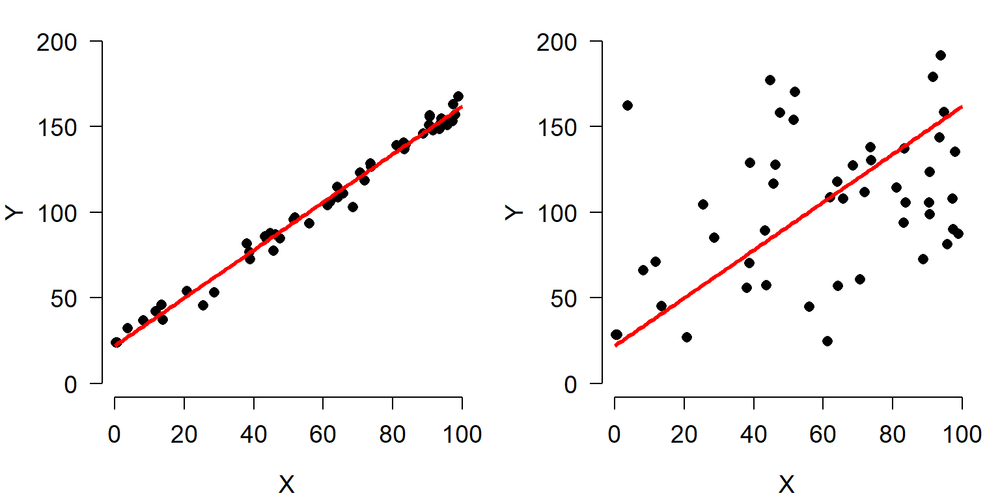
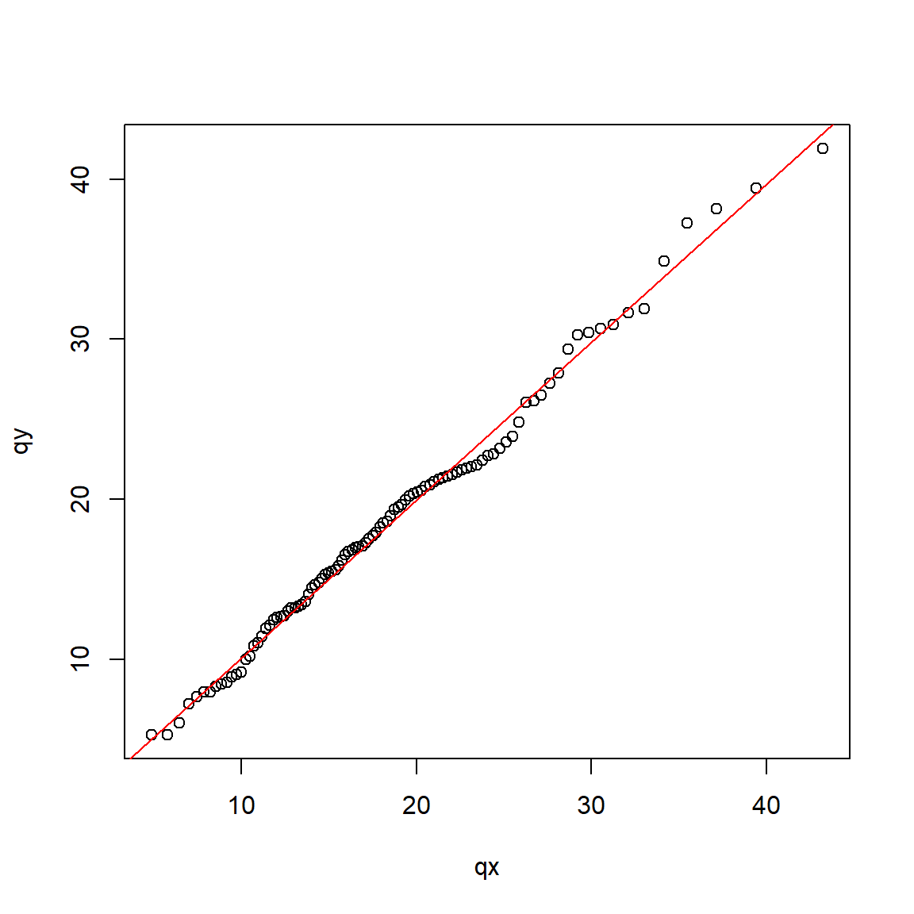
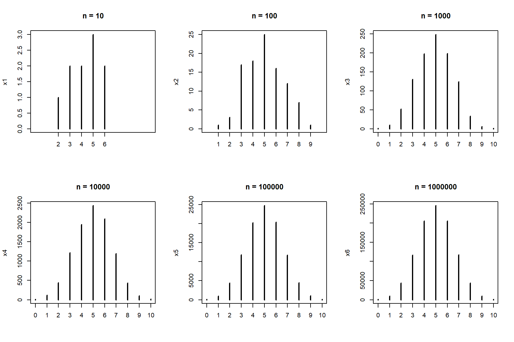
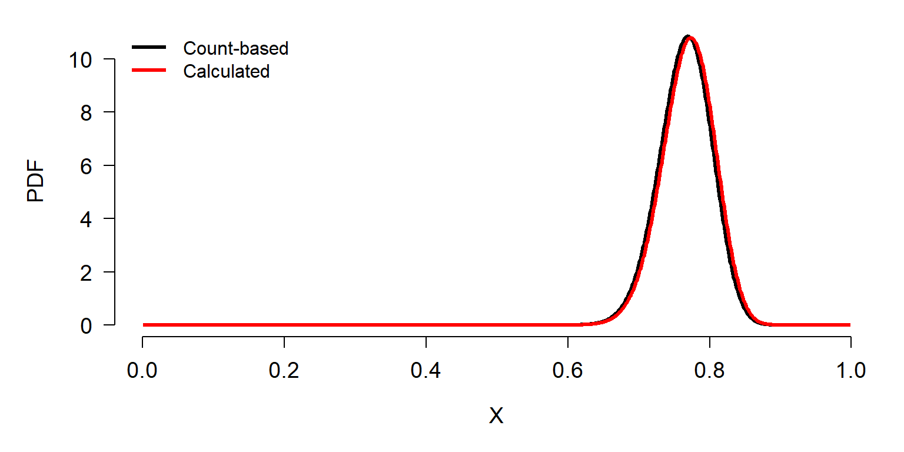

Module 4 Exploratory data analysis
Sometimes you have to “pre-analyze” your data before you can really analyze it. This process of exploratory data analysis can be very informative and can reveal unexpected patterns (or problems) in your dataset. This module will demonstrate some common exploratory processes in R. Along the way we will explore how to summarize data, common data distributions and how to fit them to your data, and how to manage your data to avoid common statistical pitfalls.
One of the main questions that biologists have after collecting data is, “What statistical test do I use?” Ignoring the fact that they should have thought about that before collecting data, the answer to that question depends on the answers to two other questions:
- What question are you trying to answer?
- What kind of data do you have?
Exploratory data analysis is the process of answering the second question. Common objectives in exploratory data analysis include:
- Describing the central tendency and variability of variables
- Identifying potential outliers
- Identifying how variables are distributed
- Testing whether data meet the assumptions of statistical tests
- Checking for common issues such as autocorrelation, collinearity, and missingness.
- Searching for patterns in your data that may or may not be related to your main analysis.
How much exploratory data analysis is needed varies from to project to project. At a minimum, you should be checking to see that your data meet the assumptions of your analysis. Failure to verify that your main analysis is justified can lead to huge problems down the line. Zuur et al. (2010) reviewed a host of common data exploration methods and motivations; although aimed at ecologists, most biologists would benefit from reading their paper.
4.1 Descriptive and summary statistics
4.1.1 Basic summary statistics
One of the first steps in understanding your dataset is to summarize the values in each
variable. You can get a quick numerical summary of a vector or a dataset with summary(). The examples below use the built-in dataset iris.
summary(iris)## Sepal.Length Sepal.Width Petal.Length Petal.Width Species
## Min. :4.300 Min. :2.000 Min. :1.000 Min. :0.100 setosa :50
## 1st Qu.:5.100 1st Qu.:2.800 1st Qu.:1.600 1st Qu.:0.300 versicolor:50
## Median :5.800 Median :3.000 Median :4.350 Median :1.300 virginica :50
## Mean :5.843 Mean :3.057 Mean :3.758 Mean :1.199
## 3rd Qu.:6.400 3rd Qu.:3.300 3rd Qu.:5.100 3rd Qu.:1.800
## Max. :7.900 Max. :4.400 Max. :6.900 Max. :2.500summary(iris$Petal.Length)## Min. 1st Qu. Median Mean 3rd Qu. Max.
## 1.000 1.600 4.350 3.758 5.100 6.900Function range() reports the minimum and maximum values in a vector. Like many of the functions for descriptive statistics, this function does not handle missing (NA) values by default. The argument na.rm=TRUE must be set if there are missing values.
range(iris$Petal.Length)## [1] 1.0 6.9# illustration of working with missing values
x <- c(rnorm(20), NA)
range(x)## [1] NA NArange(x, na.rm=TRUE)## [1] -2.714130 1.077231Central tendency can be estimated as the mean or median using eponymous functions. The mean is what most people refer to as the “average” in everyday conversation: the sum of values divided by the number of values. The mean is the value that values would be if they were all the same.
The median is the central value. If the values are sorted from smallest to greatest, the median is the value in the middle. I.e., half of the values are less than the median, and half are greater. This is also referred to as the “50th percentile” because 50% of values are \(\le\) the median.
For many datasets, the mean and median will be approximately the same. Data that are skewed will have a median different from their mean. Biologists typically summarize data using the mean, but median can be appropriate in some situations–especially when data are not normally distributed.
Like range, these functions for mean and median do not handle NA values unless you specify na.rm=TRUE.
a <- rnorm(50)
mean(a)## [1] 0.07336362median(a)## [1] 0.02716257Variance and standard deviation (SD) are calculated by var() and sd(). There is no built-in function for standard error (SE) so it must be calculated using the sample size (function length()). Note that you should very rarely compute and report SE because SD is more appropriate in almost every situation that is likely to come up.
a <- rnorm(50)
var(a)## [1] 1.148712sd(a)## [1] 1.07178sqrt(var(a)) # equivalent to sd(a)## [1] 1.07178# standard error of the mean
sd(a)/sqrt(length(a))## [1] 0.1515725Quantiles of data are calculated using the function quantile(). A quantile is a value in a distribution or sample such that some specified proportion of observations are less than or equal to that value. For example, the 0.5 quantile is the value such that half of values are less than or equal to that value. Quantiles are usually expressed either as proportions in [0, 1] or as percentiles in [0, 100]. R uses proportions, but you can always multiply by 100 to get percentiles.
Special quantiles are also available as their own functions: minimum min(), median median(), maximum max(), and interquartile range IQR(). Remember that argument na.rm is needed for many of these functions if there are missing values!
a <- rnorm(50)
# 20th percentile (aka: 1st quintile)
quantile(a, probs=0.2) ## 20%
## -0.4469422# 75th percentile (aka: 3rd quartile)
quantile(a, probs=0.75) ## 75%
## 0.6407535# 2.5 and 97.5 percentiles
# (i.e. 95% CI of a normal distribution)
quantile(a, probs=c(0.025, 0.975)) ## 2.5% 97.5%
## -1.780417 1.493172# minimum, or 0th percentile
min(a) ## [1] -2.178898# maximum, or 100th percentile
max(a)## [1] 1.7061# interquartile range (75th – 25th percentile)
IQR(a) ## [1] 1.008555# demonstration of na.rm
b <- c(a, NA)
min(b)## [1] NAmin(b,na.rm=TRUE)## [1] -2.1788984.1.2 Summarizing data with the apply() family
The apply() family is a group of functions that operate over the dimensions of an object. You can use the apply() family to summarize across rows or columns, or across elements of a list, and so on. The function used most often is apply(), which works on data frames, matrices and arrays. There are also lapply(), which works on lists and returns a list; sapply(), which operates on lists and returns the simplest object possible; and many others.
4.1.2.1 apply() for arrays and data frames
Function apply() works on arrays and data frames with \(\ge\) 2 dimensions. Its arguments are the object to be operated on, the margin (or dimension) on which to operate, and the operation (or function). The first margin is rows, the second is columns, and so on. The result of apply() will always have one fewer dimension than the input.
Some typical apply() commands are demonstrated below:
# test dataset with only numeric values
x <- iris[,1:4]
# margin 1 = rows --> row sums
apply(x, 1, sum)## [1] 10.2 9.5 9.4 9.4 10.2 11.4 9.7 10.1 8.9 9.6 10.8 10.0 9.3 8.5 11.2 12.0 11.0 10.3 11.5 10.7 10.7 10.7 9.4 10.6 10.3 9.8 10.4 10.4 10.2
## [30] 9.7 9.7 10.7 10.9 11.3 9.7 9.6 10.5 10.0 8.9 10.2 10.1 8.4 9.1 10.7 11.2 9.5 10.7 9.4 10.7 9.9 16.3 15.6 16.4 13.1 15.4 14.3 15.9 11.6
## [59] 15.4 13.2 11.5 14.6 13.2 15.1 13.4 15.6 14.6 13.6 14.4 13.1 15.7 14.2 15.2 14.8 14.9 15.4 15.8 16.4 14.9 12.8 12.8 12.6 13.6 15.4 14.4 15.5 16.0
## [88] 14.3 14.0 13.3 13.7 15.1 13.6 11.6 13.8 14.1 14.1 14.7 11.7 13.9 18.1 15.5 18.1 16.6 17.5 19.3 13.6 18.3 16.8 19.4 16.8 16.3 17.4 15.2 16.1 17.2
## [117] 16.8 20.4 19.5 14.7 18.1 15.3 19.2 15.7 17.8 18.2 15.6 15.8 16.9 17.6 18.2 20.1 17.0 15.7 15.7 19.1 17.7 16.8 15.6 17.5 17.8 17.4 15.5 18.2 18.2
## [146] 17.2 15.7 16.7 17.3 15.8# margin 2 = columns --> column sums
apply(x, 2, sum) # 2 = columns## Sepal.Length Sepal.Width Petal.Length Petal.Width
## 876.5 458.6 563.7 179.9The first apply() command above calculates the sum of values in each row (margin 1) of its input x. The second apply() command calculates the sum of values in each column (margin 2). The results are vectors whose lengths are the same as the corresponding dimension of the input (number of rows or columns).
The first commmand above is equivalent to:
y <- numeric(nrow(x))
for(i in 1:nrow(x)){y[i] <- sum(x[i,])}
# verify that results are the same:
all(apply(x, 1, sum) == y)## [1] TRUEBelow are some examples of calculations you can do with the apply() function. Notice that when the function to be applied takes its own arguments, those arguments are supplied following the function name, in the same order as they would be supplied to the function if used outside of apply().
# column minima
apply(x, 2, min)## Sepal.Length Sepal.Width Petal.Length Petal.Width
## 4.3 2.0 1.0 0.1# 75th percentile of each column
apply(x, 2, quantile, 0.75)## Sepal.Length Sepal.Width Petal.Length Petal.Width
## 6.4 3.3 5.1 1.8# interquartile range of each row
apply(x, 1, IQR)## [1] 2.800 2.375 2.550 2.300 2.850 2.900 2.575 2.625 2.175 2.400 2.950 2.500 2.375 2.475 3.500 3.500 3.200 2.775 2.925 2.925 2.575 2.825 3.050 2.350
## [25] 2.275 2.250 2.500 2.750 2.750 2.325 2.275 2.675 3.225 3.425 2.375 2.700 2.975 2.850 2.325 2.650 2.825 1.800 2.475 2.525 2.600 2.325 2.875 2.450
## [49] 2.925 2.625 2.525 2.200 2.700 2.325 2.600 2.375 2.225 1.650 2.600 1.850 2.125 2.000 2.600 2.525 1.600 2.300 2.150 2.250 2.900 2.175 2.225 2.100
## [73] 3.000 2.650 2.325 2.350 2.850 2.750 2.325 1.850 2.150 2.100 2.050 2.900 2.100 1.925 2.500 2.825 1.900 2.175 2.425 2.375 2.200 1.750 2.200 2.025
## [97] 2.075 2.275 1.375 2.075 2.975 2.775 3.425 3.150 3.175 4.075 2.300 3.925 3.700 3.050 2.550 3.075 3.050 2.800 2.575 2.600 3.050 3.550 4.575 3.225
## [121] 3.025 2.475 4.350 2.775 2.950 3.450 2.600 2.500 3.175 3.500 3.850 3.425 3.150 2.925 3.425 3.675 2.625 2.950 2.400 2.925 2.950 2.650 2.775 3.150
## [145] 2.850 2.750 2.975 2.775 2.475 2.600Arrays with >2 dimensions can have functions applied across multiple dimensions:
# object with 3 rows, 2 columns, and 3 "layers":
x <- array(1:18, dim=c(3,2,3))
# how many dimensions does the result have?
apply(x, c(1,2), sum)## [,1] [,2]
## [1,] 21 30
## [2,] 24 33
## [3,] 27 36You can also write custom functions and apply them to rows or columns. Below are some useful functions to apply. These functions can be defined inside apply() or outside apply(). Each of the functions below takes an input called x, but this is not as the x that is the input to apply(). The x in function(x) is used inside the braces {} as the name for the input passed from apply() to the inner function.
x <- iris[,1:4]
# count values > 2
apply(x, 2, function(x){length(which(x > 2))})## Sepal.Length Sepal.Width Petal.Length Petal.Width
## 150 149 100 23# count missing (NA) values
apply(x, 2, function(x){length(which(is.na(x)))})## Sepal.Length Sepal.Width Petal.Length Petal.Width
## 0 0 0 0# count non-missing values
count.nonmissing <- function(x){length(which(!is.na(x)))}
apply(x, 2, count.nonmissing)## Sepal.Length Sepal.Width Petal.Length Petal.Width
## 150 150 150 1504.1.2.2 lapply() and sapply() for lists and other objects
The other members of the apply() family that are most often used are lapply() and sapply().
lapply(), operates on lists and returns a list. Short for “list apply”, and usually pronounced “el apply” or “lap-lie”.sapply()operates on many object types (including lists) and returns the simplest object possible. Short for “simplify apply”, and usually pronounced “ess apply” or “sap-lie”. Usually the goal withsapply()is to get a vector or matrix out of a list.
The code block below makes a list called mylist and illustrates the use of lapply() and sapply().
mylist <- vector("list", 5)
for(i in 1:length(mylist)){
x <- rnorm(20)
mylist[[i]] <- t.test(x)
}#i
# get estimated mean of each element of mylist, in a list
lapply(mylist, function(x){x$estimate})## [[1]]
## mean of x
## -0.2686405
##
## [[2]]
## mean of x
## -0.203565
##
## [[3]]
## mean of x
## 0.09948298
##
## [[4]]
## mean of x
## -0.04637868
##
## [[5]]
## mean of x
## 0.1247556# get estimated mean of each element, simplified to vector
sapply(mylist, function(x){x$estimate})## mean of x mean of x mean of x mean of x mean of x
## -0.26864053 -0.20356498 0.09948298 -0.04637868 0.12475562The function lapply() can sometimes be combined with do.call() to produce similar outputs as sapply():
do.call(c, lapply(mylist, function(x){x$estimate}))## mean of x mean of x mean of x mean of x mean of x
## -0.26864053 -0.20356498 0.09948298 -0.04637868 0.124755624.1.3 Tabulation and aggregation
4.1.3.1 Tabulation of a single variable
The table() function tallies the occurrences of each unique value in a vector. Notice that table() only returns a result for the values that actually occur in the input.
aa <- rpois(50,10) # Random Poisson distribution
table(aa)## aa
## 4 6 7 8 9 10 11 12 13 14 15 16 17 18 19
## 1 1 5 4 5 5 8 7 6 1 3 1 1 1 1If you need a count that includes 0s for missing values, there are a few ways to do this. My preferred solution is to use the custom function below. This function counts how many times each value in values occurs in input.
table.all <- function(input, values){
res <- sapply(values,
function(x){length(which(input == x))})
names(res) <- as.character(values)
return(res)
}
# use with random poisson values:
x1 <- rpois(20, 10)
table.all(x1, 0:30)## 0 1 2 3 4 5 6 7 8 9 10 11 12 13 14 15 16 17 18 19 20 21 22 23 24 25 26 27 28 29 30
## 0 0 0 0 0 1 4 1 1 3 0 2 1 2 2 2 1 0 0 0 0 0 0 0 0 0 0 0 0 0 0# compare to:
table(x1)## x1
## 5 6 7 8 9 11 12 13 14 15 16
## 1 4 1 1 3 2 1 2 2 2 1If you plot a table() result, you get a sort of bar graph. This is similar to what you get with a command like plot(...,type = "h")30.
plot(table(aa))
4.1.3.2 Cross-tabulation (aka: frequency tables)
Contingency tables, or frequency tables are calculated with ftable(). This function counts the number of values in each combination of different factors. The example below uses the built-in dataset iris modified to have some additional factors.
set.seed(123)
x <- iris
x$color <- c("purple", "white")
x$bloom <- sample(c("early", "late"), nrow(x), replace=TRUE)
handed.table <- ftable(x$color~x$bloom)
handed.table## x$color purple white
## x$bloom
## early 39 37
## late 36 38Contingency tables produced by ftable() can be used directly for chi-squared (\(\chi^2\)) tests:
chisq.test(handed.table)##
## Pearson's Chi-squared test with Yates' continuity correction
##
## data: handed.table
## X-squared = 0.026671, df = 1, p-value = 0.8703The function ftable() also has a formula interface, much like many statistical functions (e.g., lm()). This is useful if you want more complicated tables or more combinations of categories. Notice that the order of variables affects the structure of the resulting table. The 6 commands below produce equivalent tables, but the results are organized differently.
ftable(x$Species~x$color+x$bloom)## x$Species setosa versicolor virginica
## x$color x$bloom
## purple early 17 13 9
## late 8 12 16
## white early 13 14 10
## late 12 11 15ftable(x$Species~x$bloom+x$color)## x$Species setosa versicolor virginica
## x$bloom x$color
## early purple 17 13 9
## white 13 14 10
## late purple 8 12 16
## white 12 11 15ftable(x$color~x$Species+x$bloom)## x$color purple white
## x$Species x$bloom
## setosa early 17 13
## late 8 12
## versicolor early 13 14
## late 12 11
## virginica early 9 10
## late 16 15ftable(x$color~x$bloom+x$Species)## x$color purple white
## x$bloom x$Species
## early setosa 17 13
## versicolor 13 14
## virginica 9 10
## late setosa 8 12
## versicolor 12 11
## virginica 16 15ftable(x$bloom~x$color+x$Species)## x$bloom early late
## x$color x$Species
## purple setosa 17 8
## versicolor 13 12
## virginica 9 16
## white setosa 13 12
## versicolor 14 11
## virginica 10 15ftable(x$bloom~x$Species+x$color)## x$bloom early late
## x$Species x$color
## setosa purple 17 8
## white 13 12
## versicolor purple 13 12
## white 14 11
## virginica purple 9 16
## white 10 15Variables on the left side of the ~ will be on the top of the table, and variables on the right side of the ~ will be on the left side of the table31. On each side, variables are ordered in reverse order from the table matrix outwards. Compare the results of these commands:
ftable(x$Species~x$color+x$bloom)## x$Species setosa versicolor virginica
## x$color x$bloom
## purple early 17 13 9
## late 8 12 16
## white early 13 14 10
## late 12 11 15ftable(x$Species~x$bloom+x$color)## x$Species setosa versicolor virginica
## x$bloom x$color
## early purple 17 13 9
## white 13 14 10
## late purple 8 12 16
## white 12 11 15The output of ftable() is of class ftable, which looks like a matrix or data frame but does not function like one. Sometimes it is necessary to convert an ftable() output to different class in order to pull values from it. This can be done with base R conversion functions. Notice that the data frame form of handed.table resembles the “long” data format we discussed in module 3.
handed.table <- ftable(x$Species~x$color)
as.matrix(handed.table)## x$Species
## x$color setosa versicolor virginica
## purple 25 25 25
## white 25 25 25as.data.frame(handed.table)## x.color x.Species Freq
## 1 purple setosa 25
## 2 white setosa 25
## 3 purple versicolor 25
## 4 white versicolor 25
## 5 purple virginica 25
## 6 white virginica 254.1.4 Aggregation (aka: pivot tables)
One of the most common data operations is aggregation, or summarization by groups. In Excel, this is done using Pivot Tables. In R, the function aggregate() is used for pivot table-like functionality. But, as we shall see, the R aggregate() function is much more powerful than an Excel pivot table. The tidyverse equivalent is dplyr::summarise().

The most important inputs to aggregate() are the data to be summarized, the variable or variables that define the groups, and the function to summarize by. The examples below shows how to calculate the mean petal length for each species in the iris dataset. If the variable to be summarized and the grouping variables are in the same data frame (which is usually the case), you can use the formula interface to aggregate(); otherwise, use the by= interface.
# example using by=
aggregate(iris$Petal.Length,
by=list(iris$Species),
mean)## Group.1 x
## 1 setosa 1.462
## 2 versicolor 4.260
## 3 virginica 5.552# better method using formula
aggregate(Petal.Length~Species,
data=iris,
mean)## Species Petal.Length
## 1 setosa 1.462
## 2 versicolor 4.260
## 3 virginica 5.552The formula interface is cleaner and easier than the by= interface (first example), and has the key advantage that it automatically passes variable names to the result. If you use by= you may want to rename the columns in the result.
In my own code I prefer to name my aggregation tables agg, with additional parts like agg1, agg.fish, and so on if needed. Function aggregate() produces a data frame with a column for each grouping variable (Group.1, Group.2 and so on) and a single column x containing the summarized values. We can use this property to construct more complicated tables:
x <- iris
# add another grouping variable
x$color <- c("red", "white")
# by= example: notice how columns in result need to be renamed
agg <- aggregate(x$Petal.Length,
by=list(x$Species, x$color),
mean)
agg## Group.1 Group.2 x
## 1 setosa red 1.456
## 2 versicolor red 4.308
## 3 virginica red 5.564
## 4 setosa white 1.468
## 5 versicolor white 4.212
## 6 virginica white 5.540# change column names
names(agg) <- c("spp", "color", "mean")
agg## spp color mean
## 1 setosa red 1.456
## 2 versicolor red 4.308
## 3 virginica red 5.564
## 4 setosa white 1.468
## 5 versicolor white 4.212
## 6 virginica white 5.540# formula example: much easier
agg <- aggregate(Petal.Length~Species+color, data=x, mean)
agg## Species color Petal.Length
## 1 setosa red 1.456
## 2 versicolor red 4.308
## 3 virginica red 5.564
## 4 setosa white 1.468
## 5 versicolor white 4.212
## 6 virginica white 5.540Notice that in agg the values are sorted by the grouping variables from right to left: in this example, by color, then Species. This is the reverse of the order in the original command. The result of aggregate() is a data frame, so data within it can be rearranged using order().
Often we want to summarize a variable by multiple functions–for example, to get a table with the mean and SD in each group. The way to do this is to use several aggregate() commands, and then combine the results. The examples below shows two ways to construct a table with the mean and SD of a variable.
# define a formula and save some typing:
f1 <- formula(Petal.Length~Species)
# method 1: single table
agg <- aggregate(f1, data=x, mean)
agg$sd <- aggregate(f1, data=x, sd)$Petal.Length
names(agg)[which(names(agg) == "Petal.Length")] <- "mn"
agg## Species mn sd
## 1 setosa 1.462 0.1736640
## 2 versicolor 4.260 0.4699110
## 3 virginica 5.552 0.5518947The $Petal.Length on the end of aggregate() is important because we want only column Petal.Length of the output. Without $Petal.Length, the result will be messy when we try to add it to agg. If you ever want to do this with the by= method, the column of the output containing the summarized values will be named x.
# method 1: single table, with by=
agg <- aggregate(iris$Petal.Length, by=list(iris$Species), mean)
## note use of $x:
agg$sd <- aggregate(iris$Petal.Length, by=list(iris$Species), sd)$x
# change names in result:
names(agg)[which(names(agg) == "x")] <- "mn"
names(agg)[which(names(agg) == "Group.1")] <- "species"
agg## species mn sd
## 1 setosa 1.462 0.1736640
## 2 versicolor 4.260 0.4699110
## 3 virginica 5.552 0.5518947The second approach is to make several aggregate() tables, and combine them into a single result.
# method 2: multiple tables
# (note: there are lots of ways to do this)
agg.mn <- aggregate(f1, data=x, mean)
agg.sd <- aggregate(f1, data=x, sd)
agg <- data.frame(agg.mn, sd=agg.sd$Petal.Length)
names(agg)[2] <- "mn"
agg## Species mn sd
## 1 setosa 1.462 0.1736640
## 2 versicolor 4.260 0.4699110
## 3 virginica 5.552 0.5518947If you’ve ever used Excel Pivot Tables, you will have noticed that data can only be summarized by a limited set of functions. On the other hand, aggregate() can be used with pretty much any function that takes in a vector and returns a scalar. You can even write your own functions! Below are some examples. Notice in the first example that arguments to the summarizing function follow its name.
# first quartile (25th percentile)
aggregate(Petal.Length~Species, data=x, quantile, 0.25)## Species Petal.Length
## 1 setosa 1.4
## 2 versicolor 4.0
## 3 virginica 5.1# number of values
aggregate(Petal.Length~Species, data=x, length)## Species Petal.Length
## 1 setosa 50
## 2 versicolor 50
## 3 virginica 50The following examples illustrate anonymous functions: functions defined within another function and never defined in the R environment. The x in function(x) is taken to be the values within each group defined by the variable(s) on the right-hand side of ~ or in by=. Notice that the end of such a command will need a lot of ), }, and sometimes ]. Using an editor with syntax highlighting is very helpful!
# number of missing values
aggregate(Petal.Length~Species,
data=x,
function(x){length(which(is.na(x)))})## Species Petal.Length
## 1 setosa 0
## 2 versicolor 0
## 3 virginica 0# number of non-missing values
aggregate(Petal.Length~Species,
data=x,
function(x){length(which(!is.na(x)))})## Species Petal.Length
## 1 setosa 50
## 2 versicolor 50
## 3 virginica 50# number of values >= 2
aggregate(Petal.Length~Species,
data=x,
function(x){length(which(x >= 2))})## Species Petal.Length
## 1 setosa 0
## 2 versicolor 50
## 3 virginica 50# number of UNIQUE values >= 2
aggregate(Petal.Length~Species,
data=x,
function(x){length(unique(x[which(x >= 2)]))})## Species Petal.Length
## 1 setosa 0
## 2 versicolor 19
## 3 virginica 20Being able to use almost any function, and to define your own functions, makes aggregate() an immensely powerful tool to have in your R toolbox.
4.2 Visualizing data distributions
Probability distributions are mathematical functions that describe the way that values vary randomly. This is a key idea in statistics and data analysis. We usually consider data to be essentially random, but with the values forming predictable patterns over many observations. The nature of those patterns is what probability distributions attempt to model. A probability distribution does not tell us the value of any particular observation, but it does let us estimate the likelihood of observing any particular value. The figure below demonstrates some common probability distributions: the heights of the bars reflect the likelihood of the values on the x-axes occuring under those distributions.

Successful data analysis requires paying attention to and thinking deeply about the way that your data are distributed. Different kinds of biological processes, like counts, waiting times, measurements, etc., have randomness that is described by different probability distributions. The assumption that values follow certain distributions is baked into most statistical methods. Trying to use a method that assumes an inappropriate distribution will probably lead to invalid results. For example, if you try to analyze count data as if they came from a continuous, unbounded distribution, your statistical model could predict nonsensical outcomes such as negative or non-integer counts. The figure below shows this:
Sometimes it is not always obvious what distribution your data should follow. Some cases are relatively straight forward: counts should follow a Poisson or negative binomial distribution. Other cases are less straightforward: should expression data be considered normally, log-normally, or some other-ly distributed? Usually there is a clear a priori answer to this question that can be obtained by thinking about what kind of process gave rise to the numbers.
A related question to “what distribution does my data follow?” is “do my data follow this distribution?” Even if you have some expectation of how your data should be distributed, that is no guarantee that your study system cooperated. You should always check to see if your data follow the distribution you assumed, and the distribution assumed by your statistical test. Deciding what distribution your data follow is always somewhat subjective, and real datasets often contain some departure from expectations. In this section we will explore some graphical techniques and heuristics for determining how data are distributed.
Knowing about data distributions is a one thing, but figuring out which distribution best fits your data is quite another. Like much of the data analysis workflow, picking a distribution can be as much an art as it is a science. This is because distributions of real data are often messy, or do not conform exactly to any one distribution, or may conform partly to several! Sometimes the answer to “what distribution should I use to analyze this data?” is not clear-cut. The figure below gives a (very) rough guide to starting to identify a response distribution. Note that this is only a guide for where to look first, and not a definitive guide to selecting a response distribution. Even if your choices lead you to, say, the normal distribution, you must still verify that your data conform (at least roughly) to that distribution. Note also that this diagram does not include every distribution out there, but rather a select set of commonly encountered distributions in biology.

4.2.1 Boxplots (aka: box-and-whisker plots)
Boxplots, or box-and-whisker plots, summarize the distribution of continuous variables. They are often used to summarize data by a factor, making it easier to see how the distribution of a variable differs between groups. The boxplot shows extreme values (whiskers), the first and third quartiles, and the median.
Boxplot of a single variable:
boxplot(iris$Petal.Width)
Boxplot with some options for a nicer plot:
boxplot(iris$Petal.Width,
ylab="Petal width (cm)",
ylim=c(0,3))
Boxplot across levels of a factor (note formula interface):
boxplot(iris$Petal.Width~iris$Species,
xlab="Species",
ylab="Petal.Width (cm)",
ylim=c(0,3))
A highly asymmetric box-and-whisker plot can indicate that data are skewed or non-normal.
The base boxplot() function can produce summaries across multiple variables. Essentially it treats each combination of grouping variables as a separate set of values. There are better ways to plot group differences (e.g., for publication), but the base boxplot() does just fine for data exploration.
Boxplots can be constructed using several grouping variables. The order of grouping variables in the formula will determine the order of boxes in the plot.
x <- iris
x$color <- c("red", "white") #made up variable
# group by species and color:
boxplot(Petal.Width~Species+color, data=x,
ylab="Petal width (cm)", ylim=c(0,3))
# notice difference in order of grouping:
boxplot(Petal.Width~color+Species, data=x,
ylab="Petal width (cm)", ylim=c(0,3))
4.2.2 Histograms
Histograms show how values of a distribution are spread across different intervals. These intervals are sometimes called cells or bins. A good histogram will show, approximately, the shape of a probability density function (PDF) or the probability mass function (PMF). The base function hist() will automatically select intervals that look nice, but you can specify the intervals with argument breaks.
x <- rnorm(100)
par(mfrow=c(1,2))
hist(x)
hist(x, breaks=seq(-4, 4, by=0.5))
# reset
par(mfrow=c(1,1))The area of each bar is also proportional to the number of values in each interval.
R histograms can be presented as counts (freq=TRUE, the default), or as probability density (freq=FALSE). We’ll talk more about probability density later in the next section.
Compare these results:
par(mfrow=c(1,2))
hist(x)
hist(x, freq=FALSE)
# reset
par(mfrow=c(1,1))Because the second histogram shows probability densities, the areas under the bars sum to 1 (this is part of the definition of a PDF).
A histogram can provide a visual first clue as to the shape of a distribution’s PDF or PMF. For example, the histograms of x1 and x2 below suggest very different distributions:
Notice that x1 appears roughly normal. It is symmetric, has a bell-shape, and is concentrated near its center. Contrast this with x2. Distribution x2 is strongly right-skewed (i.e., lots of small values with a long positive tail), with most values near 0. It also has no negative values (range(x2)). Because of these properties we might suspect that x2 is really a log-normal distribution. We can check this by making a histogram of the log of x2:
 Other distributions might be tricky. Consider the histograms below:
Other distributions might be tricky. Consider the histograms below:

What a mess! Histogram x3 shows what is commonly referred to as a bimodal distribution. This is a distribution with two modes, or most common values, with a gap between them. Bimodal distributions often arise from a mixture of two distributions (in this case, two normals). Or, they can indicate that something in the data generating process leads to diverging outcomes. For example, in many college courses the grade distribution can be bimodal, with most students making either a B or D.
Histogram x4 shows a distribution with some right skew, but not the long, tapering tail characteristic of the lognormal distribution (see x2, above). The fact that the mean is near 5 and not 0 is another point against a lognormal. But the clincher is that there are negative values, which a lognormal distribution cannot take (think about why this is). Think for a few minutes about what distribution x4 might be, then click the footnote to find out32.
4.2.3 Kernel density plots
Kernel density plots are a way to empirically estimate the probability distribution function (PDF) of a distribution. A plot of the estimated PDF is essentially a smoothed histogram (technically, it is the heights of a histogram as the bin width approaches 0).
The PDF tells us two things. Practically speaking, the PDF of a distribution at a given value is related to how likely that value is to occur relative to other values. However, that is NOT a probability of that value occurring. What the PDF really expresses is the rate of change in cumulative density at a value. In other words, the PDF is the slope or first derivative of the CDF. Conversely, the CDF is the integral of the PDF. The PDF is the rate at which the probability of observing a value \(\le\) x increases at each x. Again, this is related to but not the same as the probability of that value occurring.

The kernel density plot is to the PDF what the ECDF is to the CDF. Just like an ECDF plot presents an estimate of the true CDF, the kernel density plot presents an estimate of the true PDF. This means that presenting a kernel density plot or an ECDF plot is largely a matter of preference because they convey the same information in different ways.
Note that a kernel density plot makes more sense for a continuous distribution than for a discrete distribution. The equivalent plot for a discrete distribution is the probability mass function (PMF) plot. The PMF of a discrete distribution is 0 for any non-integer value. The example below shows kernel density plots for four distributions: Normal(mean=5, SD=2), Gamma(k=3, \(\theta\)=2), Uniform(min=0, max=1), and Poisson(\(\lambda\)=4). The first 3 are continuous distributions and the last is a discrete distribution.
set.seed(123)
n <- 1e3
par(mfrow=c(2,2))
plot(density(rnorm(n,5,2)))
plot(density(rgamma(n, 3, 2)))
plot(density(runif(n)))
plot(density(rpois(n,4)))
The estimated density functions aren’t too far off from the real functions. But, notice that the plots for the gamma, uniform, and Poisson variables extend outside of the domains of the underlying distributions. For example, the density for the Poisson variable extends below 0. You can truncate the plot using arguments from or to for density. This is a good idea if you are exploring data that you suspect have a natural domain. For example, lengths and times must be non-negative, so you should include from=0 in the density() command.
par(mfrow=c(2,2))
plot(density(rnorm(n,5,2)))
plot(density(rgamma(n, 3, 2), from=0))
plot(density(runif(n), from=0, to=1))
plot(density(rpois(n,4), from=0))
The estimated density functions are now in their supported intervals, which is nice. There’s one more issue with the estimates for the Poisson distribution. Notice that the bottom right plot shows non-zero probability density for non-integer values. This doesn’t make sense for a Poisson distribution, which can only take non-negative integer values. What’s going on here is that the density() function does not know whether a distribution is supposed to be discrete or continuous. As far as the function is concerned, the distribution is continuous and just happens to have no non-integer values.
If you have data that you have good reason to suspect are discrete, there is a better way than density() to visualize the relative likelihood of different values: the probability mass function (PMF, not PDF). The PMF of a discrete distribution can be calculated rather than estimated. In the example below we use the table() function, which tallies up the number of times each value occurs in a vector. We could convert the cell counts to PMF estimates by dividing by the number of observations (e.g., plot(table(x1)/n)).
# make some data
set.seed(42)
n <- 1e3
x1 <- rpois(n, 4)
x2 <- rbinom(n, 20, 0.4)
x3 <- rgeom(n, 0.3)
x4 <- rnbinom(n, 10, 0.1)
# plot cell counts:
par(mfrow=c(2,2))
plot(table(x1))
plot(table(x2))
plot(table(x3))
plot(table(x4))
Dividing the cell counts by the number of total observations (n) estimates the empirical PMF:
par(mfrow=c(2,2))
plot(table(x1)/n)
plot(table(x2)/n)
plot(table(x3)/n)
plot(table(x4)/n)
We can verify that the empirical PMFs that we calculated match the actual PMFs:
# compare to true PMF:
v1 <- 0:max(x1)
v2 <- 0:max(x2)
v3 <- 0:max(x3)
v4 <- 0:max(x4)
y1 <- dpois(v1, 4)
y2 <- dbinom(v2, 20, 0.4)
y3 <- dgeom(v3, 0.3)
y4 <- dnbinom(v4, 10, 0.1)
par(mfrow=c(2,2))
plot(table(x1)/n)
points(v1, y1, type="l", col="red")
plot(table(x2)/n)
points(v2, y2, type="l", col="red")
plot(table(x3)/n)
points(v3, y3, type="l", col="red")
plot(table(x4)/n)
points(v4, y4, type="l", col="red")
4.2.4 Empirical cumulative distribution plots (ECDF)
The cumulative distribution function (CDF) is the probability that a random variable will take on a value less than or equal to some value. Formally, we say that a continuous distribution X will take on value \(\le\) x with probability \(F(x)\). The CDF is \(F(x)\).The figure below shows what this means.

The figure shows the CDF of a normal distribution with mean = 0 and SD = 1 (i.e., the standard normal distribution. Like all CDFs, \(F(x)\) increases monotonically (never decreasing) from 0 to 1 as x increases from the lower bound to the upper bound of the distribution. In the case of the normal distribution, the bounds of x are [-\(\infty\), +\(\infty\)]. The CDF approaches 0 as x decreases, and approaches 1 as x increases. The red dashed lines show how to interpret the relationship between the axes. For any value on the x-axis, the y-axis shows what proportion of values are \(\le\) x. For any value on the y-axis, the x-axis shows the value at the y-th quantile of the distribution.
The CDF is in a very real sense the definition of a probability distribution. Every probability distribution can be identified by a unique CDF. It doesn’t matter whether a distribution is continuous, discrete, or a mixture of both. The figure below shows what the CDFs of a discrete or mixed distribution look like compared to that of a continuous distribution33.

The examples below calculate and plot ECDF plots for a uniform (left) and a normal distribution (right).
set.seed(42)
n <- 1e3
x1 <- runif(n, 3, 8)
x2 <- rnorm(n, 7, 4)
par(mfrow=c(1,2))
plot(ecdf(x1))
plot(ecdf(x2))
# add lines at 20th percentile:
abline(h=0.2, lty=2, col="red")
abline(v=quantile(x2, 0.2), lty=2, col="red")
The y-axis of an ECDF plot shows the calculated quantile of the distribution (e.g., 0.4 quantile = 40th percentile \(\equiv\) 40% of x are \(\le F(x)\)). The x-axis shows the values of the distribution. In the left plot, we see that the slope of the ECDF plot is roughly constant. This suggests a uniform distribution. The plot on the right shows the S-shaped ECDF typical of a bell-shaped curve, so we might suspect a normal distribution. The red lines on the right plot illustrate that about 20% of values are \(\le\) 3.6.
ECDF plots can be calculated for discrete distributions as well—they just look like step functions. Step-like ECDF plots can also appear when a continuous distribution has many more observations than unique values.
set.seed(42)
n <- 1e3
x1 <- rpois(n, 3) # Poisson
x2 <- rgeom(n, 0.3) # geometric
par(mfrow=c(1,2))
plot(ecdf(x1))
plot(ecdf(x2))
Recall that every result in R is an object. The output of the function ecdf() is actually another function that calculates the estimated CDF for a new value. This can be very handy if you want to interpolate the ECDF to make a smoother curve.
class(ecdf(rnorm(100)))## [1] "ecdf" "stepfun" "function"Here is how to use it. The example below can be useful if you need to calculate the ECDF for values that are not in the original dataset, but within its domain. In the example below, the ECDF is estimated for x = 30, which is not in the original data x. Notice what happens for values in x1 that are greater than max(x) and less than min(x).
set.seed(123)
x <- rnorm(1e2, 20, 5)
e1 <- ecdf(x) # define function for CDF(x)
x1 <- 0:100 # define new x values at which to calculate CDF
y1 <- e1(x1) # calculate CDF at each new x
par(mfrow=c(1,1))
plot(x1, y1, type="s", lwd=2, col="blue2")
Obviously, the more data points you have, the better and smoother the estimate of the ECDF will be. Consider the simulated example below that estimates the ECDF using different numbers of points.
set.seed(123)
n <- 1e4
mu <- 20
sig <- 5
x4 <- rnorm(n, mu, sig)
x1 <- x4[sample(1:n, 10, replace=TRUE)]
x2 <- x4[sample(1:n, 100, replace=TRUE)]
x3 <- x4[sample(1:n, 1000, replace=TRUE)]
xseq <- seq(0, 40, length=100)
y1 <- ecdf(x1)(xseq)
y2 <- ecdf(x2)(xseq)
y3 <- ecdf(x3)(xseq)
yt <- pnorm(xseq, mu, sig)
plot(xseq, yt, type="l", lwd=6, xlab="x",
ylab="(E)CDF = F(x)")
points(xseq, y1, type="l", lwd=2, col="red")
points(xseq, y2, type="l", lwd=2, col="blue2")
points(xseq, y3, type="l", lwd=2, col="green")
legend("topleft",
legend=c(expression(n==10), expression(n==100),
expression(n==1000), "True CDF"),
lwd=c(2,2,2,6),
col=c("red", "blue2", "green", "black"),
bty="n", cex=1.2)
The estimate with 10 points (red) is a very rough fit, but serviceable. The estimates using 100 or 1000 points are much closer to the truth (black line).
4.2.5 Quantile-quantile (QQ) plots
A quantile-quantile plot, or QQ plot, is a method for visualizing whether two sets of values come from the same distribution. This is done by plotting the quantiles of one data set against the quantiles of another data set. If the two sets come from the same distribution, then the points should fall along a straight line. QQ plots are usually used to test whether data come from a normal distribution, but could be used with any distribution. The key advantage of QQ plots is that the reference line is straight, and deviations from it are easy to see. Contrast this with the reference line in an ECDF plot, whose shape varies by distribution.
QQ plots are generated by function qqplot() or qqnorm(). The latter function is a shortcut for a QQ plot comparing the data to a normal distribution. The function qqline() is used to add a reference line. Typical use of qqnorm() and qqline() is shown below.
set.seed(123)
a <- rnorm(50, 10, 2)
b <- rlnorm(50, 1.5, 1)
par(mfrow=c(1,2))
qqnorm(a)
qqline(a, col="red", lwd=2)
qqnorm(b)
qqline(b, col="red", lwd=2)
The left panel above shows that distribution a likely follows a normal distribution because the points fall mostly on the reference line. The right panel, however, shows that distribution b likely does not follow a normal distribution. This can be seen because many of the points do not fall on the line. The arch-shaped pattern indicates that the distribution differs from the normal mainly on the tails.
QQ plots can be made to compare your data to any arbitrary distribution. If your target distribution has default parameters in R (e.g., mean = 0 and SD = 1 for the normal distribution), then the method is simple:
x <- rlnorm(50, 1.5, 1)
qqs <- 1:99/100
qx <- qlnorm(qqs)
qy <- quantile(x, qqs)
par(mfrow=c(1,1))
plot(qx, qy)
abline(lm(qy~qx), col="red")
If the target distribution does not have default parameters, or if you don’t want to use the default parameters, you can still make a QQ plot. The example below shows two methods for comparing a suspected gamma distribution to a reference gamma distribution using QQ plots. The parameters of the reference gamma distribution are estimated using the function fitdistr() from package MASS.
library(MASS)
set.seed(123)
n <- 100
x <- rgamma(100, 4, 0.2)
fd <- fitdistr(x, "gamma")
qqs <- 1:99/100
# method 1: calculate QQ plot manually
qx <- qgamma(qqs, shape=fd$estimate[1], rate=fd$estimate[2])
qy <- quantile(x, qqs)
plot(qx, qy)
abline(lm(qy~qx), col="red")
Here is an alternative strategy using qqplot():
# method 2: use qqplot()
# quantiles of reference distribution
# function to draw from reference distribution
dfun <- function(p){
qgamma(qqs, shape=fd$estimate[1], rate=fd$estimate[2])
}
# get values at each reference quantile
qx <- dfun(qqs)
# make plot
qqplot(qx, x)
abline(lm(qy~qx), col="red")
Here is another example with the negative binomial distribution:
library(MASS)
set.seed(123)
n <- 50
a <- rnbinom(n, mu=5, size=10)
# get parameters of distribution
fd <- fitdistr(a, "negative binomial")
fd## size mu
## 118.3001950 5.2000006
## (394.2399860) ( 0.3295018)# quantiles of reference distribution
qx <- ppoints(n)
# function to draw from reference distribution
dfun <- function(p){
qnbinom(p,
size=fd$estimate[1],
mu=fd$estimate[2])
}#function
# get values at each reference quantile
qy <- dfun(qx)
# make plot
qqplot(qy, a)
qqline(a, distribution=dfun, col="red")4.2.6 How should I plot my data?
Plotting and examining the distribution of your data is always a good idea. How you plot the distributions is largely up to you. As mentioned above, histograms, ECDF plots, and kernel density plots convey the same information. The information is just presented in different ways. Some people prefer one kind of distribution plot over the others. You should use whichever plot best helps you understand the distribution. Or, use whichever plot your supervisor tells you to use. Consider the figure below, which plots a normal distribution with mean = 20 and SD = 5 in four different ways.
x <- rnorm(1e3, 20, 5)
par(mfrow=c(2,2), mar=c(5.1, 5.1, 1.1, 1.1),
bty="n", lend=1, las=1,
cex.axis=1.3, cex.lab=1.3, cex.main=1.3)
hist(x)
plot(density(x), main="Kernel density plot", lwd=3)
plot(ecdf(x), lwd=3)
qqnorm(x)
qqline(x, col="red", lwd=2)
Which way is the correct way to plot the data? It depends:
- If your goal is to show how the data are spread out, use a histogram or kernel density plot.
- If your goal is to explore quantiles of the distribution, use an ECDF plot.
- If your goal is to compare to a specific distribution, use a QQ plot or an ECDF (with the reference distribution’s CDF superimposed).
Methods for visualizing data distributions can be highly field-specific. Usually a histogram, ECDF, or both, will be enough to get a sense of how a variable is distributed. The goal of this visualization is usually to determine what probability distribution is most appropriate for a variable. As we will see in the next section, that can be as much a biological decision as a statistical one.
4.3 Statistical distributions
All data contain some element of randomness. Understanding the nature and consequences of that randomness is what motivates much of modern statistics. Probability distributions are the mathematical constructs that describe randomness in statistics. This page describes some probability distributions commonly encountered in biology (and a few that aren’t common). The emphasis here is on practical understanding of what a the distributions imply about data–not on the theoretical underpinnings or mathematical details. If you want or need a rigorous introduction to probability theory, this is probably not the right place.
4.3.1 Probability distributions
All data contain some element of randomness. Understanding the nature and consequences of that randomness is what motivates much of modern statistics. Consider the figures below:

Both scatterplots show a linear relationship between X and Y. But what is different about the plot on the right? Variation. Both plots show the same relationship (\(Y=22+1.4X\)), but they differ in that the variation about the expected value (the red line) is much greater in the right plot than the left plot. Consequently, X appears to explain much more variation in Y in the left plot than in the right plot. The next figure shows that the residual variation, or difference between the expected and observed values, is much greater in the right panel. Each of these differences between the observed value of Y (\(Y_i\)) and the expected value of Y (\(E(Y_i)\)), or \(Y_i-E(Y_i)\), is called a residual.

Residuals are an important part of statistical analysis for two reasons. First, most statistical models make assumptions about the distribution of residuals. Second, the total magnitude of the residuals (usually expressed as sum of squared residuals) is useful for calculating many measures of how well a model fits the data. The residuals of a statistical model are the differences between the observed values and the values predicted by the model. The residual for observation i in variable Y, \(R_i\), is calculated as:
\[R_i=Y_i-E\left[Y_i\right]\]
where \(E(Y_i)\) is the expected value of \(Y_i\). This means that when an observation has a greater value than predicted, the residual is positive; similarly, when an observation is smaller than expected, the residual is negative. In many statistical methods, residuals are squared so that (1) positive and negative residuals do not cancel out; and (2) larger residuals carry more weight.
The figures below show the distributions of residuals for the example linear regressions above. Notice that the left dataset has a much smaller distribution of residuals than the right dataset. This is because of the much tighter fit of the left dataset’s Y values to the predicted curve.

Notice also that both distributions of residuals have a similar shape, despite the difference in width. This shape is actually very important: the normal distribution. If the residuals were not distributed this way (i.e., did not follow a normal distribution), then we would be in trouble for two reasons. First, the data were generated using a normal distribution for residuals, so something would have had to have gone wrong with our statistical test; and second, the linear regression model used to analyze the data assumes that residuals are normally distributed. If they are not, then the test is not going to produce valid estimates of statistical significance or model parameters.
The example above is an example of the importance of thinking about statistical distributions when analyzing data. So just what is a statistical distribution? Distributions are mathematical functions that define the probabilities of random outcomes. Here random means that there is some element of chance in what we observe. This randomness is not completely unpredictable. While the outcome of specific observations might be unknowable, we can make predictions about long run frequencies or averages of lots of observations. In other words, single observations are not predictable, but the properties of sets of observations are. Such properties might include the number of times a specific outcome occurs (e.g., number of times a flipped coin comes up heads) or some summary of observations (e.g., the mean tail length of chipmunks). Another term for this kind of randomness that follows a pattern is stochastic.
Another example: coin flips
Consider flipping a coin. A fair coin will come up “heads” 50% of the time, and “tails” the other 50%. If you flip a coin once, the probability of getting heads is 50%. But what about if you flip the coin 10 times? How many heads should you get? 5 is a reasonable guess. The table below shows the possible outcomes to 10 coin flips:
| Heads | Tails |
|---|---|
| 0 | 10 |
| 1 | 9 |
| 2 | 8 |
| 3 | 7 |
| 4 | 6 |
| 5 | 5 |
| 6 | 4 |
| 7 | 3 |
| 8 | 2 |
| 9 | 1 |
| 10 | 0 |
This table shows that 5 heads is only one of 11 possibilities! So, is the probability of 5 heads 1 in 11 (\(\approx\) 0.091)? Of course not, because not all outcomes are equally likely.
One of the reasons statistics is so fun is that we can often use simulation to discover patterns. The R code below will simulate the effects of flipping 1 coin 10 times. Run this code a few times and see what happens.
rbinom(1,10,0.5)## [1] 4A typical run of results might be something like 4 5 5 4 3 5 6 6 5 5 4 6. We can repeat this line many times and graph the results:
x <- numeric(20)
for(i in 1:20){x[i] <- rbinom(1,10,0.5)}
plot(table(x))
There is actually a faster way, by requesting 20 draws of 10 flips each all at once:
x <- rbinom(20,10,0.5)
plot(table(x))
Is 5 the most likely value? What about if we get a larger sample?
x1 <- table(rbinom(10,10,0.5))
x2 <- table(rbinom(100,10,0.5))
x3 <- table(rbinom(1000,10,0.5))
x4 <- table(rbinom(10000,10,0.5))
x5 <- table(rbinom(100000,10,0.5))
x6 <- table(rbinom(1000000,10,0.5))
par(mfrow=c(2,3))
plot(x1, xlim=c(0, 10), main="n = 10")
plot(x2, xlim=c(0, 10), main="n = 100")
plot(x3, xlim=c(0, 10), main="n = 1000")
plot(x4, xlim=c(0, 10), main="n = 10000")
plot(x5, xlim=c(0, 10), main="n = 100000")
plot(x6, xlim=c(0, 10), main="n = 1000000")
# reset graphical parameters
par(mfrow=c(1,1))You may have guessed by now that the properties of a set of coin flips—such as what number of heads to expect—are described by some kind of mathematical idea. This idea is called a statistical distribution. This particular distribution is the binomial distribution, which describes the outcome of any random process with a binary outcome. The name “binomial” is descriptive: “bi” for two, and “nomial” for names or states. Can you think of a biological situation where the binomial distribution might apply?
The sections below describe some distributions commonly encountered in biology, and what kinds of processes give rise to them. It is important to be able to relate biological phenomena to statistical distributions, because the underlying nature of the randomness in some process can affect how we analyze that process statistically. Note that in this class we will focus on the practical applications of these distributions, rather than their mathematical derivations.
4.3.2 Probability distributions in R
Every distribution supported in R has four functions associated with it: r__(), q__(), d__(), and p__() , where __ is the name of the distribution (or an abbreviation thereof). These 4 functions calculate different values defined by the distribution:
r__()draws random numbers from the distribution.p__()calculates the cumulative distribution function (CDF) at a given value. The reverse ofq__().d__()calculates the probability density function (PDF); i.e., the height of the density curve, or first derivative of the CDF.q__()calculates the value at a given quantile. The reverse ofp__().
The figure below shows these functions in relation to the PDF and CDF for a normal distribution.

4.3.3 Discrete distributions
Discrete distributions can take on integer values only. Because of this, many discrete distributions are related in some way to count data. Count data result from, well, counting things. Count data can also describe the number of times something happened.
4.3.3.1 Bernoulli distribution
The simplest discrete distribution is the Bernoulli distribution. It describes the outcome of a single random event with probability p. Thus, the Bernoulli distribution takes the value 1 with probability p or the value 0 with probability \(q=(1-p)\). Any opportunity for the event to happen is also called a Bernoulli trial, and the process that it describes a Bernoulli process. The probability p can take on any value in the interval [0, 1].
For convenience we usually consider a Bernoulli distribution to take the value of 0 or 1, but really it could represent any binary outcome. For example, yes vs. no, dead vs. alive, < 3 vs. \(\ge\) 3, etc., are all outcomes that could be modeled as Bernoulli variables. By convention, the event that occurs with probability p is considered a success and has the numerical value 1; the even that occurs with probability 1-p is considered a failure and takes the numerical value 0. This is how Bernoulli variables are represented in most statistical packages, including R.
The Bernoulli distribution is rarely used on its own in an analysis34. Instead, it’s useful to think of the Bernoulli distribution as a special case of, or a building block of, more complicated distributions such as the binomial distribution. For example, a single observation of a binomially-distributed variable could be thought of as a Bernoulli distribution.
The Bernoulli distribution is a special case of the binomial distribution, and so it is accessed in R using the functions associated with the binomial. With the size argument set to 1, the binomial distribution is the Bernoulli distribution.
# flip one fair coin
rbinom(1, 1, 0.5)## [1] 0# flip 10 fair coins
rbinom(10, 1, 0.5)## [1] 1 1 0 1 1 0 1 0 1 1# flip 10 coins with a 70% chance of heads
rbinom(10, 1, 0.7)## [1] 0 1 1 0 1 1 0 0 0 14.3.3.2 Binomial distribution
The binomial distribution describes the number of successes in a set of independent Bernoulli trials. Each trial has probability of success p, and there are n trials. The values n and p are the parameters of the binomial distribution–the values that describe its behavior. The coin flipping example above is an example of a binomial distribution. Biological examples of binomial processes might be the number of fish that die in an experiment, or the number of plants that flower in a season.
Because it is so simple, thinking about the binomial distribution is a good warm up for learning about the characteristics of probability distributions. One of the most important characteristics is the expected value of the distribution. This is the value that most likely to occur, or the central tendency of values. There are several kinds of expected value, but they are all related to the most common or central value. The expected value, or mean, of a binomial distribution X is
\[E\left(X\right)=\mu=np\]
This is the answer to the question earlier about how many heads to expect if a fair coin is flipped 10 times:
\[E(heads)=n(flips)p(heads)\]
If a variable comes from a binomial process, we can make other inferences about it. For example, we can estimate its variance as:
\[Var\left(X\right)=\sigma^2=np(1-p)=npq\]
We can also estimate the probability of any number of successes k as:
\[P\left(k\right)=\left(\begin{matrix}n\\k\\\end{matrix}\right)p^k\left(1-p\right)^{n-k}\]
The first term (n over k) is known as the binomial coefficient and is calculated as:
\[\left(\begin{matrix}n\\k\\\end{matrix}\right)=\frac{n!}{k!\left(n-k\right)!}\]
This term represents the number of ways of seeing k successes in n trials. For example, a set of 4 trials could have 2 successes in 6 ways: HHTT, HTHT, THHT, HTTH, THTH, and TTHH.
When n is small, the binomial distribution can be quite skewed (i.e., asymmetric) because the distribution has a hard lower bound of 0. Note that the expression for \(P(k)\) is what is calculated by function dbinom() below, and related to what is calculated by function pbinom(). For large n, the binomial distribution can be approximated by a normal distribution (see below) with mean = np and variance = npq.
4.3.3.2.1 Binomial distribution in R
R uses a family of 4 functions to work with each probability distribution. The binomial and Bernoulli distributions are accessed using the _binom group of functions: dbinom(), pbinom(), qbinom(), and rbinom(). Each function calculates or returns something different about the binomial distribution:
dbinom(): Calculates probability mass function at x for binomial distribution given n and p. Answers the question “What is the probability of x successes in n trials with probability p?”pbinom(): Calculates integral of the probability mass function for a binomial distribution given n and p, from 0 up to x. In other words, given some binomial distribution, at what quantile of that distribution should some value fall? The reverse ofqbinom(). Answers the question “What is the probably of at least x successes in n trials with probability p?”qbinom(): Calculates the value at specified quantile of a binomial distribution. Essentially the reverse ofpbinom().rbinom(): Draws random numbers from the binomial distribution defined by n and p (or from the Bernoulli distribution if n = 1).
Let’s explore the binomial distribution using these functions. In the plots produced in the two examples, notice how the variance of each distribution (x1, x2, etc.) depends on both n and p. The variance in these plots is shown by the width of the distribution.
# N = 100, P various
N <- 100
X <- 0:100
x1 <- dbinom(X, N, 0.2)
x2 <- dbinom(X, N, 0.4)
x3 <- dbinom(X, N, 0.6)
x4 <- dbinom(X, N, 0.8)
par(mfrow=c(1,1))
plot(X, x1, pch=16, xlab="X", ylab="PMF")
points(X, x2, pch=16, col="red")
points(X, x3, pch=16, col="blue")
points(X, x4, pch=16, col="green")
Here is a plot showing the effect of varying n.
# P = 0.5, N various
P <- 0.5
x1 <- dbinom(0:100, 20, P)
x2 <- dbinom(0:100, 40, P)
x3 <- dbinom(0:100, 60, P)
x4 <- dbinom(0:100, 80, P)
x5 <- dbinom(0:100, 100, P)
plot(0:100, x1, pch=16, xlab="X", ylab="PMF")
points(0:100, x2, pch=16, col="red")
points(0:100, x3, pch=16, col="blue")
points(0:100, x4, pch=16, col="green")
points(0:100, x5, pch=16, col="purple")
In these plots, the height of the points is called the probability mass function (PMF). For discrete distributions like the binomial, the PMF of any value is the probability that the distribution takes on that value. The sum of the PMF for all integers from 0 to n (inclusive) must be equal to 1. You can verify this by calculating the sum of any of the vectors of densities above.
The function pbinom() sums the PMF from 0 up to and including some value. In other words, it calculates the cumulative distribution function (CDF). This answers the question “where in the distribution is value x?”; put another way, “at what quantile of the distribution does value x lie?”. Yet another way to ask this is, “What is the probability of at least X successes?”.
Consider a binomial distribution with n = 10 and p = 0.5. What is the probability that the distribution takes a value \(\le\) 7? We can calculate this as the sum of the PMF for 0 through 7.
# plot the distribution to see it
N <- 10
P <- 0.5
xd <- dbinom(0:10, N, P)
plot(0:10, xd, type="h", xlab="X", ylab="PMF")
# calculate p(x<=7)
sum(xd[1:8]) # indices 1:8 correspond to values 0:7## [1] 0.9453125# same value:
pbinom(7, N, P)## [1] 0.9453125Or, we could want to know the probability that the distribution takes on a value > 6. This would be the complement of the sum up to and including 6.
1-sum(xd[1:7])## [1] 0.171875# same value:
1-pbinom(6,N,P)## [1] 0.171875If the last two calculations seem familiar, that’s because this is exactly how P values for statistical tests are calculated (e.g., using pf() to get the probability from an F distribution for an ANOVA).
The function qbinom() is basically the reverse of function pbinom(). Rather than calculate the quantile at which a value falls in the distribution, qbinom() calculates the value at which a quantile falls. For example, what value do we expect to find at the 60th percentile of a distribution? Put another way, how many successes should 60% of experiments have, on average? The example below shows how qbinom() and pbinom() are reversible.
N <- 10
P <- 0.5
pbinom(6, N, P)## [1] 0.828125qbinom(0.828125, N, P)## [1] 6Finally, rbinom() draws random values from the binomial or Bernoulli distributions. The syntax of this function can be a little confusing. The first argument, n, is the number of random draws that you want. The second argument, size, is the number of values in each draw; that is, the parameter n of the binomial distribution. Compare these results, all with p = 0.5:
# 1 draw of 1 trial
rbinom(1, 1, 0.5)## [1] 0# 1 draw of 10 trials
rbinom(1, 10, 0.5)## [1] 8# 10 draws of 1 trial per draw
rbinom(10, 1, 0.5)## [1] 0 0 1 0 1 1 1 0 1 0# 10 draws of 10 trials per draw
rbinom(10, 10, 0.5)## [1] 3 5 5 7 3 5 5 5 4 3Result 1 shows a Bernoulli distribution with n = 1. Result 2 shows a single value from a binomial distribution with n = 10. Result 3 shows 10 results from Bernoulli distributions. Notice that if you add up the values in result 3, you get a result like Result 2. Finally, Result 4 shows 10 draws from a binomial distribution, which itself has n = 10. The take home message is that the first argument to rbinom() is not a parameter of the binomial distribution. It is instead the number of draws from the distribution that you want. The size parameter is the argument that helps define the distribution.35
4.3.3.3 Poisson distribution
The Poisson distribution is widely used in biology to model count data. If your data result from some sort of count or abundance per time interval, spatial extent, or unit of effort, then the Poisson distribution should be one of the first things to try in the analysis. The Poisson distribution has one parameter, \(\lambda\) (“lambda”), which represents the expected number of objects counted in a sample (objects being trees, fish, cells, mutations, kangaroos, etc.). This parameter is also the variance of the distribution.
Like the binomial distribution, the Poisson distribution is discrete, meaning that it can only take on integer values. Unlike the binomial distribution, which is bounded by 0 and n, the Poisson distribution is bounded by 0 and \(+\infty\). However, values \(\gg \lambda\) are highly improbable. If there is a well-defined upper bound for your count, then you might consider them to come from a binomial distribution instead of a Poisson. For example, if you are counting the number of fish in a toxicity trial that survive, the greatest possible count is the number of fish in the trial. On the other hand, if your counts have no a priori upper bound, then use the Poisson.
The expected value and the variance of the Poisson distribution are both \(\lambda\):
\[E\left(X\right)=Var\left(X\right)=\lambda\]
4.3.3.3.1 Poisson distribution in R
The Poisson distribution is accessed using the _pois group of functions, where the space could be d, p, q, or r. These functions calculate or returns something different:
dpois(): Calculates probability mass function (PMF) at x for Poisson distribution given \(\lambda\). Answers the question, “what is the probability of observing a count of x given \(\lambda\)?”ppois(): Calculates CDF, or integral of PMF, from 0 up to x given \(\lambda\). In other words, given some Poisson distribution, at what quantile of that distribution should some value fall? The reverse ofqpois().qpois(): Calculates the value at specified quantile of a Poisson distribution. The reverse ofppois().rpois(): Draws random numbers from the Poisson distribution defined by \(\lambda\).
Something important to keep in mind about the Poisson distribution is that it only makes sense for discrete counts, not for continuous measurements that are rounded. For example, if you are measuring leaf lengths and round every length to the nearest mm, it might be tempting to use a Poisson distribution to analyze the data because all of the values are integers. But that would be incorrect, because leaf lengths could theoretically take on any positive value. Furthermore, treating rounded continuous values as discrete leads to the awkward issue that changing measurement units can change dimensionless statistics.
For example, the coefficient of variation (CV) is the ratio of a distribution’s SD to its mean. Thus, it is unitless and should be independent of units. The CV of a Poisson distribution X is:
\[CV\left(X\right)=\frac{\sqrt\lambda}{\lambda}\]
So, if you measured 20 leaves and found a mean length of 17 cm, the CV would thus be \(\approx\) 0.242 or 24%. But if you convert the measurements to mm, the CV would be about 0.077, or 7.7%! (In fact, if you change \(\lambda\) by some factor a, then the CV will be scaled by \(\sqrt a/a\)).
The figure below shows the effect of varying \(\lambda\) on a Poisson distribution.
x <- 0:40
lams <- c(1,5, 10, 20)
nlams <- length(lams)
dlist <- vector("list", nlams)
for(i in 1:nlams){dlist[[i]] <- dpois(x, lams[i])}
cols <- rainbow(nlams)
par(mfrow=c(1,1), mar=c(5.1, 5.1, 1.1, 1.1),
las=1, bty="n", lend=1,
cex.lab=1.3, cex.axis=1.3)
plot(x, dlist[[1]], ylim=c(0, max(sapply(dlist, max))),
type="n", ylab="PMF", xlab="Value (x)")
for(i in 1:nlams){
points(x, dlist[[i]], pch=16, cex=1.3,
col=cols[i])
}
legend("topright", legend=lams,
pch=16, pt.cex=1.3, col=cols, bty="n", cex=1.3,
title=expression(lambda))
4.3.3.4 Negative binomial distribution
The negative binomial distribution has two common definitions. The original defintion is as the number of failures that occur in a series of Bernoulli trials until some predetermined number of successes is observed. For example, when flipping a fair coin, how many times should you expect to see tails before you observe 8 heads? The second definition is as an alternative to the Poisson distribution when variance is not equal to the mean36. This makes the negative binomial a bit of an odd duck in biological data analysis because it is defined in terms of one distribution, but used as an alternate version of another. The traditional definition of the negative binomial distribution is what names the negative binomial.
Biologists often use the second definition as an overdispersed alternative to the Poisson distribution. Overdispersed means that a distribution has a variance greater than expected given other parameters. This is very common in biological count data. For example, a bird species might have low abundance (0 to 4) at most sites in a study, but very high abundance (30 to 40) at a handful of sites. In that case using the Poisson distribution would not be appropriate because doing so would imply that the variance \(\lambda\) was greater than the mean (also \(\lambda\)); in other words, that \(\lambda > \lambda\).
The version of the negative binomial that biologists use is parameterized by its mean \(\mu\) and its overdispersion k. This definition views the negative binomial as a Poisson distribution with parameter \(\lambda\), where \(\lambda\) itself is a random variable that follows a Gamma distribution (see below). For this reason, some authors refer to the negative binomial as a Gamma-Poisson mixture distribution. A mixture distribution is exactly what it sounds like: a distribution that is formed by “mixing” or combining two distributions. Usually this manifests as having one or more parameters of one distribution vary as another distribution.
The overdispersion parameter k is called size in the R functions that work with the negative binomial. Counterintuitively, the overdispersion in a negative binomial distribution gets larger as k becomes smaller. This is seen in the expression for the variance of a negative binomial distribution:
\[Var\left(X\right)=\mu+\frac{\mu^2}{k}\]
As k becomes large, the ratio \(\mu^2/k\) becomes small, and thus \(Var(x)\) approaches \(\mu\). This means that a negative binomial distribution with large k approximates a Poisson distribution. As k approaches 0, the ratio \(\mu^2/k\) becomes larger, and thus \(Var(x)\) increases to be much larger than \(\mu\).
4.3.3.4.1 Negative binomial distribution in R
The negative binomial distribution is accessed using the _nbinom group of functions, where the space could be d, p, q, or r. These functions calculate or returns something different:
dnbinom(): Calculates PMF at x. Answers the question, “what is the probability of observing a count of x?”pnbinom(): Calculates CDF, or integral of PMF, from 0 up to x. In other words, given some negative binomial distribution, at what quantile of that distribution should some value fall? The reverse ofqnbinom().qnbinom(): Calculates the value at specified quantile of a Poisson distribution. The reverse ofpnbinom().rnbinom(): Draws random numbers from the negative binomial distribution.
The R functions for the negative binomial distribution can work with either parameterization (waiting time or mean with overdispersion). Some of the argument names are used for both methods. If you are working with the negative binomial distribution in R you need to name your arguments to make sure you get the version of the negative binomial that you want.
The figure below show the effect of different overdispersion parameters. Notice that as k increases, the distribution looks more and more like a Poisson distribution with \(\lambda = 10\). As k gets smaller, the distribution gets more and more concentrated near 0, and more and more right-skewed.
xp <- 0:30
y1 <- dpois(xp, 10)
y2 <- dnbinom(xp, size=0.2, mu=10)
y3 <- dnbinom(xp, size=0.5, mu=10)
y4 <- dnbinom(xp, size=1, mu=10)
y5 <- dnbinom(xp, size=10, mu=10)
y6 <- dnbinom(xp, size=50, mu=10)
y7 <- dnbinom(xp, size=100, mu=10)
cols <- rainbow(6)
par(mfrow=c(1,1), mar=c(5.1, 5.1, 1.1, 1.1),
las=1, bty="n", lend=1,
cex.lab=1.3, cex.axis=1.3)
plot(xp, y1, pch=17, ylim=c(0, 0.5), xlab="X", ylab="PMF")
points(xp, y2, pch=16, col=cols[1])
points(xp, y3, pch=16, col=cols[2])
points(xp, y4, pch=16, col=cols[3])
points(xp, y5, pch=16, col=cols[4])
points(xp, y6, pch=16, col=cols[5])
points(xp, y7, pch=16, col=cols[6])
legend("topright",
legend=c("Poisson", "k=0.2", "k=0.5", "k=1", "k=10",
"k=50", "k=100"),
pch=c(17, rep(16,6)), col=c("black", cols))
4.3.3.5 Geometric distribution
The geometric distribution describes the number of Bernoulli trials that are seen before observing a single failure. It is thus related to the binomial and negative binomial. In fact, the geometric distribution is a special case of the negative binomial, with the number of successes = 1.
The geometric distribution arises in biology when modeling waiting times or life spans. For example, the number of years that an individual organism lives, if it has a constant probability of surviving each year. Or, the number of generations until a mutation in a cell line occurs, if mutations occur at a constant rate per generation.
Imagine a fish that has a 5% chance of dying each year; i.e., a 95% annual survival rate. How long should we expect this fish to live, on average?
P <- 0.05
X <- 0:100
Y <- dgeom(X, P)
plot(X,Y)
The figure shows that the probability of living to any given age falls off quickly at first, then more gradually as time goes on. What is the mean life expectancy?
qgeom(0.5, P)## [1] 13What range of life expectancies can we expect for 95% of the population?
qgeom(c(0.025, 0.975), P)## [1] 0 71That’s quite a wide range! What is the probability that a fish lives to be at least 30 years old? 40 years old?
1-pgeom(30, P)## [1] 0.20390681-pgeom(40, P)## [1] 0.12208654.3.3.6 Beta-binomial distribution
The beta-binomial distribution is a mixture that allows for modeling binomial processes with more variation than would be expected from a garden variety binomial distribution. The beta-binomial is a binomial distribution, but with the probability parameter p itself varying randomly according to a beta distribution (see below). This is similar to how a negative binomial distribution can be defined as a Poisson distribution mixed with a gamma distribution (with the Poisson \(\lambda\) varying as a gamma variable).
A beta-binomial distribution X is given by:
\[X \sim Bin\left(n,\ p\right)\]
\[p \sim Beta\left(\alpha,\beta\right)\]
The parameters of the beta distribution are positive shape parameters (see below). The parameters of the beta part of the beta-binomial distribution can make the binomial part overdispersed relative to an ordinary binomial distribution.
4.3.3.7 Multinomial distribution
The multinomial distribution is a generalization of the binomial distribution to cases with more than 2 possible outcomes. For example, rolling a 6-sided die many times would yield a distribution of outcomes (1, 2, 3, 4, 5, or 6) described by the multinomial distribution. The multinomial distribution is parameterized by the number of possible outcomes k, the number of trials n, and the probabilities of each outcome \(p_1, \ldots, p_k\). The probabilities must sum to 1.
There are some special cases of the multinomial distribution:
- When k = 2 and n = 1, the multinomial distribution reduces to the Bernoulli distribution
- When k = 2 and n > 1, the multinomial distribution reduces to the binomial distribution
- When k > 2 and n = 1, the multinomial distribution is the categorical distribution.
The example below shows how to work with the multinomial distribution in R.
# define 2 different sets of probabilities for
# 5 different outcomes
p1 <- c(0.2, 0.2, 0.1, 0.1, 0.4)
p2 <- c(0.1, 0.2, 0.4, 0.2, 0.1)
# sample from the multinomial distribution
N <- 1e3
r1 <- rmultinom(N, N, prob=p1)
r2 <- rmultinom(N, N, prob=p2)
# summarize by outcome
y1 <- apply(r1, 1, mean)
y2 <- apply(r2, 1, mean)
# plot the results
plot(1:5, y1, pch=16, xlab="X",
ylab="Frequency", ylim=c(0, 1000))
points(1:5, y2, pch=16, col="red")
4.3.4 Continuous distributions
A continuous distribution can take an infinite number of values. These values can come from an interval on the real line, or the entire real line. Contrast this to a discrete distribution, which can only take on integer values. Computing the probability of any possible outcome of a discrete distribution is relative straightforward because there are a limited number of outcomes. For example, a binomial distribution with n = 10 and p = 0.5 has only 11 possible outcomes (0, 1, 2, …, 9, or 10). The probabilities \(p(0)\), \(p(1)\), …, \(p(10)\) must all sum to 1. The probability mass function (PMF) of the binomial distribution at any value is the probability of that value occurring.
This leads to an interesting question. How could we calculate the probability of any given outcome of a continuous distribution? If the probabilities of each individual value must all sum to 1, and there are infinitely many possible values, then doesn’t the probability of each value equal 0? If the probability of every outcome is 0, how can the distribution take on any value?
To resolve this apparent contradiction, we have to take a step back and think about what distributions really mean. The first step is to realize that even if any single value has probability 0, an interval of values can have a non-zero probability. After all, the entire domain of a distribution has probability 1 (by definition). We can define some interval in the domain that covers half of the total probability, or one-quarter, or any arbitrary fraction. This means that for any value x in a distribution X (note lower case vs. upper case) we can calculate the probability of observing a value \(\le x\). The figure below shows this:

The y-axis in the figure, \(P\left(X \le x\right)\), is called the cumulative distribution function (CDF). This name derives from the fact that the CDF of some value x gives the cumulative probability of all values up to and including x. The CDF is sometimes labeled “F(x)” (note the capitalized F). Another way to interpret this is that a value x lies at the CDF(x) quantile of a distribution. For example, if CDF(x) = 0.4, then x lies at the 0.4 quantile or 40th percentile of the distribution. Critically, this means that 40% of the total probability of the distribution lies at or to the left of x.
Just as with discrete distributions, the relative probability of any given value in a continuous distribution is given by the rate at which the CDF changes at that value. For discrete distributions this relative probability also happens to be the absolute probability (because dx = 1 in the expression below). For continuous distributions, this probability is relative. The relative probability of a value in a continuous distribution is given by the probability density function (PDF). The PDF, f(x), is the derivative of the CDF:
\[f\left(x\right)=\frac{dF(x)}{dx}\]
This also means that the CDF is the integral of the PDF, according to the fundamental theorem of calculus:
\[F\left(x\right)=\int_{-\infty}^{x}{f\left(x\right)\ dx}\]
This might be easier to see with an example. The plots below show the PDF and CDF of a standard normal distribution (see below). Because the normal is unbounded, its PDF and CDF have the domain [\(-\infty\), \(+\infty\)], but we usually truncate the plot to a range that covers most of the CDF.
On the left, notice that the PDF peaks near x = 0 and tapers off quickly to either side. On the right, the slope of the CDF is greatest at x = 0. The value of the PDF at x = 0, about 0.4, is neither the probability of observing x = 0 nor the probability of observing x \(\le\) 0, which is 0.5. The value \(f(0) = 0.4\) is the rate of change in \(F(X)\) at x = 0.
4.3.4.1 Uniform distribution
The simplest continuous distribution is the uniform distribution. The uniform distribution is parameterized by its upper and lower bounds, usually called a and b, respectively. All values of a uniform distribution in the interval [a, b] are equally likely, and all values outside [a, b] have probability 0. The figure below shows the PDF of 3 different uniform distributions.

Notice how each distribution has a flat PDF, but that the value of the PDF decreases as the width of the uniform distribution increases. Given what you learned above about the relationship between the CDF and the PDF, can you work out why this is?
Like the normal distribution, there is a standard uniform distribution that is frequently used. The standard uniform is defined as Uniform(0, 1): a uniform distribution in the interval [0, 1]. The uniform distribution can sometimes be abbreviated as U(a,b) or Unif(a,b) instead of Uniform(a,b).
The mean of a uniform distribution is just the mean of its limits:
\[\mu\left(X\right)=\frac{a+b}{2}\]
The variance of a uniform distribution is:
\[\sigma^2\left(X\right)=\frac{{(b-a)}^2}{12}\]
4.3.4.1.1 Uniform distribution in R
The uniform distribution is accessed using the _unif group of functions, where the space could be d, p, q, or r. These functions calculate or returns something different:
dunif(): Calculates probability density function (PDF) at x.punif(): Calculates CDF, from a up to x. Answers the question, “at what quantile of the distribution should some value fall?”. The reverse ofqunif().qunif(): Calculates the value at a specified quantile or quantiles. The reverse ofpunif().runif(): Draws random numbers from the uniform distribution.
The help files for many R functions include a call to runif() to generate example values from the uniform distribution. This can be confusing to new users, who might interpret “runif” as “run if” (i.e., some sort of conditional statement).
One extremely useful application is the generation of values from the standard uniform distribution:
x <- runif(20)The line above generates 20 numbers from the interval [0, 1]. These values can be used as probabilities or values of a CDF.
If you want to implement a new probability distribution in R, you can use runif() followed by the q__() function that you define for your new distribution to implement a random number generator for it. The example below shows how to implement a “truncated normal” distribution:
rtnorm <- function(N, lower, upper, mu, sigma){
a <- pnorm(lower, mu, sigma)
b <- pnorm(upper, mu, sigma)
x <- runif(N, a, b)
y <- qnorm(x, mu, sigma)
return(y)
}
use.n <- 1e3
use.mu <- 10
use.sd <- 3
x1 <- rnorm(use.n, use.mu, use.sd)
x2 <- rtnorm(use.n, 8, 12, use.mu, use.sd)
par(mfrow=c(1,2))
hist(x1, main="Normal", xlim=c(0, 20))
hist(x2, main="Truncated normal", xlim=c(0, 20))
4.3.4.2 Normal distribution
The normal distribution is probably the most important distribution in statistics. Many natural processes result in normal distributions. Consequently, most classical statistical methods (e.g., t-tests, ANOVA, and linear models) assume that data come from a normal distribution. The normal distribution is also sometimes called the Gaussian distribution because of the work of mathematician Carl Friedrich Gauss, although he did not discover it. The normal distribution is also sometimes called the bell curve because of the shape of its PDF. This term should be avoided because other probability distributions also have a bell shape, and because normal distributions are not always bell-shaped. The figure below shows several normal distributions with different means (\(\mu\)) and standard deviations (SD, or \(\sigma\)).
Many phenomena result in normal distributions because of the Central Limit Theorem (CLT). The CLT states that under certain conditions the sum of many random variables will approximate a normal distribution. The main condition is that the random variables will be independent and identically distributed (often abbreviated “i.i.d.”). In other words, the values do not depend on each other, and they all come from the same kind of distribution. The exact distribution does not matter. The example below uses the uniform distribution. The CLT also works with the mean of the random variables instead of the sum, because mean is just the sum scaled by sample size.
N <- 1e4
xvec <- numeric(N)
for(i in 1:N){xvec[i] <- sum(runif(10))}
hist(xvec)
It should be noted that just because a sample size is large does not mean that it is normal. For example, the R commands below produce distributions x1 and x2 that are in no way normal.
par(mfrow=c(1,2))
x1 <- runif(1e5)
hist(x1)
x2 <- c(rnorm(1e5), rnorm(1e5, 10, 2))
hist(x2)The normal distribution is parameterized by its mean (\(\mu\), or “mu”) and its variance (\(\sigma^2\), “sigma squared”). Some people prefer to use the mean and standard deviation (\(\sigma\), “sigma”). This is fine because, as the symbols imply, the SD is simply the square root of the variance. Just pay attention to the notation being used. Using \(\sigma\) instead of \(\sigma^2\) can be convenient because \(\sigma\) is in the same units as \(\mu\).
The standard normal distribution has \(\mu\) = 0 and \(\sigma\) = 1. This is often written as N(0,1). These parameters are the defaults in the R functions that work with the normal distribution.
4.3.4.2.1 Normal distribution in R
The normal distribution is accessed using the _norm group of functions, where the space could be d, p, q, or r. These functions calculate or returns something different:
dnorm(): Calculates probability density function (PDF) at x.pnorm(): Calculates CDF, from \(-\infty\) up to x. Answers the question, “at what quantile of the distribution should some value fall?”. The reverse ofqnorm().qnorm(): Calculates the value at a specified quantile or quantiles. The reverse ofpnorm().rnorm(): Draws random numbers from the normal distribution.
The normal distribution in R is parameterized by the mean (argument mean) and the SD, not the variance (argument sd).
The figure generated below shows the effect of increasing the SD on the shape of a distribution. Greater variance (i.e., greater SD) means that the distribution is more spread out.
mu <- 10
x <- seq(0, 20, by=0.1)
y1 <- dnorm(x, mu, 2)
y2 <- dnorm(x, mu, 5)
y3 <- dnorm(x, mu, 10)
par(mfrow=c(1,1))
plot(x, y1, type="l", lwd=3, xlab="X", ylab="PDF")
points(x, y2, type="l", lwd=3, col="red")
points(x, y3, type="l", lwd=3, col="blue")
legend("topright", legend=c(expression(sigma==2), expression(sigma==5), expression(sigma==10)),
lwd=3, col=c("black", "red", "blue"))
The normal distribution has several useful properties. Generally, the mean and median are the same (if the distribution is not skewed). Approximately 68% of values fall within 1 SD of the mean, 95% of values fall within about 2 SD of the mean (technically 1.9599 SD, or qnorm(0.975)), and 99% of values fall within about 3 SD of the mean. So, deviations of >3 SD are very rare and may signify outliers. The number of SD a value falls away from the mean is sometimes referred to as a z-score or a sigma. Z-scores are calculated as:
\[z\left(x\right)=\frac{x-\mu}{\sigma}\]
Where x is the value, \(\mu\) is the mean, and \(\sigma\) is the SD.
Z-scores are sometimes used when comparing variables that are normally distributed, but on very different scales. Converting the raw values to their z-scores is referred to as standardizing them. Standardized values are sometimes used in regression analyses in place of raw values. Many ordination methods such as principal components analysis (PCA) standardize variables automatically. Z-scores (or standardized values) are calculated in R using the scale() function:
x1 <- rnorm(100, 100, 40)
par(mfrow=c(1,2))
hist(x1)
hist(scale(x1))
4.3.4.3 Lognormal distribution
The lognormal distribution (a.k.a.: log-normal) is, as the name implies, a distribution that is normal on a logarithmic scale. By convention the natural log (loge, ln, or just log) is used although you can use log10 if you pay attention to what you are doing and are explicit in your write-up37. The functions in R that deal with the lognormal use the natural log38.
The lognormal distribution arises in two ways. First, it comes about from processes where quantities are multiplied together rather than added. For example, growth of organisms or population sizes. This is because of the way that exponentiation relates multiplication and addition. This relationship to multiplication also means that the lognormal distribution results from a version of the CLT where values are multiplied, not added. The example below shows this.
N <- 1e4
xvec <- numeric(N)
for(i in 1:N){xvec[i] <- prod(runif(10))}
par(mfrow=c(1,2))
hist(xvec)
hist(log(xvec))
The second way that the lognormal arises is more phenomenological (i.e., descriptive). Processes that result in positive values with a long tail (mostly small values with few very large values) or positive values with a variance much larger than the mean. The latter case can also be well described by the gamma distribution. The classic example of a lognormal distribution is personal income: most populations will have mostly small values, but with a small proportion of extreme outliers.
The lognormal distribution is parameterized by a mean (\(\mu\)) and variance (\(\sigma^2\)), or by a mean and standard deviation (\(\sigma\)). These parameters are on the logarithmic scale. The figure below shows various lognormal distributions with \(\mu\) = 3 and different SD on a logarithmic scale (left) and a linear scale.

The figures show the effect that variance can have on the lognormal distribution. When the variance on the log scale is <\(\mu\), the distribution is approximately normal on the log scale. As the variance gets larger, the distribution gets more and more right-skewed. Right-skewed means that the values are more and more concentrated near 0, and there are fewer very large values.
Interestingly, the mean of a log-normal distribution is not simply \(e^\mu\) as one might expect. The mean of a lognormal distribution X on the linear scale is
\[mean\left(X\right)=e^{\left(\frac{\mu+\sigma^2}{2}\right)}\]
In this equation, \(\mu\) and \(\sigma\) are the mean and SD on the logarithmic scale. The variance on the linear scale is:
\[Var\left(X\right)=e^{2\mu+\sigma^2}\left(e^{\sigma^2}-1\right)\]
What this means is that you cannot transform the parameters of a lognormal distribution from the logarithmic to the linear scale by simply exponentiating.
4.3.4.3.1 Logormal distribution in R
The lognormal distribution is accessed using the _lnorm group of functions, where the space could be d, p, q, or r. These functions calculate or returns something different:
dlnorm(): Calculates probability density function (PDF) at x.plnorm(): Calculates CDF, from 0 up to x. Answers the question, “at what quantile of the distribution should some value fall?”. The reverse ofqlnorm().qlnorm(): Calculates the value at a specified quantile or quantiles. The reverse ofplnorm().rlnorm(): Draws random numbers from the lognormal distribution.
When working with the lognormal distribution in R it is important to keep in mind that the parameters (meanlog and sdlog) of the _lnorm functions are on the natural log scale. The meanlog parameter is the mean of the logarithm of the values, not the mean of the values or the logarithm of the mean of the values. Similarly, sdlog is the SD of the logarithm of the values, not the SD of the values or the logarithm of the SD of the values. The example below shows this:
x1 <- rlnorm(1e4, 2, 1)
# mean of the values vs. mean of the log(values):
mean(x1)## [1] 12.10312mean(log(x1))## [1] 2.01172# sd of the values vs. sd of the log(values):
sd(x1)## [1] 14.81899sd(log(x1))## [1] 0.9923424# exp(meanlog) != mean(x1)
exp(2)## [1] 7.389056mean(x1)## [1] 12.103124.3.4.4 Gamma distribution
The gamma distribution describes waiting times until a certain number of events takes place. This means it is the continuous analogue of the negative binomial distribution, which describes the number of trials until some certain number of successes. The gamma distribution can also be used to describe positive data whose SD is much larger than the mean. This makes it an alternative to the lognormal distribution for right-skewed data, much like the negative binomial is an alternative to the Poisson. Example gamma distributions are shown below.

The Gamma distribution is parameterized by its shape and scale. The shape parameter k describes the number of events; the scale parameter \(\theta\) (“theta”) describes the mean time until each event. The scale is sometimes expressed as the rate, which is the reciprocal of scale. Both versions are implemented in R, so you need to specify your arguments when working with the gamma distribution. For example, Gamma(4, 2) is the distribution of length of time in days it would take to observe 4 events if events occur on average once every two days. Equivalently, it is the time to observe 4 events if events occur at a rate of 1/2 event per day. Consequently, the mean of a gamma distribution given shape k and scale \(\theta\) (or rate r) is:
\[\mu=k\theta=\frac{k}{r}\]
The variance is calculated as:
\[\sigma^2=k\theta^2=\frac{k}{r^2}\]
Like the negative binomial, the gamma distribution is often used phenomenologically; that is, used to describe a variable even if its mechanistic description (waiting times) doesn’t make sense biologically. Just as the negative binomial can be used to model count data with variance greater than the mean (i.e., an overdispersed Poisson), a gamma distribution can be used for positive data with \(\sigma \gg \mu\). I.e., the use case for the gamma is similar to that of the lognormal.
4.3.4.4.1 Gamma distribution in R
The gamma distribution is accessed using the _gamma group of functions, where the space could be d, p, q, or r. These functions calculate or returns something different:
dgamma(): Calculates probability density function (PDF) at x.pgamma(): Calculates CDF, from 0 up to x. Answers the question, “at what quantile of the distribution should some value fall?”. The reverse ofqgamma().qgamma(): Calculates the value at a specified quantile or quantiles. The reverse ofpgamma().rgamma(): Draws random numbers from the gamma distribution.
Note that when working with the gamma distribution in R, you must supply either the shape and the rate, or the shape and the scale. Supplying scale and rate will return an error.
# will work:
rgamma(10, shape=3, scale=2)
rgamma(10, shape=3, rate=0.5)
# will return error:
rgamma(10, scale=2, rate=0.5)4.3.4.5 Beta distribution
The beta distribution is defined on the interval [0, 1] and is parameterized by two positive shape parameters, \(\alpha\) and \(\beta\). For this reason, the beta distribution is often used to model the distribution of probabilities. Besides the uniform, the beta distribution is probably the most well-known continuous distribution that is bounded by an interval. The beta distribution can also be used to model any continuous variable that occurs on a bounded interval, by rescaling the variable to the interval [0, 1]. However, this may be better accomplished with a logit transformation (see the section on transformations).
The parameters of the beta distribution are a little tricky to understand, and relate to the binomial distribution. Each shape parameter is one plus the number of successes (\(\alpha\)) and failures (\(\beta\)) in a binomial trial. This gets a little weird when \(\alpha\) and \(\beta\) are <1 (how can you have <0 successes or failures?) but the distribution is still defined. The shape parameters can also be non-integers. The figure below shows various beta distributions. Notice how the distribution becomes U-shaped when \(\alpha\) and \(\beta\) both get close to 0.

The beta distribution has mean
\[\mu=\frac{\alpha}{\alpha+\beta}\]
and variance
\[\sigma^2=\frac{\alpha\beta}{\left(\alpha+\beta\right)^2\left(\alpha+\beta+1\right)}\]
These expressions can be re-arranged to solve for \(\alpha\) and \(\beta\) given a mean and variance:
\[\alpha=\left(\frac{1-\mu}{\sigma^2}-\frac{1}{\mu}\right)\mu^2\]
\[\beta=\alpha\left(\frac{1}{\mu}-1\right)\]
This is useful if you want to use data that were reported as a mean and variance (or SD, or SE) that describe a proportion. For example, if a paper reports a survival rate estimate as 0.25 \(\pm\) 0.18 SE, this implicitly suggests that the survival rate is a normally-distributed variable because a normal distribution is defined by the mean and SD (SE of a parameter estimate is equivalent to the SD of a distribution). However, this would imply that about 8% of the time, the survival rate was negative! (Verify this using R: pnorm(0, 0.25, 0.18)). So, you should convert these estimates to a beta distribution if you want to understand how they might vary:
\[ \alpha=\left(\frac{1-0.25}{\left(0.18\right)^2}-\frac{1}{0.25}\right){0.25}^2\approx1.1968\]
\[\beta=1.1968\left(\frac{1}{0.25}-1\right)\approx3.5903\]
The figure below shows the two distributions, the normal in black and the beta in blue. The dashed vertical line at 0 shows that part of the normal distribution implied by the mean and SE of a survival “probability” is not possible. Converting to a beta distribution preserves the mean and variance, but probably more accurately reflects the true nature of the uncertainty about the probability. Note that this conversion cannot be done for some combinations of \(\mu\) and \(\sigma\): both \(\alpha\) and \(\beta\) must both be positive, so if you calculate a non-positive value for either parameter then the conversion won’t work. This can sometimes happen for probabilties very close to 0 or 1 with large SE.

4.3.4.5.1 Beta distribution in R
The beta distribution is accessed using the _beta group of functions, where the space could be d, p, q, or r. These functions calculate or returns something different:
dbeta(): Calculates probability density function (PDF) at x.pbeta(): Calculates CDF, from 0 up to x. Answers the question, “at what quantile of the distribution should some value fall?”. The reverse ofqbeta().qbeta(): Calculates the value at a specified quantile or quantiles. The reverse ofpbeta().rbeta(): Draws random numbers from the beta distribution.
4.3.4.5.2 The beta and the binomial
The relationship between the beta distribution and the binomial distribution should be obvious: uncertainty about the probability parameter of a binomial distribution (p) can be modeled using a beta distribution. In fact, this practice is so common that it has a name: the beta-binomial distribution.
We can take advantage of the relationship between the binomial and beta distributions to make inferences from count data. Imagine a study where biologists track the probability that fruit flies die before they are 3 weeks old. They report that 30 out of 130 flies die on or before day 21 of life. What can we estimate about the underlying distribution of 3-week survival rates?
First, express the values as successes and failures. Let’s consider survival to be success (n = 100) and mortality to be failure (n = 30). This suggests that the underlying probability of survival to 21 days follows a beta distribution with \(\alpha\) = 101 and \(\beta\) = 31. Alternatively, we could define “success” as mortality. In this case, the mortality rate would follow a beta distribution with \(\alpha\) = 31 and \(\beta\) = 101. In R this can be calculated and plotted as shown below. Notice how reversing \(\alpha\) and \(\beta\), or reversing perspective from survival to mortality, changes the distribution to its complement:
# domain of probability
x <- seq(0, 1, length=1e3)
# survival rate distribution
y.surv <- dbeta(x, shape1=101, shape2=31)
y.mort <- dbeta(x, shape1=31, shape2=101)
par(mfrow=c(1,2), mar=c(5.1, 5.1, 1.1, 1.1),
bty="n", lend=1, las=1,
cex.axis=1.3, cex.lab=1.3)
plot(x, y.surv, type="l", lwd=3,
xlab="P(survival)", ylab="PDF")
plot(x, y.mort, type="l", lwd=3,
xlab="P(mortality)", ylab="PDF")
We could calculate this distribution in another way. Consider the number of flies that survive to come from a binomial distribution. The distribution would have n = 130, and p = 100/130 \(\approx\) 0.7692. Using the properties of the binomial distribution, we could infer that the mean of the binomial distribution was
\[\mu=np=100\]
and its variance was
\[\sigma^2=\ np(1-p)\approx23.08\]
This would imply that the SD of the binomial distribution was about 4.8038, and thus the CV was about 0.048038. The CV is the ratio of the SD to the mean. We could then estimate the SD of p was
\[\sigma\left(p\right)=\left(0.048\right)\left(0.7692\right)\approx0.0369\]
We could then use these values, \(\mu\left(p\right)\) = 0.7692 and \(\sigma\left(p\right)\) = 0.0369 into the expressions for \(\alpha\) and \(\beta\) to obtain:
\[\alpha=\left(\frac{1-0.7692}{{(0.0369)}^2}-\frac{1}{0.7692}\right){(0.7692)}^2\approx99.23\]
\[\beta=99.52\left(\frac{1}{0.7692}-1\right)\approx29.77\]
These expressions get us almost the exact answers. The R code to perform these calculations is below:
n <- 130
p <- 100/130
sigma2 <- n*p*(1-p)
sigma <- sqrt(sigma2)
cv <- sigma/100
sdp <- cv*p
Alpha <- (((1-p)/(sdp^2))-(1/p))*(p^2)
Beta <- Alpha*((1/p)-1)We can compare the distributions using dbeta.
x1 <- 1:999/1e3
y1 <- dbeta(x1, 101, 31) # based on counts
y2 <- dbeta(x1, Alpha, Beta) # calculated from binomial
par(mfrow=c(1,1), bty="n", mar=c(5.1, 5.1, 1.1, 1.1),
las=1, cex.axis=1.2, cex.lab=1.2, lend=1)
plot(x1, y1, type="l", lwd=3, xlab="X", ylab="PDF")
points(x1, y2, type="l", lwd=3, col="red")
legend("topleft", legend=c("Count-based", "Calculated"),
lwd=3, col=c("black", "red"), bty="n")
The calculated values in y2 result in a beta distribution of probabilities very close to the correct values. The difference results from a result known as the rule of succession, first published by French mathematician Pierre-Simon LaPlace in the 18th century. Briefly, we should assign the mean probability of success in a future Bernoulli trial \(\hat{p}\) as
\[\hat{p}=\frac{x+1}{n+2}\]
where x is the number of successes in n trials. In other words, for some vector x of successes and failures (1s and 0s) we need to add one additional 1 and one additional 0 in order to estimate underlying distribution of success rates. The R code below produces the correct result (notice the new values of n and p).
n <- 132
p <- 101/132
sigma2 <- n*p*(1-p)
sigma <- sqrt(sigma2)
cv <- sigma/100
sdp <- cv*p
Alpha <- (((1-p)/(sdp^2))-(1/p))*(p^2)
Beta <- Alpha*((1/p)-1)
x1 <- 1:999/1e3
y1 <- dbeta(x1, 101, 31) # based on counts
y2 <- dbeta(x1, Alpha, Beta) # calculated from binomial
# and rule of succession
par(mfrow=c(1,1), bty="n", mar=c(5.1, 5.1, 1.1, 1.1),
las=1, cex.axis=1.2, cex.lab=1.2, lend=1)
plot(x1, y1, type="l", lwd=3, xlab="X", ylab="PDF")
points(x1, y2, type="l", lwd=3, col="red")
legend("topleft", legend=c("Count-based", "Calculated"),
lwd=3, col=c("black", "red"), bty="n")
4.3.4.6 Dirichlet distribution
The Dirichlet distribution (pronounced “Deer-eesh-lay”) is the distribution of probabilities for multiple outcomes of a random process. This makes it the generalization of beta distribution to multiple outcomes. The values of a Dirichlet distribution must add up to 1. For example, the beta distribution models the probability of throwing heads when you flip a coin. The Dirichlet distribution describes the probability of getting 1, 2, 3, 4, 5, or 6 when you throw a 6-sided die. Just as the probabilities of heads and not-heads must add to 1, the probabilities of 1, 2, 3, 4, 5, and 6 must add up to 1.
The Dirichlet distribution doesn’t come up on its own very often. Usually, biologists encounter the Dirichlet distribution when performing Bayesian analysis of multinomial outcomes. The Dirichlet distribution is the “conjugate prior” of the categorical and multinomial distributions.
4.3.4.7 Exponential distribution
The exponential distribution describes the distribution of waiting times until a single event occurs, given a constant probability per unit time of that event occurring. This makes it the continuous analog of the geometric distribution. The exponential distribution is also a special case of the gamma distribution where k = 1.
The exponential distribution should not be confused with the exponential family of distributions, although the exponential distribution is part of that family. The exponential family of distributions includes many whose PDF can be expressed as an exponential function (e.g., \(f\left(x\right)=e^x\)). The exponential family includes the normal, exponential, gamma, beta, Poisson, and many others.
The exponential distribution is parameterized by a single rate parameter, \(\lambda\), which describes the number of events occurring per unit time. This means that \(\lambda\) must be >0. This is exactly the same as the rate parameter r sometimes used to describe the gamma distribution. The mean of an exponential distribution X is:
\[\mu\left(X\right)=\frac{1}{\lambda}\]
and the variance is:
\[\sigma^2\left(X\right)=\frac{1}{\lambda^2}\]
Interestingly, this implies that the standard deviation \(\sigma\) is the same as the mean \(\mu\). Contrast this with the Poisson distribution, where the variance \(\sigma^2\) is the same as the mean. Thus, the CV of the exponential distribution is always 1.
The exponential distribution is supported for all non-negative real numbers; i.e., the half-open interval [0, \(+\infty\)). Like the gamma distribution, the exponential distribution can be used to model biological processes for which its mechanistic description makes sense (e.g., waiting times or lifespans), or for any situation resulting in primarily 0 or small values and few large values.
4.3.4.7.1 Exponential distribution in R
The exponential distribution is accessed using the _exp group of functions, where the space could be d, p, q, or r. These functions calculate or returns something different:
dexp(): Calculates probability density function (PDF) at x.pexp(): Calculates CDF up to x. Answers the question, “at what quantile of the distribution should some value fall?”. The reverse ofqexp().qexp(): Calculates the value at a specified quantile or quantiles. The reverse ofpexp().rexp(): Draws random numbers from the exponential distribution.
4.3.4.8 Triangular distribution
The triangular distribution is sometimes called the “distribution of ignorance” or “lack of knowledge distribution”. Sometimes we need to model a process about which we have very little information. For example, we may want to simulate population dynamics without knowing a key survival rate, or organismal growth without knowing a key growth constant. In these situations we might have only a vague idea of how a parameter or an outcome are distributed. At a minimum, we can usually infer or estimate the range and central tendency of a variable. Those are enough to estimate a triangular distribution.
The triangular distribution is parameterized by three parameters: the lower limit a, the upper limit b, and the mode (most common value) c. Any triangular distribution must satisfy a < b and a \(\le\) c \(\le\) b.
The mean of a triangular distribution X is the mean of its parameters:
\[\mu\left(X\right)=\frac{a+b+c}{3}\]
and the variance is
\[\sigma^2\left(X\right)=\frac{a^2+b^2+c^2-ab-ac-bc}{18}\]
In addition to serving as a stand-in distribution when data are scarce, the triangular distribution can arise in several natural situations. For example, the mean of two standard uniform variables follows a triangular distribution (see below).
4.3.4.8.1 Triangular distribution in R
The triangular distribution is available in the add-on package “triangle” (Carnell 2019). The triangular distribution is accessed using the _triangle group of functions, where the space could be d, p, q, or r. These functions calculate or returns something different:
dtriangle(): Calculates probability density function (PDF) at x.ptriangle(): Calculates CDF up a to x. Answers the question, “at what quantile of the distribution should some value fall?”. The reverse ofqtriangle().qtriangle(): Calculates the value at a specified quantile or quantiles. The reverse ofptriangle().rtriangle(): Draws random numbers from the triangular distribution.
The code below shows the PDFs of various triangular distributions. Notice that c is not used as a variable name, to avoid potentially masking the very critical R function c.
library(triangle)## Warning: package 'triangle' was built under R version 4.1.2ax <- c(1,1,3)
bx <- c(5, 10, 7)
cx <- c(3, 3, 6)
x1 <- seq(ax[1], bx[1], length=50)
x2 <- seq(ax[2], bx[2], length=50)
x3 <- seq(ax[3], bx[3], length=50)
y1 <- dtriangle(x1, ax[1], bx[1], cx[1])
y2 <- dtriangle(x2, ax[2], bx[2], cx[2])
y3 <- dtriangle(x3, ax[3], bx[3], cx[3])
plot(x1, y1, type="l", lwd=3, xlab="X", ylab="PDF",
xlim=c(0, 10))
points(x2, y2, type="l", lwd=3, col="red")
points(x3, y3, type="l", lwd=3, col="blue")
legend("topright", legend=c("Tri(1, 5, 3)", "Tri(1, 10, 3)", "Tri(3, 7, 6)"),
lwd=3, col=c("black", "red", "blue"))
The code below demonstrates how a triangular distribution can arise as the distribution of means of two standard uniform variables x1 and x2. The command density estimates the kernel density estimate of a vector. The kernel density estimate is an empirical estimate of the PDF of a variable.
set.seed(42)
n <- 10^(2:4)
x1 <- y <- x <- vector("list", length(n))
for(i in 1:length(n)){
x[[i]] <- (runif(n[i]) + runif(n[i]))/2
}
for(i in 1:length(n)){
z <- density(x[[i]])
x1[[i]] <- z$x
y[[i]] <- z$y
}
cols <- rainbow(3)
plot(x1[[1]], y[[1]], type="l", lwd=3, col=cols[1],
xlab="X", ylab="Kernel density estimate", ylim=c(0, 2))
for(i in 2:3){
points(x1[[i]], y[[i]], type="l", lwd=3, col=cols[i])
}
legend("topleft", legend=c("n=100", "n=1000", "n=10000"),
bty="n", lwd=3, col=cols[1:3])
4.3.5 Distributions summary
The table below summarizes some the key features of the discrete distributions we explored in this module.
| Distribution | Support | What it models |
|---|---|---|
| Bernoulli | 0 or 1 | Outcome of a single binary trial |
| Binomial | [0, n] | Number of successes in n trials with constant probability p. |
| Poisson | [0, \(+\infty\)] | Number of events occurring independently at constant rate (i.e., count data) |
| Negative binomial | [0, \(+\infty\)] | Number of failures until a success; or, counts with overdispersion |
| Geometric | [0, \(+\infty\)] | Number of trials until a single failure with constant probability |
| Beta-binomial | [0, n] | Number of successes in n trials, with varying p. |
| Multinomial | [0, n] for each xi, with sum(xi) = n | Number of counts xi in k categories out of n trials. |
The table below summarizes some the key features of the continuous distributions we explored in this module.
| Distribution | Support | What it models |
|---|---|---|
| Uniform | [min, max] | Continuous variables where all values are equally likely. |
| Normal | [\(-\infty\), \(+\infty\)] | Many natural processes |
| Lognormal | (0, \(+\infty\)) | Many processes that are normally distributed on log scale; values arising from multiplicative processes |
| Gamma | (0, \(+\infty\)] | Waiting times until an event occurs |
| Beta | [0, 1] | Probabilities of single events (i.e., probabilities for binomial processes) |
| Dirichlet | [0, 1] for each xi, and sum(xi) = 1 | Probabilities of multiple events (i.e., probabilities for multinomial processes) |
| Exponential | [0, \(+\infty\)] | Waiting times between events |
| Triangular | [min, max] | Continuous variables about which little is known; requires minimum, maximum, and mode. |
4.4 Fitting and testing distributions
Deciding what probability distribution to use to analyze your data is an important step in biological data analysis. The next step is to see how well your data actually match a distribution. This page demonstrates ways to compare data to probability distributions. We will also explore some methods to explicitly test whether or not a set of values came from a particular distribution.
4.4.1 Estimating distributional parameters
The function fitdistr() in package MASS estimates the parameters of a distribution most likely to produce random variables supplied as input. Simply put, if you have a variable x and want to know what parameters of some distribution are most likely to produce x, then fitdistr() will estimate this for you. The method of estimation is called maximum-likelihood, which we will explore in more detail later. Examples of distribution fitting are shown below. Note that for the beta distribution, starting values for the fitting function must be supplied. This is because for this distribution the parameter estimation process is stochastic and iterative and needs somewhere to start.
The function fitdistr() is in the package MASS, which is short for “Modern Applied Statistics with S”. This widely used package implements many methods described in the textbook of the same name (Venables and Ripley 2002). The titular language S was a precursor language to R.
library(MASS)
set.seed(123)
n <- 50
x1 <- rnorm(n, 12, 2)
fitdistr(x1, "normal")## mean sd
## 12.0688071 1.8331290
## ( 0.2592436) ( 0.1833129)x2 <- rpois(n, 8)
fitdistr(x2, "Poisson")## lambda
## 8.2200000
## (0.4054627)x3 <- rgeom(n, 0.7)
fitdistr(x3, "geometric")## prob
## 0.90909091
## (0.03876377)x4 <- rbeta(n, 2, 0.5)
fitdistr(x4, "beta", start=list(shape1=1, shape2=1))## Warning in densfun(x, parm[1], parm[2], ...): NaNs produced
## Warning in densfun(x, parm[1], parm[2], ...): NaNs produced
## Warning in densfun(x, parm[1], parm[2], ...): NaNs produced## shape1 shape2
## 2.1520168 0.5070293
## (0.4828815) (0.0844015)x5 <- rnbinom(n, 4, 0.2)
fitdistr(x5, "negative binomial")## size mu
## 3.674590 15.660000
## ( 0.907684) ( 1.283731)How did fitdistr() do? Most of the parameter estimates were pretty close to the true values. The estimates generally get closer as the sample size increases. Try increasing n to 500 and rerunning the code above.
4.4.2 Graphical methods for examining distributions
4.4.2.1 Comparing distributions with PDF or PMF plots
We can compare the distributions implied by the estimated parameters to the actual data using the quantile or distribution functions. The basic idea is to plot the data distribution, and superimpose the equivalent plots of the hypothetical distributions.
In the example below, we compare the probability mass function (PMF) of a a discrete distribution (e.g., counts) to the PMFs of two possible distributions that might match the data. Note that the PMF of a discrete distribution can be estimated as the proportion of observations that take on each value.
set.seed(123)
# the counts:
x <- rnbinom(100, mu=4, size=2)
# fit parameters for poisson and negative binomial
f1 <- fitdistr(x, "Poisson")
f2 <- fitdistr(x, "negative binomial")
# calculate PMFs of candidate distributions across
# range of data
xx <- 0:max(x)
y1 <- dpois(xx, f1$estimate)
y2 <- dnbinom(xx, size=f2$estimate["size"],
mu=f2$estimate["mu"])
# empirical PMF of counts
y3 <- table(x)/length(x)
plot.x <- as.numeric(names(y3))
plot.y <- as.numeric(y3)
# make plot
par(mfrow=c(1,1), mar=c(5.1, 5.1, 1.1, 1.1),
las=1, lend=1,
cex.axis=1.2, cex.lab=1.2, bty="n")
plot(plot.x, plot.y, type="o",
pch=16, cex=1.3, ylim=c(0, 0.2),
ylab="PMF", xlab="X")
points(xx, y1, type="o", pch=16, cex=1.3, col="red")
points(xx, y2, type="o", pch=16, cex=1.3, col="blue")
legend("topright", legend=c("data", "Poisson", "negative binomial"),
pch=16, pt.cex=1.3,
col=c("black", "red", "blue"), bty="n")
In this example, the data (black) seem to be better described by the negative binomial (blue) than by the Poisson (red).
The example below shows the same procedure applied to a continuous distribution. The only difference is in how the probability density function (PDF) of the data is estimated (note PDF, not PMF). The PDF of a continuous distribution is estimated with function density(). It is a good idea to limit the estimation of density functions to the domain of the data. Keep in mind, however, that different distributions have different limits. If a suspected distribution is supported outside the possible range of the data, then it might not be the right one. The example below illustrates this: the data (x) are all positive, but one of the distributions tested (normal) will produce negative values using the estimated parameters (f1). That alone should lead the researcher in this situation to eliminate the normal as a possibility; the plot only confirms the unsuitability of the normal for modeling x.
set.seed(123)
# the data:
x <- rgamma(200, shape=2, scale=20)
hist(x)# fit parameters for poisson and negative binomial
f1 <- fitdistr(x, "normal")
f2 <- fitdistr(x, "lognormal")
f3 <- fitdistr(x, "gamma")## Warning in densfun(x, parm[1], parm[2], ...): NaNs produced# calculate PMFs of candidate distributions across
# range of data
xx <- seq(min(x), max(x), length=1000)
y1 <- dnorm(xx, f1$estimate[1], f1$estimate[2])
y2 <- dlnorm(xx, f2$estimate[1], f2$estimate[2])
y3 <- dgamma(xx, shape=f3$estimate[1], rate=f3$estimate[2])
# empirical PDF of data
dx <- density(x, from=min(x), to=max(x))
# make plot
par(mfrow=c(1,1), mar=c(5.1, 5.1, 1.1, 1.1),
las=1, lend=1,
cex.axis=1.2, cex.lab=1.2, bty="n")
plot(dx$x, dx$y,
type="l", lwd=3, ylim=c(0, 0.025),
ylab="", xlab="X")
title(ylab="PDF", line=4)
points(xx, y1, type="l", lwd=3, col="red")
points(xx, y2, type="l", lwd=3, col="blue")
points(xx, y3, type="l", lwd=3, col="green")
legend("topright",
legend=c("data", "normal", "lognormal", "gamma"),
lwd=3, col=c("black", "red", "blue", "green"),
cex=1.3, bty="n")
The plot suggests that the data are better described by a gamma distribution than by a normal or lognormal. This is because the curve for the data is most closely matched by the curve for the gamma. Try adjusting the sample size in the example above (e.g., n <- 50) and see if the correct distribution always matches the data.
4.4.2.2 Comparing distributions using CDF and ECDF
Another way to compare data to distributions is with the cumulative distribution function (CDF). The basic idea is the same as using density functions: compare the empirical CDF (ECDF) of the data to the CDFs potential distributions and judge which one best matches the data.
The example below shows how to use ECDF and CDF to compare a continuous distribution to various target distributions.
set.seed(123)
# make the data:
x <- rlnorm(100, meanlog=log(4), sdlog=log(3))
# fit some distributions
f1 <- fitdistr(x, "normal")
f2 <- fitdistr(x, "lognormal")
f3 <- fitdistr(x, "gamma")
f4 <- fitdistr(x, "exponential")
# calculate density functions over domain of x
xx <- seq(min(x), max(x), length=100)
y1 <- pnorm(xx, f1$estimate["mean"], f1$estimate["sd"])
y2 <- plnorm(xx, f2$estimate["meanlog"], f2$estimate["sdlog"])
y3 <- pgamma(xx,
shape=f3$estimate["shape"],
rate=f3$estimate["rate"])
y4 <- pexp(xx, rate=f4$estimate["rate"])
# ecdf of data
y5 <- ecdf(x)(xx)
# fancy plot
cols <- c("black", rainbow(4))
par(mfrow=c(1,1), mar=c(5.1, 5.1, 1.1, 1.1),
las=1, lend=1,
cex.axis=1.2, cex.lab=1.2, bty="n")
plot(xx, y5, type="l", lwd=3, xlab="X",
ylab="(E)CDF", ylim=c(0,1), col=cols[1])
points(xx, y1, type="l", lwd=3, col=cols[2])
points(xx, y2, type="l", lwd=3, col=cols[3])
points(xx, y3, type="l", lwd=3, col=cols[4])
points(xx, y4, type="l", lwd=3, col=cols[5])
legend("bottomright",
legend=c("ECDF(data)", "Normal", "Lognormal", "Gamma", "Exponential"),
lwd=3, col=cols, bty="n", cex=1.3)
In this example, the ECDF of the original data (black) appears to best match the lognormal (green)—as well it should, because the data came from a lognormal distribution. The normal (red) is clearly inappropriate because it diverges from the actual data over most of the range of the data. The gamma and exponential are each better than the normal, but not as close to the data as the lognormal.
4.4.2.3 Comparing distributions using QQ plots
Finally, you can use quantile-quantile (QQ) plots to compare data to different distributions that you suspect they may follow. The example below uses a QQ plot instead of ECDF as seen above.
set.seed(123)
# true distribution: lognormal
n <- 100
x <- rlnorm(n, meanlog=log(4), sdlog=log(3))
# estimate distributional parameters
f1 <- fitdistr(x, "normal")
f2 <- fitdistr(x, "lognormal")
f3 <- fitdistr(x, "gamma")
f4 <- fitdistr(x, "exponential")
# quantiles of reference distribution
qx <- ppoints(n)
# define functions to draw from each reference distribution
dfun1 <- function(p){qnorm(p, f1$estimate[1], f1$estimate[2])}
dfun2 <- function(p){qlnorm(p, f2$estimate[1], f2$estimate[2])}
dfun3 <- function(p){qgamma(p, shape=f3$estimate[1],
rate=f3$estimate[2])}
dfun4 <- function(p){qexp(p, f4$estimate)}
# get values at each reference quantile
qy1 <- dfun1(qx)
qy2 <- dfun2(qx)
qy3 <- dfun3(qx)
qy4 <- dfun4(qx)
# make plot
par(mfrow=c(2,2), mar=c(5.1, 5.1, 1.1, 1.1),
las=1, lend=1,
cex.axis=1.2, cex.lab=1.2, bty="n")
qqplot(qy1, x, main="Normal")
qqline(x, distribution=dfun1, col="red")
qqplot(qy2, x, main="Lognormal")
qqline(x, distribution=dfun2, col="red")
qqplot(qy3, x, main="Gamma")
qqline(x, distribution=dfun3, col="red")
qqplot(qy4, x, main="Exponential")
qqline(x, distribution=dfun4, col="red")
The figure shows that the normal is clearly inappropriate because the points do not fall on the line. The gamma and exponential are okay over most of the domain of x, but depart for large values. The lognormal plot (top right) shows the best match between the data and the reference distribution.
It is important to keep in mind that the comparisons we’ve made here are of idealized cases. Real data are often much messier and noisier than the distributions used in these examples. Sometimes real data are best characterized by mixture distributions for which there are no straightforward ways to estimate parameters. Still, the steps outlined above for estimating distributional parameters and comparing to idealized distributions are important first steps in data analysis.
4.4.3 Formal tests for distributions
4.4.3.1 Tests for normality
The normal distribution is so important for so many statistical methods that people have developed tests to formally determine whether data come from a normal distribution. The most common test for normality is the Shapiro-Wilk test. The Shapiro-Wilk test tests the null hypothesis that a sample x1, …, xn comes from a normally distributed population. The test statistic W is calculated as:
\[W=\frac{\left(\sum_{i=1}^{n}{a_ix_{(i)}}\right)^2}{\sum_{i=1}^{n}\left(x_i-\bar{x}\right)^2}\]
where \(\bar{x}\) is the sample mean, x(i) is the ith order statistic, and ai is a coefficient related to expected values of i.i.d. normal variables. When the null hypothesis of a Shapiro-Wilk test is rejected, then there is evidence that the data are not normally distributed. The code below shows some examples of the Shapiro-Wilk test in R.
set.seed(123)
x1 <- rnorm(20)
shapiro.test(x1)##
## Shapiro-Wilk normality test
##
## data: x1
## W = 0.96858, p-value = 0.7247x2 <- rpois(20, 10)
shapiro.test(x2)##
## Shapiro-Wilk normality test
##
## data: x2
## W = 0.90741, p-value = 0.0569x3 <- runif(20)
shapiro.test(x3)##
## Shapiro-Wilk normality test
##
## data: x3
## W = 0.9316, p-value = 0.1658x4 <- runif(100)
shapiro.test(x4)##
## Shapiro-Wilk normality test
##
## data: x4
## W = 0.96392, p-value = 0.007723Interestingly, the Shapiro-Wilk test turns out to be very powerful. That is, it can detect very small differences from the null hypothesis (i.e., normality) if the sample size is large enough. So, if you have data that you suspect are normal, but the Shapiro-Wilk test says otherwise, you need to visually inspect the data to determine how serious the departure from normality is. Another situation where the Shapiro-Wilk test does not perform well is when data with many repeated values. Consider the following example:
# repeat each value 3 times
x6 <- rep(rnorm(20, 10, 3), each=3)
# P < 0.05, so test says nonnormal
shapiro.test(x6) ##
## Shapiro-Wilk normality test
##
## data: x6
## W = 0.97026, p-value = 0.1502# density plot look normal!
par(mfrow=c(1,1))
plot(density(x6))
4.4.3.2 Kolmogorov-Smirnov tests
The Kolmogorov-Smirnov (KS) test is a non-parametric test that compares a dataset to a distribution. Unlike the Shapiro-Wilk test, which only tests for normality, the KS test can compare data to any distribution. The KS test is useful because it is sensitive to differences in both location (i.e., mean) and shape. The example below illustrates the use of the KS test and plots the distributions.
n <- 1e2
x1 <- rnorm(n, 10, 2)
x2 <- rnorm(n, 10, 2)
x3 <- rnorm(n, 14, 2)
x4 <- rnorm(n, 14, 20)
x5 <- rpois(n, 14)
# run KS tests:
ks.test(x1, x2)##
## Two-sample Kolmogorov-Smirnov test
##
## data: x1 and x2
## D = 0.12, p-value = 0.4676
## alternative hypothesis: two-sidedks.test(x1, x3)##
## Two-sample Kolmogorov-Smirnov test
##
## data: x1 and x3
## D = 0.64, p-value < 2.2e-16
## alternative hypothesis: two-sidedks.test(x3, x4)##
## Two-sample Kolmogorov-Smirnov test
##
## data: x3 and x4
## D = 0.41, p-value = 1.001e-07
## alternative hypothesis: two-sidedks.test(x3, x5)## Warning in ks.test(x3, x5): p-value will be approximate in the presence of ties##
## Two-sample Kolmogorov-Smirnov test
##
## data: x3 and x5
## D = 0.24, p-value = 0.006302
## alternative hypothesis: two-sided# make a plot
xx <- 5:25
y1 <- ecdf(x1)(xx)
y2 <- ecdf(x2)(xx)
y3 <- ecdf(x3)(xx)
y4 <- ecdf(x4)(xx)
y5 <- ecdf(x5)(xx)
cols <- rainbow(5)
par(mfrow=c(1,1), mar=c(5.1, 5.1, 1.1, 1.1),
bty="n", las=1, lend=1,
cex.axis=1.2, cex.lab=1.2)
plot(xx, y1, type="l", lwd=3,
xlab="X", ylab="ECDF", col=cols[1])
points(xx, y2, type="l", lwd=3, col=cols[2])
points(xx, y3, type="l", lwd=3, col=cols[3])
points(xx, y4, type="l", lwd=3, col=cols[4])
points(xx, y5, type="l", lwd=3, col=cols[5])
legend("bottomright",
legend=c("N(10,2)", "N(10,2)",
"N(14,2)", "N(14,20)", "Pois(14)"),
lwd=3, col=cols, bty="n", cex=1.3)
The KS test results show that distributions x1 and x2 are not different (P > 0.05). This makes sense because they are both normal distributions with the same mean and SD. Distributions x1 and x3 are different (P < 0.05) because they have different means (10 vs. 14). Distributions x3 and x4 were different (P < 0.05) because they had different SD (2 vs. 20). Finally, distributions x3 and x5 were different (P < 0.05) because they were different distributions with different shapes (normal vs. Poisson).
The KS test can be useful when you want to see how well your data matches up with their theoretical distribution. Consider the example of a lognormally distributed response below. If we suspect that the data come from a lognormal distribution or a gamma distribution, we can use the function fitdistr() to estimate the parameters of a lognormal and a gamma distribution that are most likely to produce those data. Then, we use a KS test to compare the data to the idealized candidates.
set.seed(123)
x1 <- rlnorm(100, 2, 2)
# estimate moments
fit1 <- fitdistr(x1, "lognormal")
fit2 <- fitdistr(x1, "gamma")Notice that the parameters from fitdistr() are supplied as arguments to ks.test(), following the name of the distribution we want to compare to. If parameters are not supplied, then R will perform the KS test using the default parameter values (meanlog=0 and sdlog=1 for plnorm(); none for pgamma()), which is not what we want.
ks.test(x1, "plnorm", fit1$estimate[1], fit1$estimate[2])##
## One-sample Kolmogorov-Smirnov test
##
## data: x1
## D = 0.058719, p-value = 0.8808
## alternative hypothesis: two-sidedks.test(x1, "pgamma", shape=fit2$estimate[1],
rate=fit2$estimate[2])##
## One-sample Kolmogorov-Smirnov test
##
## data: x1
## D = 0.16211, p-value = 0.01043
## alternative hypothesis: two-sided# plot x1 and its theoretical distribution
xx <- seq(min(x1), max(x1), length=500)
y1 <- ecdf(x1)(xx)
y2 <- plnorm(xx, fit1$estimate[1], fit1$estimate[2])
y3 <- pgamma(xx, shape=fit2$estimate[1], rate=fit2$estimate[2])
par(mfrow=c(1,1), mar=c(5.1, 5.1, 1.1, 1.1), bty="n",
las=1, lend=1, cex.axis=1.2, cex.lab=1.2)
plot(log(xx), y1, type="l", lwd=3, xlab="log(X)", ylab="ECDF")
points(log(xx), y2, type="l", lwd=3, col="red")
points(log(xx), y3, type="l", lwd=3, col="blue")
legend("topleft",
legend=c("Data", "Lognormal", "Gamma"),
lwd=3,
col=c("black", "red", "blue"),
bty="n",
cex=1.3)
While neither the lognormal distribution nor the gamma distribution are awful at representing the data, the KS test suggests that the simulated data x1 come from a lognormal distribution, not a gamma distribution. This is because the KS test was non-significant when comparing the data to the lognormal, and significant (P < 0.05) when comparing the data to the gamma distribution. The test comparing the data to the gamma distribution was, however, close to non-significant (P \(\approx\) 0.01). See what happens if you change the random number seed and re-run the random generation and the test.
4.5 Data transformations
Data transformation is the proces of changing the values in your data according to a function. This is usually done to make the data better conform to the assumptions of a statistical test, or to make graphs easier to interpret. Transformation is done to make patterns easier to detect. In many fields transformations may be standard practice, and with good reason. Just make sure that you understand what the transform function is doing, and most importantly, why you are transforming your data.
4.5.1 Why transform?
Data transformation is the process changing the values of your data according to a function. This is usually done so that the data better conform to the assumptions of a statistical test, or to make graphs of your data more interpretable. The functions that transform data are usually called “transforms”. There are many transforms out there, but only a few are very common in biology. All convert values on the original scale to values on the transformed scale. Variables often have different properties after a transformation, such as normality, or a different domain, or a different distribution shape. In general, a function for transforming data should be deterministic and invertible:
- Deterministic: means that the function always returns the same transformed value for a given input.
- Invertible: means that values on the transformed scale can be converted unambiguously to values on the original scale. In mathematics such functions are also called “bijections”.
Data transformations are commonly used to make data fit certain distributions. For example, consider the figure below:
a <- rlnorm(1000, 1.5, 2)
par(mfrow=c(1,2))
hist(a)
hist(log(a))
The left panel shows data with mostly small values and a strong positive skew. The right panel shows the same data on the log scale. Notice how the log-transformed values look much more like a normal distribution. This is very important for many statistical methods, which require normality either in the values or in the residuals. The log-transformed plot also lets us see more details about the distribution that are obscured on the original scale.
4.5.2 Transforms vs. link functions
In generalized linear models (GLM) the response variable is modeled on a scale defined by a link function. That link function works a little like a transform, and is often confused with a transform, but it is not a transform. The figure below shows an example of this: the response variable on its original scale (right panel), a proportion, is analyzed on the logit scale (left panel). The ranks of observations do not change, but their values do. Additionally, putting the values on another scale can affect the variance of those values.

GLM link functions are not transforms because the variance is still modeled on the original scale. However, when data are transformed and then analyzed, the variance is modeled on the transformed scale. The equations below show the differences between a Gaussian GLM with a link function and an ordinary linear model on transformed data. Notice the difference in how each model includes stochasticity.
Linear model (LM) with transformation
\[y_i = e^{z_i}\]
\[ z_i \sim Normal\left(mu_i,\sigma^2 \right)\]
\[mu_i = f\left(\theta \right)\]
Generalized linear model (GLM) with link function
\[ y_i \sim Normal\left(z_i,\sigma^2 \right) \]
\[ z_i = e^{mu_i} \]
\[mu_i = f\left(\theta \right)\]
In the LM, the expected value \(mu_i\) and its variance are both on the log scale. In the GLM, \(mu_i\) is on the log scale but the variance in observed values is not. This difference can have important consequences on the estimates of a statistical model. See the example here for a worked example.
4.5.3 Log transformation
The log-transform is one of the most common transforms in biology. It is simply the logarithm of the values39. Most biologists use either the natural logarithm (loge, ln or just log) or the base-10 logarithm (log10). The choice of base is not that important, because any log-transform will accomplish the same effect. The default in math and statistics (and in R) is the natural logarithm. Log10 is also very common in biology and engineering. It is sometimes called the “common log”, but most people just say “log 10” when referring to this function. Whatever base you use, just be consistent and make it clear to your audience what you did40. It is depressingly common to be unable to use values from old papers because they didn’t specify which base logarithm they used.
There are usually two reasons to use a log-transform: normalization (i.e., variance stabilization) and positivity. As seen above, many variables that appear non-normal turn out to be normally distributed on a logarithmic scale. This often occurs when something about the values is multiplicative in nature. For example, body sizes, population sizes, and bank account balances are often log-normally distributed. This is because these quantities tend to grow at a rate that is proportional to their current size . Transforming to the logarithmic scale changes multiplicative changes to additive changes. The figure below shows how values separated by a factor of 2 on the linear scale map to values separated by 1 (i.e., 20) on the log2 scale. Values separated by a common scaling factor on the original scale are mapped to values separated by a common additive constant on the log scale41.

As a side effect of this normalization, log-transformation allows researchers to work with variables that vary over several orders of magnitude. This is because scalar multiplication on the untransformed scale is the same as addition on the log-transformed scale42. The figure below shows how values ranging from 0.001 to 1000 (spanning 6 orders of magnitude) can be managed on the log-transformed scale.

The second reason that the log-transform is commonly used is to ensure that values are always positive. One of the properties of the exponential function is that for any positive base, raising that base to a real power will always return a positive result. For this reason, it is common practice to analyze variables with a positive domain on the logarithmic scale. Such variables include lengths, masses, and counts, which must be positive or non-negative. Log transformation can ensure that your analysis does not predict impossibilities like negative masses.
4.5.3.1 Log transformation in R
Values in a data frame can be log-transformed with the log() (natural log) or log10() (log10) function. Other bases can be used via arguments to the log() function (e.g., log(8,base=2)). It is usually a good idea to keep the transformed values in their own variable, rather than overwriting the original values. This way you can quickly access the original values without having to back-transform. It is often useful to have the original values around for making figures. Keeping the original values also means you don’t have to remember whether a variable or object contains the original or transformed values.
# spare copy:
x <- iris
# natural log transform:
x$log.petal.len <- log(x$Petal.Length)
# log base 10 transform:
x$log.petal.wid <- log10(x$Petal.Width)You can also log-transform many variables at once using the function apply(). In a data frame this means apply-ing the log() function to multiple columns (margin 2).
# load the dataset from package MASS
data(crabs, package="MASS")
# make a spare copy
x <- crabs
head(x)## sp sex index FL RW CL CW BD
## 1 B M 1 8.1 6.7 16.1 19.0 7.0
## 2 B M 2 8.8 7.7 18.1 20.8 7.4
## 3 B M 3 9.2 7.8 19.0 22.4 7.7
## 4 B M 4 9.6 7.9 20.1 23.1 8.2
## 5 B M 5 9.8 8.0 20.3 23.0 8.2
## 6 B M 6 10.8 9.0 23.0 26.5 9.8# overwrite (transform in place)
# (ok but can cause headaches later)
x[,4:8] <- apply(x[,4:8], 2, log)
head(x)## sp sex index FL RW CL CW BD
## 1 B M 1 2.091864 1.902108 2.778819 2.944439 1.945910
## 2 B M 2 2.174752 2.041220 2.895912 3.034953 2.001480
## 3 B M 3 2.219203 2.054124 2.944439 3.109061 2.041220
## 4 B M 4 2.261763 2.066863 3.000720 3.139833 2.104134
## 5 B M 5 2.282382 2.079442 3.010621 3.135494 2.104134
## 6 B M 6 2.379546 2.197225 3.135494 3.277145 2.282382# better way:
# make new variables and
# add to original data frame (better)
x <- crabs
z <- apply(x[,4:8], 2, log)
z <- as.data.frame(z)
names(z) <- paste(names(z), "log", sep=".")
x <- cbind(x,z)
head(x)## sp sex index FL RW CL CW BD FL.log RW.log CL.log CW.log BD.log
## 1 B M 1 8.1 6.7 16.1 19.0 7.0 2.091864 1.902108 2.778819 2.944439 1.945910
## 2 B M 2 8.8 7.7 18.1 20.8 7.4 2.174752 2.041220 2.895912 3.034953 2.001480
## 3 B M 3 9.2 7.8 19.0 22.4 7.7 2.219203 2.054124 2.944439 3.109061 2.041220
## 4 B M 4 9.6 7.9 20.1 23.1 8.2 2.261763 2.066863 3.000720 3.139833 2.104134
## 5 B M 5 9.8 8.0 20.3 23.0 8.2 2.282382 2.079442 3.010621 3.135494 2.104134
## 6 B M 6 10.8 9.0 23.0 26.5 9.8 2.379546 2.197225 3.135494 3.277145 2.2823824.5.3.2 Log transforming with 0 values
One problem that comes up with log-transformation is what to do with values of 0. The logarithm of 0 is undefined, and returns \(-\infty\) in R. This is usually a problem with counts, rather than with measurements. The simplest solution is to add a small constant to the values before transforming. If the smallest nonzero value is 1, then it is easiest to just add 1 to the values:
\[y_i=\log{\left(x_i+1\right)}\]
Where xi is the original value and yi is the transformed value (i.e., \(f\left(x_i\right)\)). Again, this works just fine if the smallest nonzero is about 1. Values between 0 and 1 can cause problems. Adding 1 to these values before log-transforming will tend to compress the lower end of the distribution and expand the upper end of the distribution. The R commands below show this:
x <- c(0, 0.003, 0.03, 0.3, 1, 1.3, 5, 10, 99)
y <- log(x+1)
plot(x,y, cex=1.3, pch=16)
If the smallest nonzero value differs from 1 by more than an order of magnitude (i.e., \(\ge\) 10 or \(\le\) 0.1), then a slightly different procedure is called for. The transformation below generalizes the “log of x+1” method in such a way as to result in 0 for 0 values and somewhat preserve the original orders of magnitude (McCune et al. 2002).
\[y_i=\log{\left(x_i+d\right)}-c\] In this equation:
\[\begin{matrix}c=&Trunc\left(\log{\left(min\left(x\right)\right)}\right)\\d=&e^c\\min\left(x\right)=&smallest\ nonzero\ x\\Trunc\left(x\right)=&function\ that\ truncates\ x\ to\ an\ integer\\\end{matrix}\]
This can be implemented in R using the following custom function:
mgtrans <- function(x){
minx <- min(x[x > 0])
cons <- trunc(log(minx))
y <- log(x + exp(cons)) - cons
return(y)
}
# example usage:
a <- c(0, rlnorm(9))
log(a)## [1] -Inf 1.025571370 -0.284773007 -1.220717712 0.181303480 -0.138891362 0.005764186 0.385280401 -0.370660032 0.644376549mgtrans(a)## [1] 0.0000000 2.1494853 1.1133862 0.5888655 1.4489449 1.2136603 1.3174789 1.6086268 1.0565297 1.8209591# count the points:
par(mfrow=c(1,2))
plot(a, log(a)) # missing one!
plot(a, mgtrans(a))Note that if you use the McCune and Grace transform, you should keep the original values around for plotting because back-transforming can be tricky (if not impossible, if you don’t know d and c). If you are going to back-transform other values, such as model predictions, you will need to know d and c.
The example below shows how the McCune and Grace transform can be advantageous. First, we create 1000 random values from a lognormal distribution. Then, randomly set 100 of the values to 0. Log-transforming the data to acheive normality comes at the cost of losing 10% of the values because log(0) is undefined (left panel). The \(log\left(x+1\right)\) transform retains all of the values, but distorts the shape of the distribution (middle panel) because many values are between 0 and 1. The McCune and Grace method (right panel) achieves normality (mostly) and retains all values.
set.seed(123)
n <- 1e3
x <- rlnorm(n, 0.5, 1)
x[sample(1:n, 100, replace=FALSE)] <- 0
t1 <- log(x)
t2 <- log(x+1)
t3 <- mgtrans(x)
length(which(is.finite(t1)))## [1] 900par(mfrow=c(1,3), cex.main=1.2)
hist(t1, main=expression(Log~transform~(italic(n)==900)))
hist(t2, main=expression(Log~(italic(x)+1)~transform~(italic(n)==1000)))
hist(t3, main=expression(McCune-Grace~transform~(italic(n)==1000)))
The spike in the right histogram comes from the fact that the McCune and Grace method maps values of 0 to 0.
4.5.4 Rank transformation
The rank transform is just what it sounds like: replacing original values with their ranks. In R the function rank() does just that. Smaller values having smaller ranks and greater values having greater ranks. The smallest value maps to value 1 and the largest value maps to the number of values. That is, for any vector x rank(x)[x==min(x)] = 1 and rank(x)[x==max(x)] = length(x).
x <- rnorm(20, 5, 1)
y <- rank(x)
plot(x,y)
Notice how the transformed variables y are evenly spaced while the original values are not. This can be useful if values are very “clumped” or “spread out”. Rank transforms are commonly used in nonparametric procedures. Note that the rank() function may return fractional or repeated ranks if there are ties:
# make some random values
x <- runif(10)
# force a tie
x[1] <- x[2]
# fractional ranks for ties:
rank(x)## [1] 1.5 1.5 4.0 6.0 7.0 9.0 5.0 10.0 8.0 3.0# force a three-way tie:
x[3] <- x[2]
# repeated ranks:
rank(x)## [1] 2 2 2 6 7 9 5 10 8 44.5.5 Other transforms (less common)
4.5.5.1 Square-root transformation
Square-root transforms map values to their square roots. This is sometimes used as a variance-stabilizing transformation, similar to the log transform. Square-root transforms are useful when a response variable is proportional to the square of the explanatory variable, or when the data show heteroscedasticity (non-constant variance). Counts are sometimes analyzed using a square-root transform. The square-root transform is a special case of the power transform (where values are raised to a power) and a special case of the Box-Cox transform (see below). The square-root function in R is sqrt(). There are several ways to accomplish a square-root transform in R:
x <- rnorm(20, 5, 1)
y <- sqrt(x)
z <- x^0.5Higher roots (cube root, fourth root, etc.) are sometimes used as transforms, but this is not very common.
w <- x^(1/3) # cube root4.5.5.2 Logit transformation
The logit transformation is used to map proportions to the real number line. Usually this changes values into something resembling a normal distribution. The logit is defined as the logarithm of the odds ratio. Its inverse (back-transformation function) is the logistic function. For any value x in the open interval43 (0, 1), the logit is calculated as:
\[logit\left(x\right)=\log{\left(\frac{x}{1-x}\right)}\]
If x is a probability or proportion, then logit(x) is also the logarithm of the odds ratio. For this reason, the logit is also called the “log-odds”. The logit function is also the inverse of the logistic function. The logistic function of a variable x is:
\[logistic\left(x\right)=\frac{e^x}{e^x+1}=\frac{1}{1+e^{-x}}\]
The figure below shows the relationship between the logit and logistic functions:

The logit transformation has the effect of stretching out the ends of a distribution, while keeping the relationship between the original and transformed values roughly linear near the middle of the distribution. The logit transformation can be accomplished in R using the function qlogis(); its inverse, the logistic function, is plogis().
x <- 1:999/1000
y <- qlogis(x)
# compare:
par(mfrow=c(1,2))
hist(x)
hist(y)
Why is this useful? The logistic function takes any real input and outputs a value between 0 and 1. This means that the logit function takes values between 0 and 1 and outputs a real number. The example below shows how this can be applied to analyze proportions:
The first figure below shows how analyzing proportions with linear models leads to clearly inappropriate results. The predicted values of the model extend well outside the possible range of a probability.
set.seed(123)
n <- 50
x <- runif(n, 0, 10)
z <- -3 + 0.75*x + rnorm(n, 0, 1)
y <- plogis(z)
mod1 <- lm(y~x)
px <- seq(min(x), max(x), length=100)
pred <- predict(mod1, newdata=data.frame(x=px), se.fit=TRUE)
mn <- pred$fit
lo <- qnorm(0.025, mn, pred$se.fit)
up <- qnorm(0.975, mn, pred$se.fit)
par(mfrow=c(1,1))
plot(x, y, ylim=c(0, 1.3))
segments(0, 1, 10, 1, lty=2)
segments(0, 0, 10, 0, lty=2)
points(px, mn, type="l", lwd=2, col="red")
points(px, lo, type="l", lwd=2, lty=2, col="red")
points(px, up, type="l", lwd=2, lty=2, col="red")The linear model predicts probabilities (y) less than 0 and greater than 1, so clearly it is inappropriate for analyzing probabilities. However, applying a logit transform to the data for analysis (and later back-transforming using the logistic function) can allow you to analyze proportions. Another (and sometimes better way) to accomplish this is to use a GLM with binomial family and logit link.
y2 <- qlogis(y)
mod2 <- lm(y2~x)
pred2 <- predict(mod2, newdata=data.frame(x=px), se.fit=TRUE)
mn2 <- pred2$fit
lo2 <- qnorm(0.025, mn2, pred2$se.fit)
up2 <- qnorm(0.975, mn2, pred2$se.fit)
# backtransform
mn2 <- plogis(mn2)
lo2 <- plogis(lo2)
up2 <- plogis(up2)
par(mfrow=c(1,1))
plot(x, y, ylim=c(0, 1.3))
segments(0, 1, 10, 1, lty=2)
segments(0, 0, 10, 0, lty=2)
points(px, mn, type="l", lwd=2, col="red")
points(px, lo, type="l", lwd=2, lty=2, col="red")
points(px, up, type="l", lwd=2, lty=2, col="red")
points(px, mn2, type="l", lwd=2, col="blue")
points(px, lo2, type="l", lwd=2, lty=2, col="blue")
points(px, up2, type="l", lwd=2, lty=2, col="blue")
legend("bottomright",
legend=c("Linear", "Logit-transformed"),
lwd=2, col=c("red", "blue"), bg="white")The downside of the logit transform is that it is undefined at at 0 and 1 (it approaches \(-\infty\) and \(+\infty\) as the inputs approach 0 and 1). One workaround is to add a small constant to avoid taking log(0) or dividing by 0 (McCune et al. 2002, Warton and Hui 2011). The latter reference suggests adding the minimum non-zero value. You could also censor the values to be arbitrarily close to 0 or 1: for example, set all values <0.001 to 0.001 and all values > 0.999 to 0.999. This practice is sometimes called “stabilizing the logit” (Kéry 2010).
# change some values in y to 1 and 0
y[which.max(y)] <- 1
y[which.min(y)] <- 0
# logit transformed values include infinities!
qlogis(y)## [1] -2.5298619 3.7500756 0.2207000 2.4844936 5.3073196 -2.2318620 0.6657197 4.5882685 2.0138961 1.2461916 4.8648903 0.9539238 2.0198681
## [14] 0.9887879 -2.6085359 3.0539803 -1.3622593 -Inf 1.6283614 5.3667394 2.5484363 1.7931407 1.3371457 5.2369884 1.8344244 2.5672970
## [27] 1.0519484 1.4131947 0.5373003 -2.1224186 Inf 2.2184900 2.7649033 3.0898599 -2.5994558 0.9631093 2.1861231 -1.7101479 -1.6322178
## [40] -2.3345978 -1.6254712 0.5573073 0.1559367 0.6886083 0.1934203 -2.4499857 -3.5614131 1.5004569 -1.7144060 2.7456992# stabilize logit by setting max to 0.999 and min to 0.001
y <- pmin(0.999, y)
y <- pmax(0.001, y)
qlogis(y)## [1] -2.5298619 3.7500756 0.2207000 2.4844936 5.3073196 -2.2318620 0.6657197 4.5882685 2.0138961 1.2461916 4.8648903 0.9539238 2.0198681
## [14] 0.9887879 -2.6085359 3.0539803 -1.3622593 -6.9067548 1.6283614 5.3667394 2.5484363 1.7931407 1.3371457 5.2369884 1.8344244 2.5672970
## [27] 1.0519484 1.4131947 0.5373003 -2.1224186 6.9067548 2.2184900 2.7649033 3.0898599 -2.5994558 0.9631093 2.1861231 -1.7101479 -1.6322178
## [40] -2.3345978 -1.6254712 0.5573073 0.1559367 0.6886083 0.1934203 -2.4499857 -3.5614131 1.5004569 -1.7144060 2.7456992The probit function is similar to the logit function, is used in similar situations, and produces similar results, but uses the CDF of the standard normal distribution instead of the logit function. The probit function is given by:
\[ probit\left(x\right)=\left(\sqrt2\right){erf}^{-1}\left(2x-1\right)=\left(\sqrt2\right)\left(\frac{2}{\sqrt\pi}\right)\int_{0}^{2x-1}{e^{-t^2}dt}\]
The R command for the probit function is just the function qnorm(). As you might suspect, the inverse function is pnorm().
x <- 1:99/100
x.log <- qlogis(1:99/100)
x.prb <- qnorm(1:99/100)
plot(x, x.log, type="l",
lwd=3, xlab="x", ylab="f(x)")
points(x, x.prb, type="l", lwd=3,
col="red")
legend("topleft",
legend=c("Logit(x)", "Probit(x)"),
lwd=3, col=c("black", "red"))4.5.5.3 Arcsine transformation
Another option for proportional data is to use the arcsine transform:
\[y_i=\frac{2}{\pi}arcsin\left(\sqrt{x_i}\right)\]
Some sources omit the coefficient \(2/\pi\); others do not. Including the \(2/\pi\) ensures that the transformed values range from 0 to 1 (McCune et al. 2002). It should be noted that the arcsine transformation should probably not be used when the data come from a binomial process. In those cases, logistic or binomial GLMs are likely to be more appropriate than an arcsine transformation. Simulation results have found that the arcsine transform should probably not be used for ecological data (Warton and Hui 2011). I couldn’t find a reference on its acceptability in other areas of biology but I’d be surprised if it was appropriate given the arguments presented by Warton and Hui (2011).
If you insist on using the arcsine transform, you can do it in R using asin() function. In the examples below, asin() is embedded inside custom functions that perform the other parts of the arcsine transform.
# unbounded version:
asin.trans1 <- function(p) {asin(sqrt(p))}
# bounded version:
asin.trans2 <- function(p) {2/pi*asin(sqrt(p))}
# example of use
x <- runif(100)
y1 <- asin.trans1(x)
y2 <- asin.trans2(x)
# compare with and without 2/pi coefficient:
plot(x,y1, ylim=c(0, 1.6))
points(x, y2, col="red")
legend("topleft",
legend=c("Unbounded version", "Bounded version"),
pch=1, col=c("black", "red"),
cex=1.4)
The plot below compares the arcsine to the logit transformation for proportional data.
# compare to logit transform:
y3 <- qlogis(x)
plot(x,y1, ylim=c(-5, 5), xlim=c(0,1))
points(x, y2, col="red")
points(x, y3, col="blue")
legend("topleft",
legend=c("Unbounded arcsine",
"Bounded arcsine",
"Logit"),
pch=1, col=c("black", "red", "blue"), cex=1.4)4.5.5.4 Box-Cox transformation
The Box-Cox transformation is a kind of power transform that can achieve a normal distribution in a non-normally distributed response variable (Box and Cox 1964).
\[y_i=\left\{\begin{matrix}log{\left(x_i\right)}&if\ \lambda=0\\\left(x_i^\lambda-1\right)/\lambda&otherwise\\\end{matrix}\right.\]
Here the parameter \(\lambda\) is some constant that must be optimized for a given variable. When \(\lambda\) = 0, the transformation is defined as \(y_i=\log{\left(x_i\right)}\). Unlike the other transformations presented here, the Box-Cox transformation only makes sense in the context of a data model such as linear regression. The basic procedure is to first estimate the optimal \(\lambda\) for a given model, then use that \(\lambda\) to transform the data.
The Box-Cox transformation is available in several packages, but not base R. Here is an example using the functions in package MASS:
library(MASS)
# generate some data
set.seed(123)
n <- 10
x <- runif(n, 1, 5)
y <- x^3 + rnorm(n)
plot(x,y)
# fit a linear model
m1 <- lm(y ~ x)
# run the box-cox transformation
bc <- boxcox(m1)The figure below illustrates how the optimal \(\lambda\) is determined:

# get optimal lambda:
lambda <- bc$x[which.max(bc$y)]
# boxcox transformation
bc.trans <- function(x, lam){
if(lam == 0){
log(x)
} else {
((x^lam)-1)/lam
}
}
yt <- bc.trans(y, lambda)
m2 <- lm(yt~x)
# note difference in R-squared:
summary(m1)##
## Call:
## lm(formula = y ~ x)
##
## Residuals:
## Min 1Q Median 3Q Max
## -12.037 -10.734 -1.496 6.798 22.138
##
## Coefficients:
## Estimate Std. Error t value Pr(>|t|)
## (Intercept) -56.86 12.34 -4.606 0.00174 **
## x 31.80 3.53 9.009 1.84e-05 ***
## ---
## Signif. codes: 0 '***' 0.001 '**' 0.01 '*' 0.05 '.' 0.1 ' ' 1
##
## Residual standard error: 12.49 on 8 degrees of freedom
## Multiple R-squared: 0.9103, Adjusted R-squared: 0.8991
## F-statistic: 81.15 on 1 and 8 DF, p-value: 1.84e-05summary(m2)##
## Call:
## lm(formula = yt ~ x)
##
## Residuals:
## Min 1Q Median 3Q Max
## -0.15135 -0.04794 -0.01449 0.06522 0.11884
##
## Coefficients:
## Estimate Std. Error t value Pr(>|t|)
## (Intercept) -1.08013 0.08491 -12.72 1.37e-06 ***
## x 1.96623 0.02428 80.97 6.04e-13 ***
## ---
## Signif. codes: 0 '***' 0.001 '**' 0.01 '*' 0.05 '.' 0.1 ' ' 1
##
## Residual standard error: 0.08589 on 8 degrees of freedom
## Multiple R-squared: 0.9988, Adjusted R-squared: 0.9986
## F-statistic: 6556 on 1 and 8 DF, p-value: 6.035e-134.6 Multivariate data exploration
So far in this course we have explored ways to explore distributions of single variables: histograms, ECDF plots, probability density plots, and so on. On this page we will explore ways to explore relationships between variables. This is a vital preliminary step in studying how two or more variables might be correlated with each other, or how one might cause the other. The focus on this page is on exploratory, correlative methods. Actual inference about relationships between two variables is better handled by linear models (LM), generalized linear models (GLM), or other kinds of models. This page also contain a brief introduction to ordination, which can help identify patterns in datasets with many variables. A more complete presentation of ordination can be found on another page.
4.6.1 Scatterplots for two variables
The scatterplot is one of the most important tools in the biologist’s data toolbox. It is probably the simplest type of figure in routine use: simply plot the values in one variable on one axis, and the values of another variable on another (perpendicular) axis. The role of the scatterplot in exploratory data analysis is to help visualize the form of the relationship between two variables (Bolker 2008). The figure below shows just 6 of the possible curve types that you might discover.
We have already made some scatterplots, but it’s worth taking a closer look at the R methods for scatterplots. The basic function for scatterplots is plot(). The first argument is taken to be the x coordinates, and the second argument to be the y coordinates. You can also use the formula interface (y ~ x), but the coordinates method (x, y) usually makes for cleaner code.
Calling plot() does two things: first, it creates a new plot; second, it plots the data on the new plot area. Other components can be added to the plot with subsequent commands: points() for points, text() for text, lines() for lines, polygon() for polygons, segments() for line segments, and so on. These functions will add to an existing plot, but will not create a new plot area. So, call plot() first, then points() or one of the others if needed. Calling points() or one of the “adding” functions if there is not already an active plot area will return an error.
Here is a basic scatterplot:
plot(iris$Petal.Width,iris$Petal.Length)The default scatterplot is rather unattractive, but works just fine for exploring data. Fortunately, almost every aspect of a plot can be customized using different plot arguments and graphical parameters. Here are some commonly used plot options:
plot(iris$Petal.Width,iris$Petal.Length,
xlab="Petal width (cm)", # x label
ylab="Petal Length (cm)", # y label
xlim=c(0,3), # x axis limits
ylim=c(0,8), # y axis limits
main="Petal length vs. petal width" # plot title
)#plot 
Sometimes it helps to change the color or style of points to show categories in the data. This can be done using some arguments to plot():
pchchanges the symbol used for points. Think “point character”. See?pointsfor a list of available symbols.cexchanges the size of symbols. Think “character expansion”. The defaultcexis 1; other values scale the points relative to this. E.g.,cex=2makes points twice as large.colchanges the color. Think “color”.R can produce many colors; run the commandcolors()to see a named list44.
Each these arguments can take vector of values, so you can assign colors or shape to each point. The values will be used in the same order as the observations used to draw the points (e.g., rows of a data frame). I find it convenient to use rules like ifelse() commands to define symbology for plots.
The examples below illustrate several ways of assigning symbology to observations within a data frame. In the first, ifelse() is used to make vectors of colors (use.col) defined by the variable species. Notice that a legend is provided to tell the reader which symbols mean what.
# method 1: ifelse()
use.col <- ifelse(iris$Species == "setosa", "black",
ifelse(iris$Species == "versicolor", "red", "blue"))
plot(iris$Petal.Width,iris$Petal.Length,
col=use.col, # color by species
pch=16 # solid dots
)
legend("bottomright",
legend=c("Setosa", "Versicolor", "Virginica"),
pch=16, col=c("black", "red", "blue"))
The next example uses match() instead of ifelse() to assign colors by species.
# method 2: match()
spps <- sort(unique(iris$Species))
cols <- c("blue", "yellow", "purple")
use.col <- cols[match(iris$Species, spps)]
plot(iris$Petal.Width,iris$Petal.Length,
col=use.col, # color by species
pch=16 # solid dots
)
legend("bottomright",
legend=c("Setosa", "Versicolor", "Virginica"),
pch=16, col=cols)Here is an example of using shapes (use.pch) to define groups:
# method 3: match(), but with shape
spps <- sort(unique(iris$Species))
shps <- c(15, 16, 17)
use.shp <- shps[match(iris$Species, spps)]
plot(iris$Petal.Width,iris$Petal.Length,
pch=use.shp # shape by species
)
legend("bottomright",
legend=c("Setosa", "Versicolor", "Virginica"),
pch=shps)
You can think of the plot generated by plot() like a canvas. Once the canvas is in place, things can be “painted” on, but like paint cannot be removed. If you want to remove something, you’ll need to remake the plot without it. You can also just comment out the command you don’t want.
plot(iris$Petal.Width,iris$Petal.Length,
col=use.col, pch=16
)
text(1.5, 5, "Flowers!", cex=4, col="red")
legend("bottomright", legend=spps, col=cols, pch=16)There’s no way to remove the offending text: R doesn’t have an “Undo” button! Our only option is just to remake the plot without the text.
# remake without the offending text:
plot(iris$Petal.Width,iris$Petal.Length,
col=use.col, pch=16
)
legend("bottomright", legend=spps, col=cols, pch=16)
Sometimes I’ll just comment out the plot component that needs deleting; this way it is easier to add back in later.
# not run:
# remake without the offending text (commented out):
plot(iris$Petal.Width,iris$Petal.Length,
col=use.col, pch=16
)
#text(1.5, 5, "Flowers!", cex=4, col="red")
legend("bottomright", legend=spps, col=cols, pch=16)4.6.1.1 Graphical parameters and the par() command
Many options that affect plots can only be set using the par() function. Take a look at the par() help page to get a sense of the variety of options available (?par). It is important to keep in mind is that once par() options are set, they will stay that way until you change them using par() again. So, if you are making multiple figures within the same R workspace you will need to pay attention to what you have done. You can always see all current settings by running the command par().
Below is an illustration of using par() to change graphics options:
Without par():
plot(iris$Petal.Length~iris$Sepal.Length,
xlab="Sepal length (cm)",
ylab="Petal length (cm)",
xlim=c(0,8),ylim=c(0,8))
With par():
- Narrow the margins (
mar) - Remove the box (
bty) - Turn y-axis numbers to horizontal (
las) - Bring axis labels in closer (
mgp) - Set size of axis text (
cex.axis) and labels (cex.lab)
par(mar=c(4.1, 4.1, 1.1, 1.1), # margin sizes
bty="n", # no box around plot
las=1, # axis labels in reading direction
mgp=c(2.25, 1,0), # position of axis components
cex.axis=1.2, # size of axis numbers
cex.lab=1.2) # size of axis titles
plot(iris$Petal.Length~iris$Sepal.Length,
xlab="Sepal length (cm)",
ylab="Petal length (cm)",
xlim=c(0,8),ylim=c(0,8))
We will use par() often in this course to clean up figures and make them more attractive. Most of the time you won’t need to mess with par() (except for making multi-panel figures), but you should definitely use par() when preparing figures for publication. Proper use of par() is the key to making clean, informative, and professional-looking figures.
4.6.1.2 Multi-panel figures with par()
One of the most common ways to use par() is to make multi-panel figures. The panels are specified in terms of the number of rows and columns in the figure. The arguments mfrow and mfcol define the panel layout.
mfrow: you supply the number of rows and number of columns, in that order.mfcol: works the same way, but in reverse: supply the number of columns and number of rows, in that order.
Once you set mfrow or mfcol (but never both), a new plot panel will be produced each time you call plot(). The graphics window will be divided evenly according to the number of panels you requested (e.g., mfrow=c(2,3) will yield 6 panels). Panels are drawn by row and then by column (with mfrow) or by column and then by row (with mfcol).
If you produce more plots than you have “slots” specified by mfrow or mfcol, the graphics device will be cleared and the plot panels will be filled again, in the same order as before. So, if you set mfrow=c(2,2), and then make 5 plots, you will end up with a graphics window that has 1 plot in the upper left corner.
The example below shows the use of par()$mfrow to make a 2 \(\times\) 2 figure.
par(mfrow=c(2,2), # layout
mar=c(4.1,4.1,1.1,1.1), # margin sizes
bty="n", # no box around plot
las=1, # rotate axis text
cex.axis=1.2, # axis text size
cex.lab=1.2) # label text size
hist(iris$Petal.Length, main="Plot 1")
hist(iris$Petal.Width, main="Plot 2")
hist(iris$Sepal.Length, main="Plot 3")
hist(iris$Sepal.Width, main="Plot 4")
When making multi-panel plots, it helps to line up axes that correspond to each other. The commands below show two separate figures with aligned axes. This can be helpful when showing different responses to the same explanatory variable (the 2 \(\times\) 1 figure):
par(mfrow=c(2,1), # layout
mar=c(4.1,4.1,1.1,1.1), # margin sizes
bty="n", # no box around plot
las=1, # rotate axis text
cex.axis=1.2, # axis text size
cex.lab=1.2) # label text size
plot(iris$Petal.Length, iris$Sepal.Length)
plot(iris$Petal.Length, iris$Sepal.Width)The figure below is a 1 \(\times\) 2 figure that shows how a single response variable relates to two different predictors.
par(mfrow=c(1,2), # layout
mar=c(4.1,4.1,1.1,1.1), # margin sizes
bty="n", # no box around plot
las=1, # rotate axis text
cex.axis=1.2, # axis text size
cex.lab=1.2) # label text size
plot(iris$Petal.Width, iris$Petal.Length)
boxplot(iris$Petal.Length~iris$Species)Sometimes you may need to manually set axis limits to make sure that the panels line up exactly.
# example with X and Y axes not aligned:
d1 <- iris[which(iris$Species == "setosa"),]
d2 <- iris[which(iris$Species == "versicolor"),]
par(mfrow=c(2,1))
plot(d1$Petal.Length, d1$Sepal.Length)
plot(d2$Petal.Length, d2$Sepal.Length)
Here’s the same plot, but with the axes lined up by setting the axis limits with xlim and ylim.
# same plot but with axes lined up:
par(mfrow=c(2,1))
plot(d1$Petal.Length, d1$Sepal.Length, xlim=c(0,6), ylim=c(0,8))
plot(d2$Petal.Length, d2$Sepal.Length, xlim=c(0,6), ylim=c(0,8))
The argument mfcol to par() works similarly to mfrow, but on columns instead of rows. For mfcol you supply the number of columns, then the number of rows. Likewise, panels are filled by column first instead of row first. The panel layout mfrow=c(2,3) is the same as mfcol=c(3,2), but the panels will be filled in a different order:

Whether to use mfrow or mfcol is usually a matter of preference. Clever use of one or the other can allow you to automatically make multi-panel plots in a preferred layout from data stored in a list or indexed by a vector.
One last thing about multi-panel plots: the plot() function both creates new panels and the plot within each panel. Part of this process is defining the coordinate system for a panel. When you make a plot, subsequent commands that add elements to plots such as points(), abline(), legend(), etc., will use the coordinate system of the most recent panel. Think about this when designing complicated figures. The example below demonstrates how a legend is placed according to the coordinate system of the most recently-created plot.
n <- 1e3
# legend in first panel:
par(mfrow=c(1,3))
hist(rnorm(n))
legend("topleft", legend="Data", fill="lightgrey")
hist(rnorm(n))
hist(rnorm(n))# legend in second panel (note where legend() is):
par(mfrow=c(1,3))
hist(rnorm(n))
hist(rnorm(n))
legend("topright", legend="Data", fill="lightgrey")
hist(rnorm(n))4.6.2 Scatterplot matrices for many variables
A scatterplot plots one variable against another, and is probably the best way to see the relationship (if any) between two variables. But what if you have many variables? Making dozens of scatterplots can be tedious and time consuming. A scatterplot matrix makes many scatterplots at once, allowing relationships between many variables to be visualized at once. The base function to do this is pairs().
# load some data
data(crabs, package="MASS")
# make a spare copy
x <- crabs
# define columns for scatterplot matrix
dat.cols <- 4:8
# make scatterplot matrix
pairs(x[,dat.cols])In the scatterplot matrix, every variable is plotted against every other variable. Variables are labeled on the diagonal. E.g., the plots in the first row have “FL” as their y-axis, and “RW”, “CL”, “CW”, and “BD” as their x-axes. Likewise, plots in the first column have “FL” as their x-axis, and “RW”, “CL”, “CW”, and “BD” as their y-axes.
One common modification to the default pairs() plot is to replace scatterplots above the diagonal with correlation coefficients. Another modification is to add linear regression or LOESS45 lines to the lower plots to help highlight the relationships. The function below is adapted from the help page for pairs(). Notice that the size of the text for each coefficient is scaled to the magnitude of the coefficient. Can you figure out what piece of the code is doing that?
# define a function to add correlation coefficients
panel.cor <- function(x, y, digits = 2, prefix = "", cex.cor, ...)
{
usr <- par("usr"); on.exit(par(usr))
par(usr = c(0, 1, 0, 1))
r <- cor(x, y)
txt <- format(c(r, 0.123456789), digits = digits)[1]
txt <- paste0(prefix, txt)
if(missing(cex.cor)) cex.cor <- 0.8/strwidth(txt)
text(0.5, 0.5, txt, cex = 2*abs(r))
}
# example of use:
pairs(x[,c(2, dat.cols)],
lower.panel=panel.smooth,
upper.panel=panel.cor, gap=0)
Sometimes the Spearman rank correlation coefficient \(\rho\) is more informative than the Pearson linear correlation coefficient r. The function panel.cor() can be modified to use \(\rho\) instead of r:
panel.cor2 <- function(x, y, digits = 2, prefix = "", cex.cor, ...)
{
usr <- par("usr"); on.exit(par(usr))
par(usr = c(0, 1, 0, 1))
r <- cor.test(x, y, method="spearman")$estimate
txt <- format(c(r, 0.123456789), digits = digits)[1]
txt <- paste0(prefix, txt)
if(missing(cex.cor)) cex.cor <- 0.8/strwidth(txt)
text(0.5, 0.5, txt, cex = 2*abs(r))
}
# example of use:
# (might return warnings but these are ok)
pairs(x[,dat.cols],
lower.panel=panel.smooth,
upper.panel=panel.cor2, gap=0)
4.6.3 Lattice plots for hierarchical data
In another module we will explore mixed models, also known as hierarchical models, which can account for relationships that differ between groups of data. These are similar in some ways to analysis of covariance (ANCOVA) models with interactions. An example of what ANCOVA can look like is shown below:

In the left panel, the Y variable increases as a function of the X variable. There is also an effect of the group variable (i.e., a factor): Y values in group 2 are on average greater than values in group 1. This is called “main effects” ANCOVA. In the right panel, Y increases with X, and the slope of Y with respect to X varies between groups. In other words, X has a greater effect on Y in group 2 than in group 1. This is called an “interaction” between X and the grouping variable. Analyses that include such interactions are sometimes called “interaction effects” ANCOVA because the effects of one variable “interact with” the effects of another variable. Both types of ANCOVA are extremely common in biology.
One key difference between an ANCOVA model and a mixed model is that while in ANCOVA the slope and intercept are fitted specifically to each level of the grouping variable, consuming degrees of freedom, in a mixed model these slopes and intercepts are considered to be drawn from a random distribution. For now, all you need to understand is that the relationship between response and predictor variables can differ between groups. A lattice or trellis plot is a way to visualize such differences. In R these are named for package lattice which is an older package for producing hierarchical plots. The newer tidyverse packages can also do the job (and are becoming much more popular than lattice, from what I can tell).
library(lattice)
# scatterplot of 2 continuous variables
# by species
xyplot(Petal.Length ~ Sepal.Length | Species, data=iris)
Lattice plots can group observations by more than one variable, as shown below.
# add another (pretend) variable
x <- iris
x$color <- c("purple", "white")
xyplot(Petal.Length ~ Sepal.Length | Species+color, data=x)
# same plot, different layout:
xyplot(Petal.Length ~ Sepal.Length | color+Species, data=x)
lattice can also produce hierarchical boxplots. This is the graphical equivalent of aggregating by more than one variable.
# box-and-whisker plots by color within species
bwplot(Petal.Length~color|Species, data=x)
The tidyverse equivalent to the first lattice plot above is:
library(ggplot2)
ggplot(data=x) +
geom_point(mapping=aes(x=Sepal.Length, y=Petal.Length)) +
facet_wrap(~Species, nrow=1)
# same plot, different layout:
ggplot(data=x) +
geom_point(mapping=aes(x=Sepal.Length, y=Petal.Length)) +
facet_wrap(~Species, nrow=2)
# same plot, another layout:
ggplot(data=x) +
geom_boxplot(aes(y=Petal.Length, x=color)) +
facet_wrap(~Species,nrow=2)
Whether you use lattice or ggplot2 to make your hierarchical graphs is largely a matter of personal preference. Both packages work just fine for exploratory data analysis. Both share the advantage of being very fast, with the ability to represent a lot of data with very little “ink” and code. Both share the disadvantage of being tricky to customize because many of the graphical options are “hidden” inside layers of other functions.
If you need to present a hierarchical plot in a presentation or manuscript, and need to meet very specific formatting requirements, you may need to make your figure using base graphics. The commands below reproduce the figures above in base graphics. Note that while using base graphics requires more coding to get the same result, it is much easier to customize the plots because the plotting options are not buried inside other functions.
flag1 <- which(x$Species == "setosa")
flag2 <- which(x$Species == "versicolor")
flag3 <- which(x$Species == "virginica")
par(mfrow=c(2,2), mar=c(5.1, 5.1, 1.1, 1.1),
las=1, lend=1, bty="n",
cex.lab=1.3, cex.axis=1.3)
plot(x$Sepal.Length[flag1], x$Petal.Length[flag1],
xlim=c(4, 8), ylim=c(0, 8),
xlab="Sepal length", ylab="Petal length")
title(main=expression(italic(Iris)~italic(setosa)))
plot(x$Sepal.Length[flag2], x$Petal.Length[flag2],
xlim=c(4, 8), ylim=c(0, 8),
xlab="Sepal length", ylab="Petal length")
title(main=expression(italic(Iris)~italic(versicolor)))
plot(x$Sepal.Length[flag3], x$Petal.Length[flag3],
xlim=c(4, 8), ylim=c(0, 8),
xlab="Sepal length", ylab="Petal length")
title(main=expression(italic(Iris)~italic(virginica)))
Here is the hierarchical boxplot:
par(mfrow=c(2,2), mar=c(5.1, 5.1, 1.1, 1.1),
las=1, lend=1, bty="n",
cex.lab=1.3, cex.axis=1.3)
boxplot(Petal.Length~color, data=x[flag1,],
xlab="Color", ylab="Petal length",
ylim=c(0, 8))
title(main=expression(italic(Iris)~italic(setosa)))
boxplot(Petal.Length~color, data=x[flag2,],
xlab="Color", ylab="Petal length",
ylim=c(0, 8))
title(main=expression(italic(Iris)~italic(versicolor)))
boxplot(Petal.Length~color, data=x[flag3,],
xlab="Color", ylab="Petal length",
ylim=c(0, 8))
title(main=expression(italic(Iris)~italic(virginica)))4.7 Ordination (brief introduction)
The methods above are a way to examine single variables, or single pairs of variables. But what about many variables at once? In other words, how can we examine variation between samples by taking into account multiple variables at once? This is the realm of multivariate statistics. In biology many of the most common multivariate methods revolve around ordination.
Ordination is literally plotting or ordering observations along two or more axes. How that ordering is done varies wildly among techniques. We will get deeper into ordination later in the course, but for now let’s look at just two ordination techniques, principal components analysis (PCA) and nonmetric multidimensional scaling (NMDS or NMS), with a focus on interpretation rather than calculation. Some of the goals of all ordination techniques are:
- Cluster identification: observations that are closer to each other in the ordination space are more similar to each other
- Dimension reduction: the axes of an ordination are estimates of synthetic variables that combine information about many variables at once
4.7.1 Principal components analysis (PCA)
Principal components analysis (PCA) is a method for extracting gradients from a multivariate dataset that capture most of the variation in that dataset. These gradients are calculated by finding linear combinations of the variables that minimize sums of squared deviations from the gradient. This means that PCA has a lot in common with linear regression, and many of the same assumptions apply.
If you’ve never heard of PCA or ordination, it might be worth watching a video that explains and shows the basic ideas. Here is one that only takes 5 minutes and has a nice theme song (accessed 2021-08-10). For a more in-depth introduction to PCA, see this page. Then come back here for some notes on how to use PCA for data exploration.
PCA is available in base R using the functions prcomp() and princomp(). Both of these functions produce similar outputs, but there are some subtle differences between them. For this course we are going to use the functions in package vegan. Although designed for community ecology, vegan is widely used for ordination and multivariate analysis in many fields. Importantly, vegan is actively maintained and updated with new techniques as they are developed. Also importantly, vegan offers a common interface for many kinds of ordination.
The example below uses the varespec dataset from vegan. Each column contains % cover by different species of plants in lichen pastures in northern Finland and Scandinavia. For the sake of making a simple example, we will ordinate only the 15 species with the most variance (many species in the dataset are rare or sparse, so including them makes the plot harder to interpret…in “real life”, don’t remove variables from your analysis without good reason!).
library(vegan)## Loading required package: permute## This is vegan 2.5-7# get data and make a spare copy
data(varespec)
x <- varespec
# identify the variables with most variance
vx <- rev(sort(apply(x, 2, var)))
x <- x[,names(vx)[1:10]]
# calculate PCA and plot it
p1 <- rda(x, scale=TRUE)
biplot(p1)
The figure above is called a PCA biplot. Each point is a sample (site) where vegetation was sampled. By default, the samples are identified by their row number. The red arrows show sites where different species were more abundant (or, more generally, where the variables are increasing). For example, sites towards the top right had greater cover by species “Cladstel” (short for Cladonia stellaris). Sites towards the lower left had less cover by Cladstel. Sites towards the top left had more cover by “Pleuschr” (Pleurozium schreberi).
The summary() command will print a lot of information about the ordination. It prints the eigenvalues of each PC, then scales them as “Proportion explained”. I.e., the proportion of variation explained by each PC is the same as its eigenvalue divided by the sum of all eigenvalues.
summary(p1)##
## Call:
## rda(X = x, scale = TRUE)
##
## Partitioning of correlations:
## Inertia Proportion
## Total 10 1
## Unconstrained 10 1
##
## Eigenvalues, and their contribution to the correlations
##
## Importance of components:
## PC1 PC2 PC3 PC4 PC5 PC6 PC7 PC8 PC9 PC10
## Eigenvalue 2.7808 1.9382 1.3148 1.0987 0.83622 0.7150 0.69134 0.33428 0.17151 0.11919
## Proportion Explained 0.2781 0.1938 0.1315 0.1099 0.08362 0.0715 0.06913 0.03343 0.01715 0.01192
## Cumulative Proportion 0.2781 0.4719 0.6034 0.7132 0.79687 0.8684 0.93750 0.97093 0.98808 1.00000
##
## Scaling 2 for species and site scores
## * Species are scaled proportional to eigenvalues
## * Sites are unscaled: weighted dispersion equal on all dimensions
## * General scaling constant of scores: 3.894323
##
##
## Species scores
##
## PC1 PC2 PC3 PC4 PC5 PC6
## Cladstel 0.22980 -0.9638221 0.2063 -0.5766 0.22839 -0.13546
## Pleuschr -0.94726 0.3626752 -0.2495 0.2859 0.31322 -0.08035
## Cladrang 1.03450 -0.0478938 -0.2618 0.4311 0.14433 -0.14610
## Cladarbu 0.92222 0.5003246 -0.1221 0.3915 -0.31092 0.13843
## Dicrfusc -0.33989 0.7013881 -0.1721 -0.5513 -0.19752 -0.32352
## Vaccviti -0.57531 -0.5738560 0.1310 0.1739 -0.66855 0.52296
## Dicrsp -0.38606 0.2903390 0.8144 0.3716 0.52606 0.26321
## Callvulg 0.34621 0.5471556 -0.3068 -0.6120 0.25486 0.73026
## Cladunci -0.02526 0.6491055 0.7160 -0.1866 -0.41338 -0.19511
## Vaccmyrt -0.79400 -0.0005864 -0.6992 0.1767 -0.04322 -0.01670
##
##
## Site scores (weighted sums of species scores)
##
## PC1 PC2 PC3 PC4 PC5 PC6
## 18 0.39657 -0.16342 -0.079895 0.68235 -0.98085 0.6198150
## 15 -0.40025 0.48524 -0.119881 0.10251 -0.25276 -0.2907006
## 24 -0.88573 0.67138 2.334307 1.08698 1.26348 0.8403431
## 27 -1.10452 -0.03240 -0.660890 0.55886 0.14165 -0.0003119
## 23 -0.40297 -0.35825 0.084662 0.42892 -1.19313 0.8452582
## 19 -0.26161 -0.30040 -0.123290 0.01983 0.17886 -0.1684937
## 22 -0.85012 1.13056 -0.797382 -1.33729 -0.65017 -0.5866657
## 16 -0.15994 0.98635 -0.571647 -0.91477 0.37822 -0.8158903
## 28 -1.65484 0.25754 -1.629606 0.80391 1.00293 -0.5951382
## 13 1.11019 1.09130 -0.918028 -1.32805 1.01767 2.7409133
## 14 0.14308 1.65235 1.451371 -1.01710 -1.53004 -0.9476702
## 20 -0.14436 0.02087 0.385155 0.19971 -0.55881 0.0248203
## 25 -0.70668 0.52484 0.951767 0.41019 0.99674 0.1995443
## 7 1.27601 0.28464 -0.392360 1.25885 -0.39985 -0.1596378
## 5 1.33049 0.15587 -0.500076 1.08816 0.58014 -0.9228755
## 6 1.24463 0.31814 -0.096950 1.06221 -0.85622 -0.0198950
## 3 0.70748 -0.62339 0.020031 -0.26749 0.77095 -0.8805476
## 4 0.73772 0.02904 -0.134862 -0.22867 0.70704 -0.3411419
## 2 0.39724 -1.10654 0.219538 -0.67452 0.72211 -0.6843507
## 9 -0.23911 -1.53329 0.521191 -0.91391 -0.36176 0.3560478
## 12 0.05053 -1.04256 0.379673 -0.50633 -0.09530 0.0281206
## 10 0.09930 -1.27173 0.418480 -1.00789 0.35197 -0.2898518
## 11 0.32926 -0.31288 -0.003708 0.12732 0.07082 0.0582269
## 21 -1.01237 -0.86325 -0.737599 0.36622 -1.30368 0.9900814The “Importance of components” part tells us that the first principal component (PC1) explains about 55% of the variation in the dataset. PC2 explains an additional 26%. The rule of thumb is to present enough PCs to account for \(\ge\) 80% of the variation. In this case, PC1 and PC2 are sufficient. If it takes many PCs to reach 80% of variation, that may be a sign that the PCs are not capturing much meaningful structure in your dataset (or, there simply isn’t much structure to capture).
Finally, we can see the variable “loadings”, which tell us how much each variable is correlated with each principal component46. These values are interpreted the same way as linear correlation coefficients. In the example below the loadings for PCs 1-4 are requested using argument choices = 1:4.
scores(p1, choices = 1:4, display = "species", scaling = 0)## PC1 PC2 PC3 PC4
## Cladstel 0.1118986 -0.5621722123 0.14606363 -0.4467186
## Pleuschr -0.4612677 0.2115389675 -0.17670529 0.2214946
## Cladrang 0.5037497 -0.0279351716 -0.18537465 0.3339431
## Cladarbu 0.4490762 0.2918262462 -0.08645467 0.3032787
## Dicrfusc -0.1655069 0.4091013432 -0.12191016 -0.4270946
## Vaccviti -0.2801468 -0.3347151730 0.09280300 0.1347303
## Dicrsp -0.1879928 0.1693471498 0.57673161 0.2878989
## Callvulg 0.1685866 0.3191415425 -0.21724150 -0.4741263
## Cladunci -0.0123003 0.3786062372 0.50705444 -0.1445745
## Vaccmyrt -0.3866379 -0.0003420561 -0.49518742 0.1368990
## attr(,"const")
## [1] 3.894323The loadings tell us that PC1 is strongly influenced by species Cladstel and less so by Pleuschr. Compare this to the orientation and lengths of the arrows for these species in the biplot and see if you can find a connection.
4.7.2 Nonmetric multidimensional scaling (NMDS)
PCA and many related techniques are based on linear algebra and eigenvalues. This is fine for datasets where variables are mostly linearly related to each other, or can be transformed to be linearly related. Most of the eigenvalue-based techniques also require data to be mostly normally distributed.
If relationships between variables are nonlinear, or if the many other assumptions of eigenvalue-based ordination cannot be met, then the next best option is a non-parametric ordination technique called nonmetric multidimensional scaling (NMDS or NMS). Unlike PCA, which solves linear algebra problems to extract synthetic gradients (“principal components”), NMDS works by trying iteratively to arrange the samples into a reduced dimensional space that preserves the rank order of the distance matrix.
What? Let’s break that down:
Distance matrix: a matrix containing a measure of dissimilarity (aka: “distance”) between each pair of samples. This is exactly analogous to a road mileage chart in an old paper road atlas.
Distance (dissimilarity) measure: a quantity that measures how different two samples are in terms of several variables. Greater values indicate that two samples are more different from each other; smaller values indicate that two samples are more similar to each other. See this page for a more in-depth explanation of distance measures.
The most famous distance metric is the Euclidean distance metric, shown here as the distance between two points on the XY plane:
\[D_{Euc.}=\sqrt{\left(x_1-x_2\right)^2+\left(y_1-y_2\right)^2}\]
The metric can be generalized to any number of dimensions k.
\[D_{Euc.}=\sqrt{\sum_{k=1}^{k}\left(x_1-x_2\right)^2}\]
The Euclidean distance is rarely used for NMDS. Instead, the default distance metric is the Bray-Curtis distance. This metric is called Sørensen distance when used for binary values (e.g., presence-absence), and Bray-Curtis when used for quantitative values.
The distance matrix contains the dissimilarities between samples, in terms of all of the variables in the dataset. If there are k variables, then these are distances through k-dimensional space. NMDS tries to represent the relative dissimilarities between samples in fewer than k dimensions, while preserving the rank order of those dissimilarities.
The R function metaMDS() performs NMDS. Getting a biplot of the ordination is a little more involved than for PCA. Note that NMDS involves some random number sampling in its algorithms, so you should set the random number seed to make sure your analysis is reproducible.
set.seed(123)
# fit NMDS
n1 <- metaMDS(x)## Square root transformation
## Wisconsin double standardization
## Run 0 stress 0.1258291
## Run 1 stress 0.128478
## Run 2 stress 0.128478
## Run 3 stress 0.1273261
## Run 4 stress 0.2014993
## Run 5 stress 0.1991787
## Run 6 stress 0.128478
## Run 7 stress 0.128478
## Run 8 stress 0.128478
## Run 9 stress 0.1258291
## ... Procrustes: rmse 2.910913e-06 max resid 9.961616e-06
## ... Similar to previous best
## Run 10 stress 0.1258291
## ... Procrustes: rmse 1.699748e-06 max resid 4.320923e-06
## ... Similar to previous best
## Run 11 stress 0.128478
## Run 12 stress 0.128478
## Run 13 stress 0.128478
## Run 14 stress 0.1258291
## ... Procrustes: rmse 1.791907e-06 max resid 5.731764e-06
## ... Similar to previous best
## Run 15 stress 0.128478
## Run 16 stress 0.1976983
## Run 17 stress 0.1258291
## ... Procrustes: rmse 3.90069e-06 max resid 1.369466e-05
## ... Similar to previous best
## Run 18 stress 0.1273261
## Run 19 stress 0.1258291
## ... Procrustes: rmse 2.251913e-06 max resid 7.461718e-06
## ... Similar to previous best
## Run 20 stress 0.235875
## *** Solution reached# extract "scores" (coordinates in NMDS space)
# these are matrices: column 1 = x, column 2 = y
n1s <- scores(n1, "sites")
n1p <- scores(n1, "species")
# basic NMDS plot
plot(n1s)
# add biplot arrows and labels
segments(0, 0, n1p[,1], n1p[,2], col="red")
text(n1p[,1], n1p[,2], rownames(n1p), col="red", xpd=NA)
Because NMDS solutions are reached through random sampling, they are not guaranteed to reach a stable condition every time. You will need to set the random number seed to get reproducible results. There is also no guarantee that the solution reached by NMDS will be the optimal one.
Another consequence of the way that NMDS works is that the axes themselves are arbitrary, unlike the axes in PCA. This means that we can’t calculate a percentage of variation explained by each axis the way we did for PCA. By default, R will rotate NMDS solutions so that the greatest amount of variation is associated with axis 1, but there is no guarantee that this axis captures a meaningful biological gradient.
The most important diagnostic parameter in an NMDS is the stress, which is a measure of how much the distance matrix is distorted by compression into low dimensional space. Lower stress value indicate better fit. Most people consider a stress \(\ge\) 0.2 to indicate an unreliable fit. Some authors recommend lower thresholds like 0.15 or 0.1. Package vegan and most sources use stress values <1 (e.g., Legendre and Legendre 2012); some authors scale stress by a factor of 100 relative to the values in vegan. For example, the program PC-ORD (McCune et al. 2002) uses stress values on this greater scale.
4.7.3 Plotting ordinations
Extracting the scores from an ordination object can let you plot points with all of the base graphics formatting tricks we learned above, such as using color or shape to indicate group membership. In my experience this is more flexible than using the built-in graphics capabilities in vegan47, but your mileage may vary.
x <- crabs
p1 <- rda(x[,4:8])
n1 <- metaMDS(x[,4:8])## Square root transformation
## Wisconsin double standardization
## Run 0 stress 0.08013593
## Run 1 stress 0.08013594
## ... Procrustes: rmse 2.47761e-06 max resid 3.004629e-05
## ... Similar to previous best
## Run 2 stress 0.08013594
## ... Procrustes: rmse 5.318632e-06 max resid 5.42044e-05
## ... Similar to previous best
## Run 3 stress 0.08013593
## ... Procrustes: rmse 1.789737e-05 max resid 0.0001945269
## ... Similar to previous best
## Run 4 stress 0.08013596
## ... Procrustes: rmse 1.021893e-05 max resid 0.0001280391
## ... Similar to previous best
## Run 5 stress 0.08013593
## ... New best solution
## ... Procrustes: rmse 3.631654e-06 max resid 4.608495e-05
## ... Similar to previous best
## Run 6 stress 0.08013593
## ... Procrustes: rmse 4.019493e-06 max resid 5.419834e-05
## ... Similar to previous best
## Run 7 stress 0.08013592
## ... New best solution
## ... Procrustes: rmse 6.01397e-06 max resid 8.261179e-05
## ... Similar to previous best
## Run 8 stress 0.08013594
## ... Procrustes: rmse 1.059936e-05 max resid 0.0001315101
## ... Similar to previous best
## Run 9 stress 0.08013592
## ... New best solution
## ... Procrustes: rmse 2.632514e-06 max resid 3.234954e-05
## ... Similar to previous best
## Run 10 stress 0.08013593
## ... Procrustes: rmse 1.374691e-05 max resid 0.0001352853
## ... Similar to previous best
## Run 11 stress 0.08013593
## ... Procrustes: rmse 9.848983e-06 max resid 9.509947e-05
## ... Similar to previous best
## Run 12 stress 0.08013593
## ... Procrustes: rmse 9.871024e-06 max resid 0.0001008813
## ... Similar to previous best
## Run 13 stress 0.08013593
## ... Procrustes: rmse 6.457749e-06 max resid 6.335005e-05
## ... Similar to previous best
## Run 14 stress 0.08013595
## ... Procrustes: rmse 1.626131e-05 max resid 0.0001518457
## ... Similar to previous best
## Run 15 stress 0.08013595
## ... Procrustes: rmse 1.446168e-05 max resid 0.0001679656
## ... Similar to previous best
## Run 16 stress 0.08013593
## ... Procrustes: rmse 1.148406e-05 max resid 0.0001448735
## ... Similar to previous best
## Run 17 stress 0.08013593
## ... Procrustes: rmse 9.122826e-06 max resid 0.000112683
## ... Similar to previous best
## Run 18 stress 0.08013594
## ... Procrustes: rmse 1.22868e-05 max resid 0.0001430928
## ... Similar to previous best
## Run 19 stress 0.08013595
## ... Procrustes: rmse 1.588575e-05 max resid 0.000217428
## ... Similar to previous best
## Run 20 stress 0.08013592
## ... Procrustes: rmse 2.291841e-06 max resid 1.545649e-05
## ... Similar to previous best
## *** Solution reachedp1s <- scores(p1)$sites
p1p <- scores(p1)$species
n1s <- scores(n1, "sites")
n1p <- scores(n1, "species")
cols1 <- ifelse(x$sex == "F", "red", "blue")
pch1 <- ifelse(x$sp == "B", 2, 1)
par(mfrow=c(1,2))
plot(p1s, col=cols1, pch=pch1, main="PCA fit")
legend("topleft",
legend=c("B female", "B male", "O female", "O male"),
pch=c(2, 2, 1, 1),
col=c("red", "blue", "red", "blue"))
plot(n1s, col=cols1, pch=pch1, main="NMDS fit")
4.7.4 Ordination wrap-up (for now)
Ordination is a collection of methods for reducing the dimensionality of data. Biological datasets often have many variables, but most variation in those datasets can often be captured using only a few of them (or few combinations of the variables). The positions of the samples in the ordination space can thus reveal patterns that are too complicated to see in the full data space. Interpreting ordination axes in biological terms can be very fruitful. When an axis captures important information about the samples, it can be used as a variable in another method (e.g., as a predictor variable in a linear model). Analysis of clustering or positional differences between groups in ordination space (especially NMDS space) can allow for researchers to test for differences in many variables at once.
4.8 Common statistical problems
Many statistical methods assume that data follow certain distributions, and we have already explored methods for making sure your data follow those distributions. Other problems are not so easy to diagnose or fix. This section will introduce you to some methods for dealing with more subtle data problems. Note that none of these issues have one-size-fits-all solutions. Dealing with these issues will require understanding your study system and thinking through the consequences of potential solutions.
4.8.1 Outliers and erroneous values
Outliers are values that much larger or smaller than other values in the data set. While these values are theoretically possible in any distribution, they are by their nature extremely unlikely. Outliers can cause problems with many statistical tests because they are often given undue weight. This is because deviations from the mean are often squared.
There are two problems with outliers: how to detect them, and what to do with them.
4.8.1.1 Detecting outliers
There are several definitions of outlier. Some researchers have suggested simple measures such as Z-scores to detect outliers. Z-scores measure how many standard deviations (SD) an observation is away from the mean. The Z-score of an observation \(x_i\) (observation i of variable x) is calculated as:
\[Z\left(x_i\right)=\frac{x_i-\bar{x}}{\sigma\left(x\right)}\]
where \(\bar{x}\) is the mean of x and \(\sigma\left(x\right)\) is the SD of x. For example, Z-scores of -2.3 and +4.1 indicate observations 2.3 SD below and 4.1 SD above the mean, respectively. Z-scores are also referred to as sigmas, referring to the symbol for SD. E.g., a 4\(\sigma\) observation is 4 SD away from the mean. Various \(\sigma\) levels have been used to detect outliers, in which researchers discard any observation 2\(\sigma\), 3\(\sigma\), etc., away from the mean. This threshold varies by discipline so follow the conventions in your field.
The figure below shows Z-scores relative to the standard normal distribution (\(\mu\) = 0, SD = 1). About 68% of observations are expected to have a Z-score between -1 and 1–i.e., deviate by \(\le\) 1 \(\sigma\). About 95% of observations should be \(\le\) 2 \(\sigma\), and over 99% of observations should be \(\le\) 3 \(\sigma\). The greater the magnitude of a value’s Z-score, the less likely it is. Values with > 3 or 4 \(\sigma\) should almost never occur. Thus, observations with large-magnitude Z-scores may turn out to be outliers.

It must be noted that a large Z-score does not prove that an observation is an outlier. Like p-values, Z-scores are just a heuristic for making decisions. Don’t just delete any observation \(|Z|\ge\) 3; examine those observations to see if they are legitmate and don’t take any action without a good biological reason.
4.8.1.2 Dealing with outliers
The easiest way to deal with outliers is simply to delete them. This can be fine if you have a lot of data—many 1000s or even millions of records. I’ve worked with several statisticians who routinely delete observations with response variables in the top and bottom 5 percentiles. This may not always be an appropriate strategy in biology. For one thing, outliers can occur for completely legitimate reasons and deleting them would be discarding important information about the study system. You should never delete an observation based solely on its magnitude. There should be some other reason: e.g., experimental errors, inappropriate sampling, extraordinary field conditions, etc. Furthermore, you should always document when observations were deleted and why, and disclose that information to reviewers. The possibility of including supplemental information or documents with manuscripts leaves little excuse not to be transparent about what observations you deleted and why.
Another way to deal with outliers is to transform the data. Variance-stabilizing transformations, such as the log-transform, often have the side-effect of reducing outliers in the data.
The third method for dealing with outliers is censoring. Censoring data in statistics means analyzing data as either the measured value or the interval in which the value falls. For example, if a mouse is weighed with a scale that goes up to 60 g, and maxes out the scale, we record the mouse as weighing \(\ge\) 60 g. Statistical methods for censored data have been developed but are outside the scope of this course. One popular form of censoring is called Winsorizing, where values below the 5th percentile are set to the 5th percentile and values above the 95th percentile are set to the 95th percentile. Censoring is common practice in fields involving certain types of instrumentation. For example, many spectrophotometers (e.g., microplate readers) record optical density (OD) as the amount of light passing through a specimen as a measurement of concentration. Most machines have a lower limit to the OD that they can detect. Observations below this minimum OD might be censored to 0, or to some pre-determined fraction of the minimum detectable OD.
Similar to censoring, outlying data can be removed by truncation. Truncation in statistics means ignoring values outside of a certain range. As with deletion, you must be very explicit about what criteria were used to truncate the data.
Weighting is a strategy where observations can be given greater or lesser weight to adjust how much influence they have. This strategy can become very complicated and involve a lot of arbitrary decisions. So, a simpler strategy such as truncation or transformation might be more appropriate.
Finally, researchers can use analysis strategies that are less sensitive to outliers. For example, robust statistics use absolute deviations rather than squared deviations. This gives outliers much less influence than under conventional methods based on sums of squared errors. Nonparametric methods, particularly those based on rank order, can also be less sensitive to outliers.
Whatever strategy you choose to deal with your outliers, you need to be aware of how much your decision affected the outcome. It is a good idea to analyze your data both with and without suspected outliers to measure how much influence they really have. If the analysis returns the same results with and without the outliers, leave them in.
4.8.2 Autocorrelation
Autocorrelation describes a phenomenon where set of values is correlated with itself, with the strength of that correlation determined by the distance between observations. In biology, the “distance” that defines autocorrelation is often spatial, temporal, or phylogenetic.
| Autocorrelation type | Distance measure | Explanation |
|---|---|---|
| Spatial | Space (e.g., km) | Samples from sites that are close together in space are more similar to each other than they are to sites that are farther away, just because they are closer to each other. |
| Temporal | Time (e.g., days) | Observations taken closer together in time are more similar to each other than they are to observations separated by more time. |
| Phylogenetic | Relatedness | Taxa that share a more recent common ancestor (i.e., are more closely related) are more similar to each other than they are to taxa that are less closely related to each other. |
The main consequence of autocorrelation is similar to the problems associated with pseudoreplication: because observations are not independent, the statistically relevant number of observations (degrees of freedom) is smaller than the nominal number of observations. This means that the power of the test is inflated. A related idea is that the residuals of a statistical model can be autocorrelated. In that case, the model violates the assumption of independent residuals shared by most statistical methods. Autocorrelation can be controlled for if you have some idea of its source and nature.
4.8.2.1 Graphical methods to identify autocorrelation
One way to explore potential autocorrelation is to construct a variogram. A variogram plots the squared differences between samples against their distance (temporal, spatial, etc.). A semivariogram uses half of that variance. An example semivariogram is below.
This figure shows some important quantities on the semivariogram:

- Nugget: The variance or semivariance at 0 distance. I.e., the y-intercept. Variation at zero distance represents other sources of error, such as sampling error, demographic stochasticity, etc.
- Sill: The variance or semivariance at which the curve gets close to its maximum or asymptotic value.
- Range: The distance at which the variance or semivariance reaches the sill.
Semivariograms should always increase, at least initially, because closer observations should be similar to each other simply as a matter of proximity. Samples separated by distances less than the range are autocorrelated. Semivariograms sometimes reach a peak and then start decreasing, or varying up and down. The initial peak is usually interpreted as the sill, and the distance when the curve reaches the sill is considered the range. The importance and interpreation of the semivariogram is something that you, as a biologist, have to figure out.
4.8.2.2 Mantel tests for autocorrelation
Spatial autocorrelation is a particular problem for ecologists and environmental biologists. The Mantel test can be used to measure spatial autocorrelation as the correlation between distance in space and distance in terms of the measured variables. Generally, the Mantel test can be thought of as a multivariate generalization of linear correlation that measures correlation between two matrices. Whereas linear correlation measures how variation in one variable is related to variation in another variable, the Mantel test measures how variation in one matrix (i.e., set of variables) is related to variation in another matrix.
The application to spatial autocorrelation is obvious. The spatial distance matrix can be calculated from coordinates such as latitude or longitude48, and compared to the biological distance matrix. When other types of autocorrelation are of interest, you can calculate a distance matrix based on time or on phylogenetic relatedness, or whatever else might be driving the autocorrelation.

The Mantel test works by first calculating two distance matrices, which define the “distances” or “dissimilarities” between each sample. One distance matrix relates to spatial, temporal, or phylogenetic distance. The other relates to dissimilarity in terms of the measured variables. The dissimilarity metric incorporates information about how much any pair of observations differ in terms of every variable represented in the matrix. The Mantel correlation coefficient r is the linear correlation coefficient (like Pearson’s r) between the two distance matrices. It answers the question, “How is variation in this set of variables related to distance in space (or time, or phylogeny)?”.
The example below illustrates another use for the Mantel test: measuring association between two sets of variables taken from the same sample units. In this example, dissimilarity in terms of species composition is related to dissimilarity in soil chemical characteristics.
library(vegan)
# biological data
data(varespec)
# soil chemistry data
data(varechem)
x <- varechem
y <- varespec
dy <- vegdist(varespec) # Bray-Curtis metric
dx <- vegdist(scale(varechem), "euclid") # Euclidean metric
mantel(dx, dy)##
## Mantel statistic based on Pearson's product-moment correlation
##
## Call:
## mantel(xdis = dx, ydis = dy)
##
## Mantel statistic r: 0.3047
## Significance: 0.002
##
## Upper quantiles of permutations (null model):
## 90% 95% 97.5% 99%
## 0.130 0.152 0.170 0.195
## Permutation: free
## Number of permutations: 999par(mfrow=c(1,1), mar=c(5.1, 5.1, 1.1, 1.1),
bty="n", lend=1, las=1, cex.axis=1.3, cex.lab=1.3)
plot(dx, dy, xlab="Chemical dissimilarity",
ylab="Vegetation dissimilarity",
ylim=c(0,1), xlim=c(0, 10))
text(0, 0.05,
expression(Mantel~italic(r)==0.305),
adj=0, cex=1.5)
text(5.38, 0.2,
"Each point represents \n a pair of observations",
cex=1.3, adj=0, col="red")
The figure above shows the result visually. The Mantel r statistic describes the sign and magnitude of the correlation between dissimilarity in terms of chemistry (x-axis) and dissimilarity in terms of the plant community (y-axis). It is interpreted just like Pearson’s r. In the plot it is important to realize that each point represents a pair of observations, plotted by the dissimilarities between them. The correct interpretation of this plot is that samples with similar soil chemistry tend to also have similar plant communities. Alternatively, you could say that the larger the difference in soil chemistry, the larger the difference in plant communities (or something like that).
4.8.2.3 Dealing with autocorrelation
Autocorrelation may or may not be a problem in your dataset. As pointed out by Kuehn and Dormann (2012), there is a difference between autocorrelation in a response variable and autocorrelation in the residuals of a statistical model. Autocorrelation in a response variable can be managed by inclusion of appropriate predictor variables (which may themselves be autocorrelated or correlated; see next section). This works because if autocorrelated values can be predicted by a predictor variable, then the autocorrelation is controlled for, by definition. Autocorrelation in residuals, however, represents a pattern in the data that is not accounted for. There are methods for accounting for autocorrelated residuals such as conditional autoregressive models (CAR) (Gelfand and Vounatsou 2003), generalized or ordinary least squares models (GLS or OLS), classification and regression trees or CART (McCune et al. 2002), and mixed models (Bolker et al. 2009). None of these solutions is appropriate for every situation.
4.8.3 Collinearity
Sometimes we face the problem of having predictor variables that are not only related to the response variable, but also related to each other. This phenomenon is called collinearity. In large datasets the problem becomes multicollinearity, when many variables are related to each other. Including collinear predictor variables in an analysis can severely bias the parameter estimates of that analysis (e.g., regression coefficients) and as a result make the results misleading or not generalizable. The effects of collinear predictor variables are by definition confounded with each other, meaning that the effects cannot be separated (Dormann et al. 2013).
The most straightforward way of detecting collinearity is with scatterplot matrices and correlation coefficients (see here). This is a technique to visualize how many variables in a dataset relate to each other simultaneously. As shown in the linked section, replacing the upper triangle of boxes with the correlation coefficients can help detect potentially problematic pairs of variables. The figure below shows an example from the crabs dataset in package MASS. In this dataset, all of the variables are highly correlated with each other.
If you have many variables, then a figure like the one above can be hard to read or interpret. One solution might be to create a table of correlation coefficients between every pair of variables. The base function cor() can do this, but a better-formatted table takes a little more work.
data(crabs, package="MASS")
x <- crabs
dat.cols <- 4:8
cor(x[,dat.cols])## FL RW CL CW BD
## FL 1.0000000 0.9069876 0.9788418 0.9649558 0.9876272
## RW 0.9069876 1.0000000 0.8927430 0.9004021 0.8892054
## CL 0.9788418 0.8927430 1.0000000 0.9950225 0.9832038
## CW 0.9649558 0.9004021 0.9950225 1.0000000 0.9678117
## BD 0.9876272 0.8892054 0.9832038 0.9678117 1.0000000# better table:
vars <- names(x)[dat.cols]
# generate every unique pair of two variables by name:
cx <- data.frame(t(combn(vars, 2)))
# calculate correlation coefficients for each pair:
cx$r <- NA
for(i in 1:nrow(cx)){
cx$r[i] <- cor(x[,cx$X1[i]], x[,cx$X2[i]])
}
cx## X1 X2 r
## 1 FL RW 0.9069876
## 2 FL CL 0.9788418
## 3 FL CW 0.9649558
## 4 FL BD 0.9876272
## 5 RW CL 0.8927430
## 6 RW CW 0.9004021
## 7 RW BD 0.8892054
## 8 CL CW 0.9950225
## 9 CL BD 0.9832038
## 10 CW BD 0.9678117The resulting table can then be sorted or filtered by r to identify pairs of variables that are correlated with each other.
# not run:
# filter to |r| > 0.7
cx[which(abs(cx$r) > 0.7),]Dormann et al. (2013) suggest to use a cutoff of \(|r|\) in between 0.5 and 0.7 to identify collinear pairs of variables. When a pair of variables are identified as collinear, the easiest solution is to simply run the analysis without one of them. This is because the variables are redundant, and any conclusions made using one would also be obtained using the other.
4.8.4 Missing data
The last target of exploratory data analysis that we will explore is missing data. Data can be missing for many reasons. Equipment failures, human error, natural disasters, and other causes can cause values in your dataset to go missing or otherwise be invalid. How to handle the missing data is up to you as a biologist: there is no one-size-fits-all statistical solution. The two basic ways to deal with missing data are to (1) not deal with it and (2) estimate the missing values.
4.8.4.1 Option 1: Ignore missing data
The easiest solution is simply to ignore missing data. Consider this dataset, which contains morphological data on 63 species of bats (Hutcheon et al. 2002). This dataset is modified from an example in the unit on nonlinear models. Notice that in this version the brain masses (brw) are missing for 3 species of bats.
in.name <- "missing_data_example.csv"
dat <- read.csv(in.name, header=TRUE)Because there are a lot of data, one option for analyzing this dataset would be to simply ignore the missing observations. For example, if someone was interested in the relationship between body size (variable bow) and brain mass, they could just fit a model and R would (for most methods) automatically ignore missing values. Note that in this example both variables are log-transformed to ensure normality and positivity.
dat$logbw <- log(dat$bow)
dat$logbr <- log(dat$brw)
mod1 <- lm(logbr~logbw, data=dat)
summary(mod1)##
## Call:
## lm(formula = logbr ~ logbw, data = dat)
##
## Residuals:
## Min 1Q Median 3Q Max
## -0.82879 -0.16408 0.05009 0.19548 0.35881
##
## Coefficients:
## Estimate Std. Error t value Pr(>|t|)
## (Intercept) 3.96599 0.09476 41.85 <2e-16 ***
## logbw 0.75322 0.02881 26.14 <2e-16 ***
## ---
## Signif. codes: 0 '***' 0.001 '**' 0.01 '*' 0.05 '.' 0.1 ' ' 1
##
## Residual standard error: 0.2616 on 58 degrees of freedom
## (3 observations deleted due to missingness)
## Multiple R-squared: 0.9218, Adjusted R-squared: 0.9204
## F-statistic: 683.4 on 1 and 58 DF, p-value: < 2.2e-16The parameter estimates of intercept = 3.9659 and slope = 0.7532 are very close to the values obtained using the full dataset of 3.9685 and 0.7516. In this case, ignoring the missing data worked just fine.
4.8.4.2 Option 2: Interpolate or impute missing data
If you need to replace the missing data, then the best option is to interpolate or impute them. How exactly to do this depends on the question being asked. If there is a clear relationship between the variable with missing values and another variable, then you can use that relationship to estimate the missing values. You can also use multiple imputation to estimate the missing values using information from several related variables at once. The example below illustrates simple interpolation (aka: single imputation) to replace the missing brain weights using known body masses.
# flag missing observations
flag <- which(is.na(dat$brw))
# log transform (if not done already)
dat$logbw <- log(dat$bow)
dat$logbr <- log(dat$brw)
# fit model
mod1 <- lm(logbr~logbw, data=dat)
# predict missing logbr at logbw
px <- data.frame(logbw=dat$logbw[flag])
pr <- predict(mod1, newdata=data.frame(px))
# insert predicted values
dat$logbr[flag] <- pr
# back-transform to original scale
dat$brw[flag] <- exp(dat$logbr[flag])The interpolated values are similar to the true values, but with quite a bit of error. The term for this is “correct to an order of magnitude”.
dat$brw[flag]## [1] 729.7784 507.7160 2138.6809true.vals <- c(597, 543, 2070)
# percentage bias in interpolated values:
100 * (dat$brw[flag]-true.vals) / true.vals## [1] 22.240932 -6.497972 3.317919Interpolation can be improved by predicting the missing values using additional variables. Multiple imputation, like any statistical model, can suffer from the effects of multicollinearity in the “predictors”, so be mindful that you don’t obtain–and use–biased estimates of your missing values. Penone et al. (2014) reviewed some strategies for imputing missing data in the context of life history traits, but the approaches could be applied to other areas of biology.